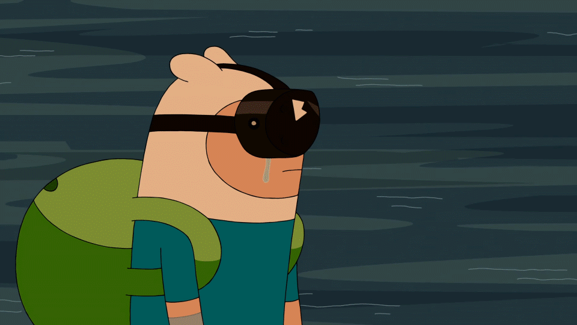

Non-canon sources (comics etc.) are currently VISIBLE.
INTRODUCTION

First things first, this piece is really long. If you don't want to read it all right now, I recommend bookmarking it so you can come back to it later.
Secondly, this timeline contains all the spoilers, up to and including Come Along With Me. Please don't read it unless you've finished the show. I also recommend you read all the canon media listed in the sources section below, especially The Enchiridion & Marcy's Super Secret Scrapbook, since a lot of the timeline draws from that.
I am from the UK, so one must pardon any British spelling or grammar.
Please leave your thoughts and criticisms in the comments section at the bottom of the page. If you would like to message me privately, send a PM to one of my social media accounts, linked at the top of the page.
Enjoy!

Special thanks
This piece was inspired by several Adventure Time timelines published before it. The main reason I started this project was because the timeline by RedLionKing has become very outdated and only deals with the core storyline of the show's past, although my version isn't quite as beautifully written so I recommend you check it out anyway. Also credit to this concise timeline by Viernes de Siluetas, who originally came up with the date system used on this website.
Thanks to Uncivilized Elk for his in-depth episode analysis videos which have inspired some details of the timeline, and thanks to all the editors and transcribers on the Adventure Time fan wiki without whom this task would have been a lot more arduous.
Lots of credit to SpiderCider and Décadent for translating this entire piece into Korean. 🇰🇷 Click here to read it! Although it hasn't been updated since The First Investigation came out and doesn't include any of the present day sections so it's quite out of date now. If anyone is interested in providing translations for any other languages, send me a PM.
And of course, thanks to Pendleton Ward, Adam Muto, and the entire Adventure Time crew for creating one of the most deep, complex, and inspiring worlds in the history of children's television.

Sources
Adventure Time is a large franchise, and as a result it has spawned a lot of spin-off media, such as comics, graphic novels, and video games. However, a lot of this officially licensed material is written without the creative input of the show's crew, and as a result is usually considered non-canon.
This timeline is designed to be as complete as possible, and therefore contains information from canon as well as non-canon sources. Non-canon information has been clearly highlighted using pink boxes. If you would rather only see canon information, you can simply ignore these pink boxes, or you can use the button at the top of the page to hide them completely.
The following items are considered canon on this site:
- All Adventure Time episodes except for A Glitch is a Glitch, Food Chain, Bad Jubies, and Diamonds and Lemons.
- The upcoming Distant Lands specials.
- The Graybles Allsorts and Frog Seasons shorts, as well as The Wand.
- The Fionna & Cake comic miniseries by Natasha Allegri.
- The video game Explore the Dungeon Because I DON'T KNOW.
- The Enchiridion & Marcy's Super Secret Scrapbook by Martin and Olivia Olson.
- The 2015 Spoooktacular comic book, by Hanna K. Nyström.
- The Islands graphic novel by Ashly Burch.
All other media is considered non-canon. Click here for a list of every single piece of canon and non-canon media which has been considered for the timeline. I have also considered things like promotional art and social media posts from members of the show's crew, but these are marked as non-canon. Storyboards and other production material might also be sourced, but only for clarification; cut scenes do not count. Scrapped episodes also do not count. Whenever I make a statement or pull a quote from somewhere, I will show the source in square brackets, [like this].

Date system
All dates are organised around a year zero, which is the year of the detonation of the Mushroom Bomb and the impact of the war-time Catalyst Comet. BMB stands for Before Mushroom Bomb and AMB stands for After Mushroom Bomb. The letter c before a date stands for circa, and indicates that this is an estimated date. The letter X is used to denote any digit (e.g. 99X could be any year from 990 to 999). Since the beginnings and ends of years are not clear, many events may be one year off. Where applicable, the New Year is assumed to be Finn's birthday.
For labelling sections with an equivalent real-life date, I have assumed that 0 AMB = 2010 CE. See the section on the Great Mushroom War for evidence supporting this date.
The detonation of the Mushroom Bomb and the impact of the war-time Catalyst Comet happen at approximately the same time. Uniting these two pivotal events makes it much easier to put a date to things, so I have assumed that they both take place in exactly 0 AMB.
And now, without further ado, let's begin...
THE PAST
This section covers the past, spanning the time from the beginning of existence up to 996 AMB.

c. 13.8 billion BMB/BCE
The Beginning of the Multiverse
quote
"Before there was time - before there was anything - there was nothing. And before there was nothing, there were monsters."
The Lich [Gold Stars]
In the very beginning, reality exists as a chaotic sea of monsters. Beings such as Orgalorg and the Lich reside in this writhing mass. By incomprehensible chance, the monsters eventually come to a common agreement on the state of reality, and this consensus becomes the Multiverse. According to an ancient tome called the Enchiridion, the Multiverse is therefore not actually material. The Multiverse is an emergent product of consciousness rather than consciousness being an emergent product of the Multiverse. Every sentient being that lives in the Multiverse paradoxically maintains its existence by experiencing it, and this also means that every sentient being has an existence beyond the material, known as their soul. [Gold Stars, The Enchiridion & Marcy's Super Secret Scrapbook]
quote
"Third Orb does not exist", said the Sage.
"Why?" asked the Student.
"Because the Multiverse", said the Sage, "within which Third Orb exists, does not exist. The Multiverse is a Consensus Reality shared by the Minds of all Sentient Beings. If they were to Die, the Multiverse, as such, would suddenly blink out of existence, vanish, be no more."
"Why?" asked the Student.
"Because", said the Sage, "there would be no one to Perceive It."
Wizards' Enchiridion, ch. 1 [The Enchiridion & Marcy's Super Secret Scrapbook]
Other than this, the origins of the Multiverse are largely unknown. Nobody knows where the monsters came from or what the true nature of reality is. Everything we know about the world before existence comes from that single glimpse granted by the Lich. [Gold Stars]
quote
"Where did the Multiverse come from? Since logic dictates that asking this question must result in an infinite regression - What created the Multiverse? And what created the Thing that created the Multiverse? Etcetera - this suggests that the mental engine of logical thinking is not designed to determine the Answer."
Wizards' Enchiridion, ch. 1 [The Enchiridion & Marcy's Super Secret Scrapbook]

c. 13.8 billion BMB/BCE
The Structure of Existence
The Multiverse imagined by the primordial monsters is composed of a vast (perhaps infinite) number of "dimensions" which each hold a universe. One of these is the Earth Dimension, which contains the planet Earth (sometimes referred to as "Third Orb") as well as all the other planets, stars, and galaxies in our own universe. Other dimensions include the Astral Plane, the Crystal Dimension, Lumpy Space, the Nightosphere, the Citadel, and many more. Amidst this complex system of dimensions is the Time Room. [The Enchiridion & Marcy's Super Secret Scrapbook, Still, Crystals Have Power, Trouble in Lumpy Space, Return to the Nigthosphere, Escape from the Citadel, The Lich]
quote
"At the centre of the Multiverse is a dimension called the Time Room, believed to be the quasi-corporeal dwelling place of the almighty Prismo. The Time Room is the single dimension that exists outside of time. The Time Room produces time waves that are experienced by other dimensions. Some dimensions have permanent links that allow travel to and from. Others become linked temporarily by naturally forming wormholes. And others can become linked artificially by magical portals, torn open by items of great power. An activated portal creates a time dilation in which either end of the portal experiences a temporal synchronisation allowing for the safe passage of particles through a non-local region of space-time."
Booko [The Lich]
The physics behind the concept of the Multiverse is somewhat explained in chapter four of the Wizards' Enchiridion, albeit in a very hand-wavy pseudo-scientific way. To prevent all of the dimensions from catastrophically colliding with one another, all particles in a specific dimension have their own unique "frequency". Particles with different frequencies reside in different dimensions. Adjusting this frequency allows for interdimensional travel. Another property of each dimension is its "elasticity", which determines how easy it is to change the frequency of particles within that dimension. As stated above by Booko, dimensions can be interlinked if the frequencies of the particles in a local region of both dimensions can be somehow synchronised, hence forming a kind of gateway called a "portal". The more elastic a dimension is, the easier it is to open a portal. [The Enchiridion & Marcy's Super Secret Scrapbook]
A very rudimentary form of temporal synchronisation is demonstrated by Finn the Human (a character who will be introduced later) when he interacts with the little people, who reside in "a different dimensional plane" according to Jake the Dog (another character who will be introduced later). Finn shakes the little people, which synchronises their frequencies enough to allow for brief interdimensional communication. [All the Little People]
The elasticity of a dimension has other effects besides ease of interdimensional travel. For example, highly elastic dimensions are more easily influenced by magic (more on that in a couple of sections), and are more likely to allow for interspecies hybrids to be born. The most extreme known examples of hybrids are Jake's descendants, who contain genes from at least four species; bears, rainicorns, dogs, and shape-shifters. The elasticity of a dimension can vary over time, causing there to be periods during which magic is stronger or weaker than usual. [The Enchiridion & Marcy's Super Secret Scrapbook, Ocarina, Elemental]
note
A slightly more scientifically rooted explanation for the structure of the Multiverse is alluded to in storyboard panels from Crossover. The panels cite a 1994 Scientific American article by physicist Andrei Linde which talks about the eternal inflation model. However, this model has never been explicitly referenced in the show and is pretty much irreconcilable with the other model.
One final principle of the Multiverse is the concept of "Amok Time", which states that causality can sometimes be reversed. This allows for accurate predictions of the future and the occasional bit of time travel. [The Enchiridion & Marcy's Super Secret Scrapbook]
non-canon information
According to one account, there is a place at the very beginning of time called the Vanishing Point. Anyone who gets trapped there will be erased from history. Jake the Dog claims to have seen the Big Bang while travelling back in time to visit the Vanishing Point. [Beginning of the End #1 and #3]

c. 13.8 billion BMB/BCE
The Cosmic Entities
Prismo, who was briefly mentioned earlier, is one of the many god-like "cosmic entities" who make up the pantheon of the Multiverse. Most of them have a specific purpose within the elaborate clockwork of existence.
Prismo is a Wish Master and the keeper of the Time Room, capable of granting one wish to anyone who succeeds in visiting him. He takes the form of a friendly pink two-dimensional projection of a human figure. He is kept alive by the dreams of an old man who sleeps in the floating ruins beyond the Time Room. [Finn the Human, Wake Up]
The Cosmic Owl is in charge of monitoring the dreams of every being in the Multiverse and chooses which ones will come true. Dreams containing the Cosmic Owl are therefore invariably prophetic, although these dreams are often metaphorical rather than literal. Dreams containing the Cosmic Owl in which the dreamer sees their own death are known as "croak dreams". He lives in a motel made of stars, and often visits the Time Room for game nights with Prismo. The fact that Prismo is the manifestation of a dream possibly hints at a deeper connection between he and the Cosmic Owl. [The New Frontier, Jake the Dog, Hoots]
Death governs the fifty Dead Worlds, which hold the souls of the deceased. He takes the form of a humanoid with an animal skull for a head. He lives in a castle of light in the Land of the Dead, and is in a romantic relationship with a two-headed snake deity named Life. [Death in Bloom, Sons of Mars, The Gift That Reaps Giving]
The Catalyst Comet is a cosmic entity that operates on a millennia-long cycle. [Astral Plane]
quote
"Every one thousand years, the Catalyst Comet mysteriously reincarnates itself and collides with Earth, bringing with it an Agent of Change."
Grob Gob Glob Grod [Astral Plane]
Every comet strike brings great change to Earth by delivering a being known as an "Agent of Change" or "Comet Avatar". Sometimes, the Agent of Change will succeed in turning the world into a better place. But sometimes, the Comet delivers great evil into the world, and an era of destruction and death ensues. The Agents of Change are reincarnated after death so that they can continue their mission over the course of more than one lifetime. The Comet takes on a different colour every time it strikes. Four have been depicted: Green, Yellow, Blue, and Purple. The agents that they spawn will go on to become some of the most influential beings in history. [Evergreen, Orgalorg, The Comet]
GOLB is the cosmic entity embodying chaos and discord, taking the form of an immense red infantile creature with a pyramid-topped head. When he consumes people, they are reset to their primal state and eventually removed from existence in such a way that not even wish magic can bring them back. [You Forgot Your Floaties, Come Along With Me Part 4]
Many of the other monsters from before time likely exist as cosmic entities, including Orgalorg. In one ancient book, another monstrous deity named Malus is seen alongside GOLB. [Gold Stars, Come Along With Me Part 3]
Prismo apparently has a "boss" whose identity is unknown. [Crossover]
Some other characters are depicted as god-like but appear to live in singular dimensions alongside mortal peers. Examples of such beings include Abraham Lincoln, Party God, and Grob Gob Glob Grod. [Sons of Mars, The Party's Over Isla de Señorita]
non-canon information
According to one account, a cosmic entity named Chronologius Rex, also known as "The All-Time", rules over the Vanishing Point. Oaths made in the name of this deity must be upheld, otherwise the one who breaks the oath will be abducted to the Vanishing Point and deleted from history. [Beginning of the End #1]
Another account claims the existence of four cosmic entities who represent four of the five elements. The elements and the entities who represent them will be explained shortly. [Adventure Time #59]

c. 13.8 billion BMB/BCE
The Concept of Death
All the mortal beings in the Multiverse will eventually die. However, death is not necessarily the end. After the mortal body has perished, the soul can continue without it. There appear to be two main possibilities: reincarnation, or transportation to one of the Dead Worlds.
In the first option, a person's soul is granted a new body following the death of their previous form. They retain none of their memories, but maintain a tenuous cosmic connection with their past selves. The only beings currently known to reincarnate are unique entities like the Elementals and the Catalyst Comet's Agents of Change. It is not known whether or not "ordinary" beings can ever reincarnate. [The Vault, Jelly Beans Have Power]
During transportation to the Dead Worlds, it is implied that ending up in a higher Dead World is a more desirable outcome. According to Jake the Dog, deceased beings have their deeds tallied after death. This process, if it exists, might be how the deceased are sorted into the Dead Worlds. The highest known Dead World is the Fiftieth, which appears to be the equivalent of Heaven and is probably synonymous with "Glob World". It is not clear whether the Dead Worlds are actual dimensions or a different kind of thing. [The New Frontier, Ghost Princess, The Suitor]
quote
Finn, when I die my individual Earth-consciousness is gonna go all over everywhere while Glob tallies my deeds. I'm gonna be all around you; in your nose, and your dreams, and socks. I'll be a part of you in your Earth-mind. It's gonna be great!
Jake [The New Frontier]
Also according to Jake, low-level Dead Worlds are the worlds containing ghosts, which are souls without a material counterpart. The low-level Dead Worlds overlap with the material world, meaning ghosts can interact with the living. Deceased beings normally become ghosts when they still have "unfinished business" in the mortal plane. Upon completion of their business, they can move on to a higher Dead World. Ghosts sometimes do not retain memories of their mortal life, and to ascend to a higher Dead World they must discover how they died. [Ghost Princess, Ghost Fly]
Dead Worlds can be briefly visited by "dying" temporarily; for example, by stopping and then restarting your heart. It also seems to be possible for ghosts to "die" a second time; the fate of these souls is unknown. [Ghost Fly]
It's possible that some other dimensions, such as the Land of the Dead and the Spirit World, may also be examples of Dead Worlds. [Death in Bloom, Beyond This Earthly Realm]
non-canon information
According to one account, deceased beings are sorted into one of the fifty Dead Worlds based on the good and bad things they did during their lives, and the way in which they died, which fits with Jake's explanation. They also have another option: they can take physical form as a demon and go to live in the hellish Nightosphere. [Adventure Time #53]

c. 13.8 billion BMB/BCE
The Concept of Magic
quote
"What is the Origin of Wizardry? Pour yourself a cold glass of lemonade, sit in a comfy chair, kick your shoes off, lean back, close your eyes, and think. If reality is Mental in nature, analogous to a Cosmic Mind, and if Wizardry is a function of the Imagination, then the Forces of Nature in the Multiverse are akin to the Currents of the Cosmic Imagination. Thus, the Origin of Wizardry is at the Core of Creation, and Wizards can create or destroy as they wish, tapping into the Power of the Cosmic Imagination."
Wizards' Enchiridion, ch. 1 [The Enchiridion & Marcy's Super Secret Scrapbook]
According to the Enchiridion, since the Multiverse is maintained by the perceptions of the sentient beings within it, the imagination can actually be used to change the very structure of existence. This practice is most commonly known as "magic" and used almost exclusively by witches and wizards, although others can also learn to manipulate the material world using their mind. [The Enchiridion & Marcy's Super Secret Scrapbook]
quote
"However insecure a wizard might be, wizardry is the realm of the Imagination, and even the flabbiest, most flop-sweaty wizard can warp your perceptions enough to make you believe they are fully capable of kicking your butt."
Wizards' Enchiridion, ch. 2 [The Enchiridion & Marcy's Super Secret Scrapbook]
Magic most commonly manifests itself in the form of spell-casting, in which magic users recite incantations and channel their imagination through magically charged items in order to produce various effects. They usually have to practice one trick over and over until they are able to consistently perform it, which is why most magic users have a unique but limited arsenal of spells. There are other methods of performing magic as well. For example, Finn the Human has performed magic via meditation and song, and Son of Rap Bear can produce explosions by rapping. [The Enchiridion & Marcy's Super Secret Scrapbook, Still, The Comet, Son of Rap Bear]
According to Betty Grof's MMS theory, all magic users have varying levels of magic, madness, and sadness. These three properties are required in order to reliably perform magic. Therefore, individuals with tragic pasts are more likely to be drawn into the world of wizardry, and other individuals may be driven to madness and sadness if they attempt to pursue magic. The three traits enforce and balance each other. [You Forgot Your Floaties]
There are two perspectives on the concept of magic. Scientists like Princess Bubblegum (who will be introduced later) believe that it happens due to observational quantum effects and is grounded in scientific principles. This does not mean that scientists do not believe in magic; to not believe in magic in a world where it is so obviously abundant would be foolish. Rather, they simply disagree with the idea of calling it magic, since this makes is sound like it is independent from science. This is somewhat justified, since the mystification of magic can often lead to confusion between real magic and exploitative nonsense, especially in gullible people. On the other end of the spectrum, most magicians choose to accept the hand-wavy imagination theory given in books like the Enchiridion, and question it no further than that. Thanks to this blind belief, they are generally far more proficient at performing magic. Neither view is incorrect. [Wizards Only Fools]

c. 13.8 billion BMB/BCE
The Infinite Enchiridion
The Enchiridion, which has already been mentioned a few times, is an ancient tome and one of the most powerful magical artifacts in the Multiverse. Its exact origin is unknown. Due to its contradictory nature, it may not even have a true origin. Over the course of all of history, it is written and enchanted by thousands of wizards. These spells cause it to gain sentience, change with every reading, automatically translate into the reader's native language, and contain prophetic knowledge from the future. The original tome is over eight million pages long. Various abridged copies are eventually produced, all of which retain its magical properties. The tome is split into two books: one for heroes and one for wizards. It teaches heroes how to conduct themselves and best serve their wizard masters, and it teaches wizards how to perform many ancient and secret forms of magic. [The Enchiridion & Marcy's Super Secret Scrapbook]
According to one iteration of one copy of the Enchiridion, every ten thousand years it transports its original author to the Time Room, where they must make a choice. They can either force the Multiverse to reset to how it was ten thousand years ago, or they can allow it to continue into the unknown. The author almost always chooses to have it reset. [The Enchiridion & Marcy's Super Secret Scrapbook]
quote
"Since we've done this thousands of times, you may feel this Universe has been played out, so to speak. Every other time, you've decided to go back in time and start over, to that moment in the quarry when you were carving your name and your true love's name into the side of the boulder, when you first conceived of writing The Enchiridion. You were the young Wizard who wrote it, but you've forgotten. When I become sentient enough to tell you, after ten thousand years, I remind you and ask you if you'd like to end it all and let the Unknown occur, or if you'd like to go back again and experience another variation of the last ten thousand years. The Multiverse is unstoppable. Even if it ends, it will sprout back into existence again, but this time in some new, unknown way. Just as it did when all of This began. I'm just asking. It's your decision."
Wizards' Enchiridion, ch. 7 [The Enchiridion & Marcy's Super Secret Scrapbook]
It is somewhat unclear how this cycle fits into the rest of the history of the Multiverse.
Placing "Gems of Power" into various slots in the Enchiridion can produce powerful magic spells. Most notably, filling the gem slots in the front cover enables the user to open a portal to any dimension in the Multiverse, and might even allow for time travel. [The Lich, Skyhooks II]

c. 4.5 to 3.5 billion BMB/BCE
Earth, the Nightosphere, and the Elementals
The planets Earth and Mars form in the Earth Dimension around a sentient star called the Sun. Around a billion years later, life begins to emerge on Earth. [Something Big]
A demon named Hunson Abadeer comes into being around this time, and becomes ruler of the Nightosphere, a fiery and hellish dimension. He constructs or obtains the Abadeer Axe. [It Came from the Nightosphere, Return to the Nightosphere]
non-canon information
quote
"My single earliest memory occurred eons before the Mushroom War. This memory consists of one image: me eating a ham sandwich, perched atop Rock Candy Mountain, overlooking the Sea of Something, long before Plants, Animals, and Actual Things came into existence in the Land of Ooo, surrounded by an all-encompassing Night of Nothingness. Full disclosure: I believe I was a ghost at the time, although it isn't clear how a ghost can sit on a mountain peak or eat a ham sandwich."
Hunson Abadeer [The Adventure Time Encyclopaedia]
It is not known if Hunson Abadeer was once a living being, or if his soul simply came into existence out of nothing. Even he admits to not knowing his own origin. Once he manifests a physical demon body, he and most other demons end up living in the Nightosphere. He describes the ancient demons as "trepanning fetishists" who attach engraved iron plates to their skulls containing secret knowledge. He claims that he was a carny boss in his youth, going by the name Johnny Corndog. [The Adventure Time Encyclopaedia]
His ambitions later grow beyond these humble beginnings. He constructs the Abadeer Axe and successfully uses it to defeat the previous rulers of the Nightosphere, becoming the new Lord of Evil. [Seeing Red]
quote
"A very, very long time ago, the Nightosphere was a very different place. It was chaotic. Lawless. A real nasty place. That's about when my dad showed up. He got sick of nothing getting done, everybody eating everybody else. These two old, evil globs, they liked things just how they were. My dad had different ideas. He worked old magics for a hundred days and nights - taking snack breaks, obviously - until he made a weapon that could win the Nightosphere."
Marceline Abadeer [Seeing Red]
Hunson's rule is cruel and tyrannical, but apparently still better than that of his predecessors. [Seeing Red]
Later on, Hunson Abadeer and Death begin to compete for the souls of the recently deceased. Hunson tries to encourage them to become demons and join his subjects in the Nightosphere, while Death tries to encourage them to come with him to the Dead Worlds. [Adventure Time #53]
At one point the two rivals are both members of the same cover band. Hunson kicks Death out for being a better drummer than him. [The Adventure Time Encyclopaedia]
On Planet Earth exists the concept of five fundamental elements: fire, ice, candy, slime, and lumps (parodying the real-life classical elements of fire, water, earth, air, and aether). Despite the existence of five elements, lumps is less well known and as a result many accounts describe only the first four. [Elemental, Skyhooks II]
quote
"Ever since life began on this planet, there have always been embodiments of the four elements: fire, ice, candy, and slime. Across eons and millennia the four Elementals lived, and died, and lived again."
Patience St Pim [Elemental]
The Elementals are powerful wizards who live on Earth and each represent one of the aforementioned elements. They possess the power to generate and shape their own element in a variety of ways. Whenever an Elemental dies, their soul is reincarnated into a new body, meaning that there is almost always a living representative for each element at any one time. Like other beings who reincarnate, the Elementals can occasionally make contact with their past lives. [Evergreen, Jelly Beans Have Power]
The fifth element, lumps, behaves as an "anti-element", and also has an associated Elemental to go with it. The Lumps Elemental is capable of undoing the magic of the other four, and can also undo some other types of transfiguration magic. The element is associated with a dimension called Lumpy Space. People from Lumpy Space have been seen far from Planet Earth, suggesting that Lumpy Space is accessible from anywhere in the universe, and perhaps from anywhere in the Multiverse. Furthermore, lumps apparently permeates through the universe, similar to aether, its classical counterpart. [On The Lam, Skyhooks II]
quote
"Lumps are the subspace molecular lattice that binds together the scientific and magical forces of Ooo. More powerful than any one element, it's the force that orders reality into its true shape."
Lumpy Space Queen [Skyhooks II]
Like all magic users, the power of the Elementals is entirely dependent on the elasticity of the Earth Dimension. For example, Evergreen, who lived millions of years in the past, is capable of constructing an entire castle from ice, whereas the Fire Elemental of the pre-war era struggles to heat a single cup of coffee. [Evergreen, Elemental]
The symbol used to represent the main four elements is a circle divided into quarters. [Jelly Beans Have Power]
non-canon information
According to one account, four cosmic entities each rule over one of the four elements. Zon inhabits the Sun and rules the element of fire, Lun inhabits the Moon and rules the element of ice, Arklothac rules the element of candy, and Ng'zot Aa rules the element of slime. [Adventure Time #59]
Zon, Arklothac, and Ng'zot Aa reap the Earth for many years, terrorising the fledgling life that has begun to appear. Lun takes pity on the inhabitants of Earth and decides to take action against the other Elementals. She betrays them and has them locked outside the Earth Dimension so that they can do no further harm. To prevent the evil Elementals from ever returning, Lun sacrifices herself to create the Sword of Lun, a weapon capable of destroying them. Before being used, the sword must await its true bearer, "a warrior who can withstand great bodily loss without injury". [Adventure Time #59 and #61]
As a result of this event, the Ice Elemental's betrayal will go on to echo and repeat itself several times through history. [Evergreen, Elemental]

c. 65 million BMB/BCE
Evergreen's Crown and the Green Catalyst Comet
During the time of the dinosaurs, the four Elementals are Urgence Evergreen (ice), Balthus (fire), Chatsberry (candy) and Slimy D (slime). They each rule their respective elemental realm. The Lumps Elemental of this time is never mentioned. Urgence Evergreen the Ice Elemental has a mutated dinosaur servant named Gunther, who vainly hopes to eventually become his master's magical apprentice. [Evergreen]
non-canon information
Gunther briefly meets Finn the Human and Jake the Dog while they are travelling through time after escaping the Vanishing Point. This is chronologically the first of several cameos that Finn and Jake make throughout history during this journey. [Beginning of the End bonus chapter]
According to another account, it is around this time that two sentient meteors crash to Earth; a red one named Carl and a blue one named Gemma. They each become compressed into gemstones within two separate volcanoes. The two gemstones are in love, but are trapped under the ground and forced to remain separated for millions of years to come. [Adventure Time #25]
Evergreen spots the impending Green Catalyst Comet and notices that it is far more powerful than those that have come before it. It carries so much power that it would wipe out most of the life on the planet, so Evergreen seeks a way to stop it. He uses his knowledge of technology and magic to construct a golden crown capable of granting its wearer their greatest wish, but it needs a power source: the ruby eyes of the lava dog Magwood. To help battle Magwood and retrieve the eyes, Evergreen summons the other three Elementals to his castle from their realms. They reject his plan, stating that wish magic is too dangerous and reminding him that even if they die, they will be reincarnated. [Evergreen]
quote
"Hath not a Comet impacted our world every thousand years with no lasting grievousness? If this Comet hits, we four indeed may perish, but the elements we embody - fire, ice, candy, and slime - will live on. But a misplaced wish could cause irreversible damage to the very structure of existence."
Balthus [Evergreen]
Ignoring their advice, Evergreen has them frozen and sets off to take on Magwood alone. His mission is successful and he retrieves the eyes before rushing them back to his castle and completing the crown. However, he is tracked by the blind and enraged Magwood, and just as Evergreen is about to use the completed crown to vanquish the Comet, the lava dog attacks his castle. Evergreen becomes trapped under debris during the following battle and is unable to put on the crown and wish for the Comet's destruction, so instead he orders his dinosaur servant Gunther to do it. But Gunther's greatest desire is not to destroy the Comet. [Evergreen]
quote
"Instead of stopping the Comet, Gunther's truest, deepest wish came true. His nose lengthened, white hair grew from his head, and a beard descended from his face as the crown changed Gunther into Evergreen. Snow began swirling within the room. Evergreen was horrified. The Comet had arrived. It was all too late."
Wizards' Enchiridion, ch. 5 [The Enchiridion & Marcy's Super Secret Scrapbook]
Gunther's wish becomes permanently associated with the crown, and its wish-granting abilities are disabled. In the future, any individual who wears the crown will become its "host" and turn into Gunther's image of Evergreen: a cruel, mad, and powerful ice elemental. [Holly Jolly Secrets Part II]
The Green Catalyst Comet kills the four Elementals, and is likely to be the event which causes the extinction of the dinosaurs. Gunther is "saved" by the crown; a copy of his original consciousness is held within its complex circuitry. Any future hosts of the crown will be similarly "saved". [Evergreen, Broke His Crown]
It is likely that the Green Comet's Agent of Change is the Lich, an embodiment of evil whose only desire is to extinguish all life. He claims to be "the last scholar of GOLB", although the exact meaning of this is unknown. Since the Multiverse is maintained by the conscious beings within it, the end of life would mean the end of the Multiverse, and reality would return to its initial state of chaos and monsters. This is probably the Lich's ultimate goal. The Lich lies dormant for millennia, awaiting the right opportunity to rise to power. [Finn the Human, Whispers]

c. 200,000 BMB/BCE
Humans and Vampires
The extinction of the dinosaurs allows mammals to dominate the planet, and eventually this leads to the evolution of vampires and humans. According to Hunson Abadeer, vampires exist before the emergence of humans but go into hiding during the Ice Age. [The Enchiridion & Marcy's Super Secret Scrapbook]
quote
"When my dad was trying to wise me up to the ways of the world, he told me that the race of vampires were ancient. He said they'd been on Earth before humans, and that when the Ice Age began, they hibernated underground until it was over."
Marceline Abadeer [The Enchiridion & Marcy's Super Secret Scrapbook]
Vampires are terrifying humanoid creatures who suck the blood from the necks of other creatures for nourishment, and reproduce by turning their victims into more vampires. However, vampires do not actually feed on blood itself, instead taking their sustenance from the colour red. Most vampires feed on blood anyway, preferring the taste. They remain hidden from the human population for most of human history, only appearing in folklore and fictional stories like Dracula. [Evicted!, Vamps About, Fionna and Cake and Fionna]
Werewolves also seem to be native to Earth, so probably evolved at around this time. Like vampires, they remain hidden from the humans. [The Enchiridion & Marcy's Super Secret Scrapbook]

XXXX BMB/BCE
The First Coming of GOLB and the Yellow Catalyst Comet
Earth is not the only place in the Solar System harbouring life. Long ago, a self-proclaimed utopian society emerges on Mars, consisting of the green-skinned Martian race. It is not clear where they came from, although they have several strong connections with the human race. Their king is Abraham Lincoln, a human from the future, who was presumably somehow transported back in time to become the ruler of Mars. Lincoln's champion is the four-faced Grob Gob Glob Grod, who later becomes entwined in the religious beliefs of the inhabitants of Earth. Grob Gob Glob Grod has a brother named Magic Man, and Magic Man has a wife named Margles. [Sons of Mars]
note
Grob Gob Glob Grod's name is often shortened to "Glob". For simplicity, this website will refer to him as Glob most of the time. Additionally, it is worth clarifying that Glob and GOLB are two completely separate entities and should not be confused.
A human roboticist from the future named Moseph Mastro Giovanni is involved in the design of the Martian colony, as seen in blueprints on his desk, and the human magician Betty Grof claims that Glob's helmet will react to her "ancient human DNA code", further suggesting at an anachronistic connection between humans and Martians. [You Forgot Your Floaties, The More You Moe The Moe You Know Part 2]
non-canon information
According to one account, there was a period of conflict on Mars known as the Martian Independence Era, suggesting that the Martian society emerged following some kind of war of succession. [Marcy & Simon #5]
Mars is attacked by GOLB, the ancient Cosmic Entity embodying chaos, during an event known as the First Coming of GOLB. The entity consumes Margles, the wife of Glob's brother Magic Man, and completely removes her from existence. To prevent GOLB's second coming, Magic Man builds a defence system called the Magical Automated Resistance Generating Laser Energy Supplier (M.A.R.G.L.E.S.) in the image of his late wife, and plans to install it on the peak of the tallest mountain on Mars, Olympus Mons. [You Forgot Your Floaties]
quote
"I looked everywhere, you know. Every dimension, every Dead World. I even wished you back in Prismo's Time Room, but you were gone - erased. For hundreds of years I held that sadness until my magic and science were strong enough to create you from my nightmares."
Magic Man talking to M.A.R.G.L.E.S. [You Forgot Your Floaties]
Glob worries that Magic Man's grief over the loss of his wife has corrupted his spell programming. Unfortunately, this turns out to be correct, and the new defence system goes insane and has to be deactivated. Magic Man begins to spiral into madness after symbolically losing his wife for a second time. His madness turns to unrelenting cruelty. He uses his magic to become an evil trickster and torments the people of Mars for centuries to come, for nothing more than his own entertainment. [Sons of Mars, You Forgot Your Floaties]
At least a thousand years before 0 AMB, the Yellow Catalyst Comet begins to approach Earth. Orgalorg, one of the monsters from before time, plans to intercept it and absorb its power. Abraham Lincoln sends Glob to vanquish Orgalorg and end his reign of terror. [Orgalorg]
quote
"Orgalorg is an ancient Cosmic Entity who ruled the Solar System with his cruel and deadly whims: The Breaker of Worlds. He was seeking ever more power. He desired to intercept a Catalyst Comet and absorb its essence. Thereby did he offend the King of Mars, who decreed that Orgalorg should be cast down. And yes, he was cast down, by the flaming sword of Grob Gob Glob Grod. Orgalorg was banished to an inhospitable planet where he would forget everything. Yea, even forget his identity and from whence he came. And the prophets say that the gravity of the planet did crush and compress Orgalorg into a more powerless and cuddlesome form."
Alien Elders [Orgalorg]
The "inhospitable planet" spoken of by the alien elders is actually Earth. Orgalorg is compressed into the form of an immortal penguin, his memories and identity suppressed into the deepest depths of his mind. He becomes a hunter-gatherer alongside early humans. [Orgalorg]
Meanwhile, the Yellow Catalyst Comet strikes the Earth and leaves behind its Agent of Change. Given the colour scheme, it's possible that this Agent of Change will eventually be reincarnated as Jake the Dog, although this has not been confirmed.
non-canon information
Finn and Jake witness both the installation of M.A.R.G.L.E.S. and the battle between Orgalorg and Glob while they are travelling through time after escaping the Vanishing Point. [Beginning of the End bonus chapter]
note
Glob still had his hair during the First Coming of GOLB, but during his battle against Orgalorg he is wearing his headgear. Since Glob wears his headgear to hide his baldness, this suggests that the arrival of the Yellow Catalyst Comet came after the First Coming of GOLB. However, this is not confirmed; the arrival of the Yellow Comet could have come first.
At some point, Abraham Lincoln meets Hunson Abadeer. [Return to the Nightosphere]

XXXX BMB/BCE
Other Worlds
Aside from Earth and Mars, a multitude of other planets in and around the Solar System become inhabited during the universe's long history. Eventually, interstellar travel becomes widespread enough that many of the galaxy's species are able to visit one another, forming the backbone of an interstellar community. As far as we know, the humans on Earth never achieve contact with their alien neighbours. [On The Lam]
The home planet of the siblings Cuber and Tuber appears to be a fairly Earth-like world. Their people invent the "graybles"; short thematically-linked stories depicting historical scenes, used to teach morals and practical skills or simply for entertainment. [Graybles 1000+]
Many of the planets once terrorised by Orgalorg before his defeat at the hands of Glob are home to a range of unique lifeforms. [Orgalorg]
The planet of the koala people appears to be a desert world where food and water is scarce but gold is plentiful. The planet falls under the oppressive regime of a group of greedy humanoid lizards, leading to the emergence of a group of koala rebels who have been fighting for their freedom ever since. Many other alien species are also present on this planet. [On The Lam]
The home planet of the grey aliens is abandoned by its native inhabitants at some point. Some of the grey aliens will eventually settle on Earth. A round trip from Earth to this planet and then back takes at least forty years. [High Strangeness, Come Along With Me Part 1]
Nerraw is a small world orbited by an even smaller black hole. It is inhabited by a powerful shape-shifter named Warren Ampersand, who wishes to be immortal. He creates a plan to drain the youth from his own children so that he can live forever. Every generation, he impregnates a chosen host so that their offspring inherit his powers. Later in his children's lives, he lures them to Nerraw where he tricks them into shape-shifting while wearing a special belt which drains their power and gives it to him. Warren uses his shape-shifting powers to fabricate an entire society and culture for Nerraw, as part of the deception. [Jake the Starchild]
quote
"I was dying. I needed to siphon your precious stretchy essence to keep me young and virile. I use these belts as a conduit. The more you stretch the stronger I grow. I've done it hundreds of times, to hundreds of sons."
Warren Ampersand [Jake the Starchild]
He continues this sick trickery for many generations, exploiting and then outliving each child in succession. One of his future sons will be Jake the Dog. [Jake the Starchild]
non-canon information
A collection of asteroids are inhabited by two species named the leaflan and the tuffbones. The asteroids appear to be part of Earth's solar system because Princess Bubblegum can see them through a telescope and reach them using a conventional rocket from Earth. [Marceline Gone Adrift #2]

XXXX BMB/BCE
The Rainicorn-Dog Wars
A dimension called the Crystal Dimension is mainly inhabited by two species: the Korean-speaking magical rainbow-unicorn creatures known as "rainicorns", and a race of intelligent talking dogs. For unknown reasons, the two species become each other's enemies, eventually leading to the outbreak of the millennia-long Rainicorn-Dog Wars. Not much is known about how the wars play out, nor who wins, although it seems to involve one or both sides engaging in aerial flying saucer combat. [Her Parents]
quote
"For thousands of years rainicorns battled dogs for territory in the Crystal Dimension."
Jake [Her Parents]
This extremely long time scale could be an exaggeration on Jake's part. The wars might only have gone on for a few years or even less.
non-canon information
Finn and Jake briefly witness a battle from the Rainicorn-Dog Wars while travelling through time after escaping the Vanishing Point. The dogs are seen to battle using ray guns, while the rainicorns attack using energy blasts from their horns. [Beginning of the End bonus chapter]
All of rainicorn history is documented in a huge book called the Rainicornicopia. [Paper Pete]

c. 4500 to 400 BMB (2500 BCE to 1600 CE)
Orgalorg Through Ancient History
The penguin form of Orgalorg appears in some hieroglyphic artwork from the time of the Ancient Egyptians, implying that he joined their society. The Egyptians construct the pyramids. As humans continue to develop and thrive, the elasticity of the Earth Dimension settles into a more rigid pattern, bringing about the end of magic. For now. [Orgalorg, Daddy-Daughter Card Wars, The Enchiridion & Marcy's Super Secret Scrapbook]
non-canon information
A race of magical rock people live on Earth. After magic fades from the world, they are banished by early humans, and live in subterranean lairs for the next few thousand years, eventually coming to call themselves "The Underground". [Adventure Time Comics #20: "Cavities"]
During the height of the Roman Empire, the penguin form of Orgalorg is a gladiator and a chariot racer in Ancient Rome, and is depicted in some pottery from the time. [Orgalorg]
The legend of the Dual Swords takes place during the time of the Ancient Romans:
quote
"Legend tells of two mighty gladiators, as bonded to each other in friendship as two sides of a coin, who were made to fight a death match by their wicked emperor. When one of the Heroes' swords was unexpectedly stolen by a flying serpent who liked shiny things, the other Hero split his own sword in half, and the two gladiators each fell on one half in defiance of the cruel emperor's order. Throughout the centuries, the Dual Swords have been separated many times by merchants, curio collectors, and thieves, but they always seem to find their way back together."
Heroes' Enchiridion, ch. 3 [The Enchiridion & Marcy's Super Secret Scrapbook]
Thousands of years later, the Dual Swords will end up back together in the arena of the Fight King, who is likely an immortalised version of the evil emperor. [Morituri Te Salutamus]
During the middle ages, Orgalorg joins some kind of hooded organisation: possibly a monastery or a secret society. During the Elizabethan era, he lives in Britain and appears alongside Elizabethan nobles. [Orgalorg]

c. 1670 to 20 BMB (340 to 1990 CE)
The Journey of Evergreen's Crown
In Ancient Greece, Saint Nicholas comes into possession of Evergreen's crown and wears it. Like the dinosaur Gunther, the original Santa's consciousness becomes stored in the circuitry of the crown. He briefly gains the powers of the Ice Elemental, which could be the cause of Santa Claus' later association with snow and ice. It is unknown whether he is able to overcome the crown or if he succumbs to it until it finds its next host. [Broke His Crown]
quote
"Says he's the first 'Santa'. Like, what's even a 'Santa'?"
Gunther's consciousness [Broke His Crown]
Likewise, the consciousness of an Icelandic boy named Sveinn becomes stored in the crown's circuitry after wearing it just once. The fact that he wore it so briefly suggests either that he is able to overcome its influence or that he dies not long after wearing it. [Broke His Crown]
quote
"That's Sveinn. He only wore the crown once."
Gunther's consciousness [Broke His Crown]
The crown remains in Northern Europe, and by around 20 BMB it has come into the possession of an unidentified Scandinavian dockworker. [Holly Jolly Secrets Part II]

145 BMB (1865 CE)
The Assassination of Abraham Lincoln
Despite taking a fatal gunshot to the head, Abraham Lincoln manages to make some kind of deal with Death, bribing him with a penny. Instead of being killed, he becomes immortal and travels back to ancient times, where he becomes the deific King of Mars and rules the Martian colony. On Mars, Abraham Lincoln is prophesied to someday meet Jake the Dog. [Sons of Mars]
quote
"Look! It's the dog. The one you were prophesied to meet!"
Grob Gob Glob Grod [Sons of Mars]

c. 100 BMB to 0 AMB (1910 to 2010 CE)
The Further Adventures of Orgalorg
Sometime around the dawn of the twentieth century, the penguin form of Orgalorg opens a drinks manufacturing company called "Gunto's" and becomes fairly wealthy thanks to its success. He owns a car (closely resembling a Ford Model T) and probably still lives in Britain. It seems unlikely that an immortal penguin god would be able to adapt and blend in so well with modern society, but somehow Orgalorg manages to do so without raising too many eyebrows. [Orgalorg]
During the First World War, he becomes a fighter pilot for the British Royal Air Force and flies a biplane resembling a Sopwith Camel, which entered service in 1917 CE (93 BMB). It is unknown whether or not Orgalorg has any involvement in the Second World War, but at some point he becomes a movie director. By the seventies, he has moved to the United States where he joins the counter-cultural movement. [Orgalorg]
non-canon information
According to one account, human space travel develops significantly faster than it does in real life history, to the point where humanity constructs a large functional base on the Moon prior to 0 AMB. [Adventure Time #60]
Despite his comfortable integration into human society, Orgalorg somehow realises that he is something more than just an immortal penguin. Since it was the gravity of the planet Earth which compressed him into his current weak form, he recognises that he must attempt to escape into space so that he can take his true form. Meanwhile, a man named Davey Johnson works a desk job at a space agency. He is apparently a reincarnation of the Blue Catalyst Comet's Agent of Change, but the Blue Catalyst Comet probably hasn't struck by this point, so this might be false. He is offered the chance to go to space but declines, and thanks to this decision he spots Orgalorg trying to steal the rocket and has him apprehended. [Adventure Time #50]
Shortly before 0 AMB, a Mars rover (resembling the real life Mars rovers Opportunity and Spirit) discovers evidence of the Martian civilisation. It's possible that humanity was on the brink of making contact with Mars at this time. [Sons of Mars title card]

45 BMB to 0 AMB (1965 to 2010 CE)
Simon and Betty
In the Earth Dimension, magic has mostly died out by modern times, with the great heroes and wizards of old becoming nothing but myths and legends. However, there still seems to be a vague awareness of the existence of magic and it is suggested that a significant number of humans still believe it is real. [Holly Jolly Secrets Part II]
quote
"Now, I never believed in the supernatural stuff myself - just had a fascination with superstitions."
Simon Petrikov [Holly Jolly Secrets Part II]
A human named Simon Petrikov is born in 45 BMB (1965 CE) to unknown parents. Another human named Betty Grof is born around the same time. [Simon & Marcy]
non-canon information
According to one account, Simon is raised by his unnamed mother. [Adventure Time Comics #16: "Broken"]
Simon and Betty both become post-graduate antiquarians studying ancient artifacts and their relation to magic at the University of Petrograd in Russia. They meet each other just before Betty was due to leave on a six month trip to study petroglyphs in the Australian outback. She cancels the trip and becomes almost obsessed with Simon and his work. [The Enchiridion & Marcy's Super Secret Scrapbook, Temple of Mars]
quote
"I never took that trip. I met Simon the next day and he was just so... amazing. I put everything on hold to help him search for the Enchiridion."
Betty Grof [Temple of Mars]
quote
"Remember how we first met, when we both reached for the same book in the library, and I said you should check it out first, and when you returned it you left a note inside because you knew I'd borrow it next? It was the funniest, smartest note I've ever read."
Simon Petrikov's consciousness [Broke His Crown]
non-canon information
According to one account, Simon and Betty met in June when Betty was twenty-five years old. Assuming Betty was born around the same time as Simon, this would mean they met in about 20 BMB (1990 CE). [Adventure Time/Regular Show #4]
According to another account, Simon and Betty's first date was a trip to a skating rink. [Adventure Time #19]
Betty eventually becomes Simon's fiancée and they co-author a book called Mystic Rituals and their Space Time Applications. This book contains numerous rituals taken from ancient records, from before the disappearance of magic. These rituals include instructions for entering the Nightosphere and instructions for opening a portal through time, although they cannot be performed in the present day and Simon remains sceptical that they were ever real. [Betty, The Enchiridion & Marcy's Super Secret Scrapbook]
Simon's research into the arcane also leads him to discover the existence of GOLB, but he is hospitalised after Betty tries to throw him a jar of cherries and he doesn't get any further research done on the subject. [Come Along With Me Part 3]
quote
"Look Betty, I keep seeing reference to this mysterious entity that embodies chaos. His presence is felt in every crevice where chaos lurks. Imagine if we could somehow harness all that dank energy."
Simon Petrikov [Come Along With Me Part 3]
Following that, Simon discovers two major artifacts on his expeditions which challenge his previously sceptical outlook on magic. The first is Evergreen's crown, which he purchases from the old dockworker in Northern Scandinavia. [Holly Jolly Secrets Part II]
The second artifact is a copy of the Enchiridion, which he discovers with help from Betty. [Temple of Mars]
quote
"On my recent expedition to Islamabad, in a secret vault in the Hindu Kush Mountains, I discovered an incredible artifact - an ancient book known as "The Enchiridion". Laboratory analysis of the paper and ink indicates some of the pages in the second half of the book pre-date recorded history and are composed of plant DNA unknown on Earth."
Simon Petrikov [The Enchiridion & Marcy's Super Secret Scrapbook]
After returning home from these expeditions, he presents his findings at the Museum of History, but the discoveries receive little recognition. A journalist named Bruce Guese writes a demeaning newspaper article about Simon. [I Remember You]
Simon returns to Betty and shows her the crown. Not knowing its true power, he places it on his head as a joke. Suddenly, his head is filled with "secrets of the ice and snow" as the crown continues to fulfil Gunther's wish from all those millions of years ago, to be like his cruel master Evergreen. Simon becomes a host of the crown, and his transformation into a mad ice wizard begins. [Holly Jolly Secrets Part II]
He chases the terrified Betty through the streets, shouting for his "princess" and firing icy blasts from his hands. While Betty is hiding around a corner, a portal suddenly appears beside her and a version of Simon from a thousand years in the future speaks to her through it. Simon tells her that she disappeared after he wore the crown, and, realising why, she jumps through the portal and joins him in the future. [Betty]
Following Betty's mysterious disappearance, the present day Simon begins to lose his sanity as he slowly succumbs to the crown. He records tapes documenting his physical and mental transformation. [Holly Jolly Secrets Part II]
quote
"The visions. I fought with them. Shouted at them until I realised it wasn't real, it was the crown... Since then, I see the visions always, whether or not I wear the crown. They tell me the secrets - the secrets of the ice and snow - that the power of the crown will save me with its frost. I don't yet know what this means. As you can see, my skin is beginning to turn blue. My body temperature has been lowering at a supernatural rate, to what is now about 30°C. I don't know when it will end. I'm really scared."
Simon Petrikov [Holly Jolly Secrets Part II]
note
In Holly Jolly Secrets Part II, Simon states that when he took off the crown he saw Betty "staring at him with such contempt". However, in the episode Betty it is shown that Betty escaped to the future while Simon was still wearing the crown. It's possible he wore the crown once and then for some reason put it on a second time before Betty left.
Like with its other hosts, the crown stores a copy of Simon's consciousness in its circuitry. [Broke His Crown]

5 BMB to 0 AMB (2005 to 2010 CE)
The Early Life of Marceline Abadeer
Marceline Abadeer is a half-demon half-human hybrid, born in 5 BMB (2005 CE). Her father is none other than Hunson Abadeer, the demonic ruler of the Nightosphere, and her mother is an unnamed human from Earth. It is not known how this unlikely relationship arose. [Everything Stays]
quote
"Then he said 'fine'. And that's the story of how I met your dad."
Marceline's mother [Everything Stays]
Marceline is raised by her mother on Earth. For some reason, Marceline retains almost no memory of the first five years of her life. She and her mother live in a mobile home, and at some point they go on a trip to the beach. Marceline keeps photographs from this trip on a USB drive, but the drive gets corrupted and over time she forgets what was on it. [Everything Stays, Ketchup]
It is not clear exactly how involved Hunson is in his daughter's childhood. In her scrapbook, Marceline says that she didn't know anything about him until they met later in her life, but pictures of her as a child can be seen in his castle in the Nightosphere, suggesting her parents maintain some form of contact. But for the most part, it seems like Hunson was an absent parent. [Return to the Nightosphere, The Enchiridion & Marcy's Super Secret Scrapbook]
quote
"Look kid, I want you to know I didn't abandon you. You have no idea how hard it was to let you go. Times were tough - even you know that. Your world was ending, and my world devolves into lawlessness when I'm not there."
Hunson Abadeer [The Enchiridion & Marcy's Super Secret Scrapbook]
non-canon information
Some accounts suggest that Marceline grew up with her father and was a vampire from birth. This is false. [The Adventure Time Encyclopaedia, Seeing Red]
One of the few things that Marceline does remember from her early childhood is the theme song for a soda company called "Super Porp", who produce a fizzy grape drink. [Dark Purple]

28 BMB to 0 AMB (1982 to 2010 CE)
Prelude to the War
At some point before 2 BMB (2008 CE), a roboticist named Moseph Mastro Giovanni, or just "Moe" for short, establishes a company called MO Co. They produce a wide range of robots for various purposes. As Moe ages, he begins to replace parts of himself with cybernetics to extend his life, becoming a cyborg. [Be More]
After the death of an unknown previous Elemental, the Ice Elemental is reborn as an individual named Patience St Pim in 28 BMB (1982 CE). She and the other Elementals of the modern generation discover their powers and eventually find one another, although their powers are very weak due to the rigidity of the Earth Dimension at this time. [Elemental]
non-canon information
By this time, Patience is already making plans for an "elemental purification spell" which she plans to use to re-establish the four Elemental Realms of ancient times. She briefly meets Finn and Jake on the streets of a city while they are travelling through time after escaping the Vanishing Point, and rants to them about her plan. [Beginning of the End bonus chapter]
quote
"Purity, that's the key! The purity of the elements! I can smell the magic humming off you two, but in this era there's hardly a whisper of the stuff! I need to get myself to some other time, where the magic has more juice! More grit!"
Patience St Pim [Beginning of the End bonus chapter]
The Elementals meet up every once in a while for coffee. Despite the weakness of their magic, they begin to see visions of an impending cataclysm. Like Evergreen millions of years before her, Patience St Pim seeks a way to survive it, but the other Elementals disagree. Ignoring their objections, she freezes herself underwater and waits out the approaching disaster. [Elemental]
quote
"So I went out alone and froze myself. And all of you bit it."
Patience St Pim [Elemental]
Shortly after this, the rest of the world begins to realise that war is on its way. At some point, Simon moves to the United States. He mentions that an "international crisis" is developing in some of his notes in the Enchiridion. The next day, he sends the Enchiridion to the Scandinavian Institute of Technology Museum. [The Enchiridion & Marcy's Super Secret Scrapbook]
quote
"I won't give up the crown but I should send the book to the museum tomorrow. If this international crisis gets any worse, they might cancel shipping flights to Scandinavia."
Simon Petrikov [The Enchiridion & Marcy's Super Secret Scrapbook]

0 AMB (2010 CE)
The Great Mushroom War and the Blue Catalyst Comet
After a quick escalation, the world erupts into global war. The US Air Force insignia is seen on a crashed bomber, suggesting that the United States is involved. A red star insignia is also seen on an abandoned troop transport. Both sides make full use of nuclear weaponry. [Betty, Simon & Marcy]
The Great Mushroom War earns its name from the mushroom clouds produced by the nuclear bombs, which reduce most of human civilisation to ashes. By far the biggest is the "Mushroom Bomb", which is powered by something else besides its nuclear payload. It massively increases Earth's elasticity, delivering magic back into the world. It's possible that the whole thing is orchestrated by the Lich, since the bomb releases his spirit and allows him to rise from his dormancy. During the war, a huge chunk is ripped from the face of the Earth, leaving a crater about the size of the Moon. [Finn the Human, Crossover, Hide and Seek]
note
It hasn't been confirmed how the crater was formed. The most obvious answer seems to be the Mushroom Bomb, but when it is seen detonating in Finn the Human and Elemental, it is nowhere near as destructive. Alternative theories are that it was formed by the Blue Catalyst Comet, or by a combination of many of humanity's other nuclear weapons.
Despite the near extinction of the human race, there are several survivors.
- The antiquarian Simon Petrikov is protected by Evergreen's Crown. [The Enchiridion & Marcy's Super Secret Scrapbook]
- Marceline Abadeer survives thanks to her half-demon physiology, but her mother presumably doesn't make it. Marceline is seen watching a city burn to the ground. [The Enchiridion & Marcy's Super Secret Scrapbook, Come Along With Me Part 1]
- Moseph "Moe" Mastro Giovanni, the owner of the robotics company MO Co, survives thanks to his mostly cybernetic body. [Be More]
- The Ice Elemental Patience St Pim survives because she is frozen deep underwater, although the other Elementals perish. [Elemental]
- The antiquarian Betty Grof has escaped through a portal to 999 AMB, skipping the war. [Betty]
- Many native werewolves and vampires survive. [The Enchiridion & Marcy's Super Secret Scrapbook]
- The penguin form of Orgalorg survives thanks to his true nature as a cosmic entity. [Orgalorg]
- Several tribes of humans survive. These are presumably those who were far enough away from the blasts and somehow managed to avoid the radiation. [Islands graphic novel, Everything Stays, 2015 Spoooktacular]
non-canon information
According to one account, Marceline stays safe by hiding in a cave while the bombs are going off outside. [Adventure Time #4]
According to another account, a programmer named Randall N. Byron, AKA "Kewlboy", survives the war by uploading his consciousness into a video game mod. His mod merges with a virus called the Omega Algorithm, which was developed by the military, and he proliferates through many of Earth's decaying computer systems following the war. He ends up infecting a copy of the video game Super Guts Punch 3. [Adventure Time #13]
note
In Adventure Time #13, it is stated that the war took place 1002 years before season 5. However, doing the relevant maths with this date would put the episode Simon & Marcy six years after the war, which doesn't make sense. It would also cause the comet to hit four years after the war, which messes up a lot of dates. Therefore, this date has been disregarded.
Due to the increased elasticity of the Earth Dimension and the reintroduction of magic following the detonation of the Mushroom Bomb, the world begins to change very rapidly. Hybrid creatures are able to be born, and a variety of extra-dimensional creatures begin to flood in through portals. Rainicorns enter the world and begin a tradition of hunting and eating the surviving humans, who become their main source of food. Rainicorns are able to live off the sparse population thanks to the fact that they are capable of absorbing massive amounts of sustenance from a small amount of meat. [Her Parents, Lady Rainicorn of the Crystal Dimension]
quote
"There's enough nutrition in that macramé owl on the wall there to feed this entire city for a year!"
Lee [Lady Rainicorn of the Crystal Dimension]
A group of vampires known as the Vampire Court comes out of hiding and also begins hunting humans. The court consists of five powerful vampires: the Fool, the Empress, the Moon, the Hierophant, and the King. Many survivors are turned into mindless vampire minions who serve the higher members of the court. [Everything Stays, Vamps About]
On top of all this, many humans become mutated by a mixture of radiation and magic, creating a race of mindless zombies which will later become known as oozers. Some zombified businessmen become preserved in an iceberg. [Business Time, Simon & Marcy]
Remarkably, some companies continue to operate following the end of the world. The Super Porp soda company has fully automated staff recruitment and customer delivery systems, so production and commerce continues as before, with various non-humans taking the place of the dead human employees. MO Co also persists into the post-apocalyptic world thanks to automation and the survival of its owner, although the factory floor is eventually shut down. A company that produces a weekly magazine named "Ble" may have originated from before the war. Production mysteriously ceases some time before 500 AMB, leaving the employees' skeletons to gather dust at their desks. A Pudding Troll is hired in about 500 AMB to guard the offices, even though there is nothing left to protect. [Dark Purple, Be More, Blenanas]
Some of the movies, books, television shows, and music from before the Great Mushroom War will manage to survive into the post-apocalyptic world. [The Eyes, Go With Me, Video Makers, Heat Signature, Simon & Marcy, Another Five More Short Graybles, Bad Timing, Mama Said, Everything Stays, The Music Hole, Hero Heart]
During or shortly after the end of the Great Mushroom War, the Blue Catalyst Comet strikes the Earth and leaves behind its Agent of Change, which initially takes the form of a butterfly. The butterfly will eventually be reincarnated as Finn the Human. [The Comet]
quote
"A long time ago, I was you sorta. And I crashed on Earth and became a butterfly or some biz. And I guess it was just some random absurd thing. Just a joke I've been playing out for centuries."
Finn talking to the Catalyst Comet [The Comet]
note
The Blue Comet is probably the one that hits following the war because an object closely resembling it is seen missing the alternate version of Earth in Finn the Human. Also, Finn says "centuries" in the above quote, perhaps implying that it has been less than a millennium since his Comet's arrival.
note
Estimates for the real-life date of the war have varied anywhere from the 1970s to the 2040s, based on different sets of evidence. In my opinion, the most compelling and recent evidence indicates that the start of the war is between 2000 and 2008. Marceline owns a USB flash drive in Ketchup, which were invented in 2000 in real life. A crashed F‑117 Nighthawk is seen in Bonnibel Bubblegum, which were retired from service in 2008 in real life. Adventure Time began airing in 2010, which makes this a good estimation for the end of the war since it was probably intended to take place in the "present day".
There is further evidence to support this time frame. A chart from High Strangeness appears to show world population over time. A massive dip is seen shortly after the year 2000, and the peak is just over six billion people, which was the approximate world population in that decade. The penny that Abraham Lincoln holds up when trying to bribe Death in Sons of Mars was minted in the year 20XX. The last two digits are obscured by dirt. Many characters use text speak like "BRB" and "OMG", which didn't become prevalent until the mid-2000s. The businessmen and Patience St Pim both have keypad mobile phones when they are thawed in Business Time and Elemental.
Background artist Ghostshrimp stated in his podcast (Ghostshrimp & Friends 049) that he believes the Mushroom War is set in the crew's collective pasts, because that's what most of the creative input for the war is based on, without any set date in mind; hence the VHS tapes in his backgrounds, and the theme song from Cheers which was one of Kent Osborne's favourite shows. He accuses fans of being over-analytical. Personally, I have no idea what he's talking about.
As previously discussed in the introduction, this timeline sets the Mushroom War to take place in 2010 CE for the purposes of assigning real life dates.

0 AMB (2010 CE)
In the Aftermath
quote
"Today I was starting my scientific journal on the aftermath of the massive worldwide destruction. The mutagenic horrors. The glowing rainstorms. The waves of toxicity in the atmosphere. Those glowing particles that ride the air currents and blow through the ruined cities at night like fireflies. I was going to start writing about it - but, instead, I found a child."
Simon Petrikov [The Enchiridion & Marcy's Super Secret Scrapbook]
While exploring the ruins of a city on the West Coast of what used to be the United States, Simon Petrikov comes across the five year old Marceline Abadeer. Simon is quite far into his transformation into an Ice Elemental by this point, with blue skin and lengthening white hair. Marceline appears to have been left alone by her mother, who left a note for anyone who might find her. [I Remember You, The Enchiridion & Marcy's Super Secret Scrapbook]
quote
"Whoever finds Marceline please care for her. Her father is Hunson Abadeer. When she is old enough she will find her way back. Please keep my baby safe. I can't care for her. Please help."
Marceline's mother [The Enchiridion & Marcy's Super Secret Scrapbook]
Simon takes Marceline into his care and keeps the note, hoping he can use it to find Marceline's mysterious father. He gives Marceline a teddy bear from the smashed display of a nearby toy store, which she names Hambo. It becomes one of her most treasured possessions. [Memory of a Memory, I Remember You, Sky Witch]
In his diary, Simon describes a sentient mist that corrupts and mutates any survivors who are exposed to it and "hangs low like a London fog"; possibly an early formation of the Lich. He says that the dying survivors do not trust him due to his immunity, which is probably thanks to the crown. He also mentions that the sky lit up again, which could be a reference to the arrival of the Blue Catalyst Comet. [Friends Forever]
Some survivors set up a refugee camp in an underground mall. [The Enchiridion & Marcy's Super Secret Scrapbook]
quote
"When this whole worldwide war started, I guess some of the survivors set up the mall as a makeshift refugee camp, a sort of biosphere. Simon took me there a few times when he first found me."
Marceline [The Enchiridion & Marcy's Super Secret Scrapbook]
note
Simon implies that Marceline is the first person he found, but his diary from Friends Forever and the fact that he knew about the refugee camp in the mall suggest that he met other survivors.
At some point, some wizards steal the Enchiridion from the Scandinavian Institute of Technology and bring it back to America. [The Enchiridion & Marcy's Super Secret Scrapbook]

2 AMB (2012 CE)
Weekly Records in the Wreckage of the World
Two years after they first met, Simon and Marceline have begun to settle into their post-apocalyptic lifestyle. Simon becomes a father figure to Marceline in a way that her real father had never been. He gives Marceline a rudimentary education despite the fact that his mental state continues to deteriorate. They both practice kung fu using books they find, as a way to combat anything that might try to harm them. Simon begins writing a journal called Weekly Records in the Wreckage of the World. [The Enchiridion & Marcy's Super Secret Scrapbook]
One day, the two venture into an abandoned city to try to find "chicken soup" to cure Marceline's fever. They have their first encounter with undead creatures while looting an abandoned store, and Marceline names them "oozers" because of the thick green liquid that oozes from their orifices. They get pursued and cornered by oozers and Simon is forced to use the crown for self-defence, using his powerful ice magic to defeat them. However, it further transforms him and his descent into madness accelerates. Marceline is seven years old at this point and Simon is forty-seven. [Simon & Marcy, The Enchiridion & Marcy's Super Secret Scrapbook]
note
"Chicken soup" might be Simon's word for medicine which he uses to make Marceline feel less worried, which would explain why the "food truck" they find resembles an ambulance. Because of this, Marceline might have false memories making her believe that the medicine was actually chicken soup.
At around the same time, a strange pink substance begins materialising across the ruins. This substance is a collective consciousness called the Mother Gum. It is not known whether the Mother Gum formed on Earth or came from a different dimension, but it begins assisting Simon and Marceline. [Simon & Marcy, Bonnie and Neddy]
quote
"There's a lot more of that pink substance growing and expanding in blobs and chunks all over the cityscape. A part of it seemed alive, seemed to look at me. How could a pink blob help us? How could this lifeless material know I needed help?"
Simon Petrikov [The Enchiridion & Marcy's Super Secret Scrapbook]
Shortly after this, Marceline and Simon move into an abandoned penthouse apartment and see ghosts for the first time. It is possible that a low level Dead World briefly intersected with the material plane, and these ghosts were victims of the Great Mushroom War. It is also possible that this is when Simon begins to develop his "wizard eyes" which enable him to see into a dimension called the Spirit World. [The Enchiridion & Marcy's Super Secret Scrapbook, Beyond this Earthly Realm]
quote
"Centuries from now, after the Great Mushroom War, many resources will be gone forever, and the world will regenerate anew with a wholly novel configuration of life-forms. And while wars create a dearth of resources, they also create an excess supply of ghosts. Thus, ghosts, a rarity in the ancient annals of Third Orb, shall become plentiful."
Heroes' Enchiridion, ch. 8 [The Enchiridion & Marcy's Super Secret Scrapbook]
non-canon information
Finn and Jake come across Simon and Marceline while they are travelling through time after escaping the Vanishing Point. They tell Marceline to look after an object called the Time Amulet for them so she can give it to them in the future and complete the resulting causal loop. [Beginning of the End bonus chapter]

5 AMB (2015 CE)
The Demon and the Tidal Wave
quote
"We ended up in a bunch of tight jams, Marcy and me. I had to protect us from all kinds of marauding creatures and I had to put on the crown a couple dozen times over the past three years and it has taken its toll."
Simon Petrikov [The Enchiridion & Marcy's Super Secret Scrapbook]
After realising that he is not going to be able to look after Marceline for much longer due to his rapidly declining mental health, Simon seeks a way to contact her father, Hunson Abadeer. He happens to come across a demon from the Nightosphere, who tells him that he was one of the creatures pulled through a portal to Earth following the war, and that his home dimension is the Nightosphere. Simon realises that this is where Marceline's demon half must originate from. He pledges to find her father before he completely loses his mind. [The Enchiridion & Marcy's Super Secret Scrapbook]
quote
"I know I can control myself for a while longer but soon, weeks or months or years from now, when I finally lose it, I'll need someone to take care of her when I'm gone. For now I can still be responsible and protect her but when it happens, I'll be ready to do what I have to do. God help me."
Simon Petrikov [The Enchiridion & Marcy's Super Secret Scrapbook]
Simon's condition becomes so bad that he is hardly able to remember and write about the day's events, so Marceline takes over writing Weekly Records in the Wreckage of the World, and renames it to Marcy's Super Secret Scrapbook. She is ten years old at this point, and Simon is fifty. [The Enchiridion & Marcy's Super Secret Scrapbook]
Even though he stops writing the journal, Simon scribbles many of his thoughts onto any bits of paper he can find. Some of them are notes to Marceline which she won't get to read for a millennium to come. [I Remember You]
quote
"Marceline. Is it just you and me in the wreckage of the world? That must be so confusing for a little girl."
Simon Petrikov, in his notes to Marceline [I Remember You]
Shortly after this, an enormous tidal wave hits the city. The detonation of the Mushroom Bomb, the impact of the Catalyst Comet, or the general elasticity of the world could all be responsible. Simon and Marceline slowly and purposefully make their way to higher and higher ground, and for a while Marceline seems to enjoy the relative simplicity of her life. The need to keep moving and stay with Marceline seems to help Simon remain sane for a little while longer. [The Enchiridion & Marcy's Super Secret Scrapbook]
quote
"If we had stayed in the city we'd be dead. Simon was acting so crazy, I thought he was making it all up. But he made us climb higher and higher into the mountains."
Marceline [The Enchiridion & Marcy's Super Secret Scrapbook]

c. 8 AMB (2018 CE)
Simon's Departure
Eventually the water stops rising, and Simon and Marceline arrive in another ruined city. [Everything Stays]
Ever since he first put it on, the crown has been urging Simon to re-establish Evergreen's realm of ice. This urge has begun to endanger Marceline, so he finally decides he must leave her. But before he does, he finds a copy of Mystic Rituals and their Space Time Applications, the book he co-authored with Betty Grof. The rituals it documents, which were useless before the war, are now working magical spells. One of the rituals can be used to open a portal to the Nightosphere. And so at last, Simon is able to contact Marceline's father: Hunson Abadeer. [The Enchiridion & Marcy's Super Secret Scrapbook]
quote
"It was all there in the book, and even though I was losing my mind, I did it, Marceline! I completed the ritual! The portal actually opened! A rip between dimensions appeared. I saw Hunson and he saw me, each of us watching the other through a weird rip in the barrier that separates our two worlds. After I completed the binding spell on your dad the portal closed and everything went dark. God knows what I did. All I know is that I left you on my sled, headed north, where I will establish my kingdom, as in ancient times Gunther!"
Simon Petrikov, in his note to Marceline [The Enchiridion & Marcy's Super Secret Scrapbook]
The "binding spell" cast by Simon presumably ensures that Hunson and Marceline will someday meet each other. [The Enchiridion & Marcy's Super Secret Scrapbook]
non-canon information
Hunson and Simon briefly talk during their encounter, and Simon tells Hunson that the note left by Marceline's mother said he would know how to keep her safe. But Hunson says he is busy "quelling an uprising" in the Nightosphere and that he should tell Marceline to summon him herself later. [Marcy & Simon #3]
Simon records the last of his tapes as a message for the missing Betty, calling her his "princess". He also leaves Marceline with photos of her mother that he somehow procured, and instructions on how to open a portal to the Nightosphere so that she can someday summon her father. Then finally, after nearly a decade together, Simon leaves Marceline on her own. [Everything Stays, The Enchiridion & Marcy's Super Secret Scrapbook]

c. 8 AMB (2018 CE)
Marceline, Hunson, and the Fries Incident
After travelling on her own for a while, Marceline stalks two survivors who turn out to be thylacine werewolves named Remi and Rosella, who are proficient in the arcane arts. She befriends them and they agree to help her summon her father, since they believe he can help them vanquish the tribe of vampires that threatens their pack. Using the instructions left by Simon, the two werewolves successfully open a portal to the Nightosphere. Hunson arrives on Earth and bursts uninvited into Marceline's makeshift fort. [The Enchiridion & Marcy's Super Secret Scrapbook, Marcy & Hunson]
quote
"Marceline! Long time no see. Some goober with glasses summoned me. Let's go suck some souls!"
Hunson Abadeer [Marcy & Hunson]
To Marceline's horror, Hunson immediately demonstrates one of his demonic abilities: the power to steal souls. He takes the souls of Remi and Rosella, reducing Marceline's new friends to lifeless husks. Marceline is mortified. But despite this, she knows that this is probably her only opportunity to get to know her father, so she tries her best to put the ordeal behind her and get along with him. [The Enchiridion & Marcy's Super Secret Scrapbook]
quote
"Even though I hate him for sucking the life from my friends, I need to humour him because, let's face it, who knows what he could do? I can't let him know I don't like him. I can't write him off too quickly. Besides, he's the only one with the answers. There is still so much I don't know about myself and where I come from."
Marceline [The Enchiridion & Marcy's Super Secret Scrapbook]
Their relationship becomes more positive after a day at an abandoned carnival, and Marceline believes she is beginning to understand her father's motives. Hunson decides to give his daughter the Abadeer Axe, calling it a family heirloom. [The Enchiridion & Marcy's Super Secret Scrapbook]
quote
"When I touched it, a strange feeling coursed through my veins, like a jolt of energy. This axe has some serious juju about it. Good or bad, I didn't really care. It's a gift from my dad, and I will cherish it forever. Funny how your feelings can change so completely."
Marceline [The Enchiridion & Marcy's Super Secret Scrapbook]
Unfortunately, this friendship between father and daughter doesn't last long. Hunson says he wants to help the remaining werewolves with their vampire problem, so they track down the rest of the pack to a truck stop on Route 90. But instead of assisting the pack, Hunson does something far worse. In a repeat of his previous actions, he steals the souls of the entire werewolf pack, claiming that he "helped" them since the vampires would have killed them instead. Upset with him, Marceline goes into the truck stop and makes herself some comfort food: a delicious box of fries. But while she has her back turned, Hunson commits one last terrible crime. He eats the fries. This is the last straw. In a rage, Marceline banishes him back to the Nightosphere, abruptly ending his nine day visit. [The Enchiridion & Marcy's Super Secret Scrapbook]
Marceline, alone once again, sets out to continue searching the wreckage of the world for survivors. Shortly after the fries incident, she writes the Fry Song, a ballad about her father. This is one of the first of many songs she will write over the course of her life. [The Enchiridion & Marcy's Super Secret Scrapbook, It Came from the Nightosphere]
non-canon information
In an interview with Teen Zine, Marceline tells a completely different story regarding the fries incident. It's possible that she made this story up to avoid telling the truth. [The Adventure Time Encyclopaedia]

c. 10 AMB (2020 CE)
Schwabl and Daniel
Marceline returns to the abandoned mall where she spent some time with Simon before he left her. All of the survivors who used to inhabit it have either perished or moved away by this time, with the exception of just one creature: a dog, that somehow managed to survive all this time on the food in the mall's pet shop. Marceline adopts the dog and names it Schwabl. Having spent so much of her life dealing with complicated people like Simon and Hunson, Schwabl is a nice change of pace. [The Enchiridion & Marcy's Super Secret Scrapbook]
quote
"You know what? It's kinda nice having someone to talk to. I mean... someone who's not just gonna abandon me and leave me with my ding-dong dad."
Marceline talking to Schwabl [2015 Spoooktacular]
At some point, Marceline converts the Abadeer Axe into an electric bass guitar and learns to play it. She is still able to proficiently wield it as a weapon as well. [It Came from the Nightosphere]
non-canon information
According to one account, Hunson decides to turn the Abadeer Axe into a bass guitar when he gives it to Marceline. However, this is false. It is actually Marceline herself who turns it into a bass guitar later on. [Seeing Red, It Came from the Nightosphere]
According to another account, Marceline becomes familiar with human technology during this time and learns how to hack. [Adventure Time #13]
One day, Marceline meets a talking unicorn called Daniel while sleepwalking. She befriends Daniel and is thrilled to have a new companion. But almost immediately, the unicorn is killed by vampires. Even though the entire encounter could have just been a dream, Marceline pledges to avenge her friend, and decides that she will slay every vampire she can find. She learns to fight from books in the abandoned mall's library. [The Enchiridion & Marcy's Super Secret Scrapbook]
Meanwhile, the world is beginning to lapse into a new ice age. This is probably caused by a combination of Simon establishing his realm of ice and some kind of magically augmented nuclear winter. [The Enchiridion & Marcy's Super Secret Scrapbook]
quote
"Simon had once told me that after the war, we might be in for a magical cataclysm. He said it might take the form of a very long global winter that could last for several hundred years."
Marceline [The Enchiridion & Marcy's Super Secret Scrapbook]

c. 10 to 13 AMB (2020 to 2023 CE)
Marceline the Vampire Hunter
Marceline stakes her first vampire, a simple minion who was trying to murder a sheep. She also stakes a vampire who was threatening a family of human survivors, but the survivors run away before she can talk to them. The discovery that the vampires are hunting human survivors further encourages Marceline to seek them out and slay them. [The Enchiridion & Marcy's Super Secret Scrapbook, The Empress Eyes]
Before long, Marceline is a proficient vampire hunter and tracks down the Fool: a member of the formidable Vampire Court. She manages to force a wooden stake through his heart, destroying him in a puff of glittery smoke. She realises that this smoke is actually the Fool's soul, and discovers that she has inherited her father's ability to absorb souls. Taking the Fool's soul grants Marceline access to his power of flight; the first of many supernatural abilities that Marceline will inherit from hunting the Court. [Everything Stays]
One day, while trying to catch food, Marceline accidentally lassos a young human girl wearing a bunny hat, who runs away from her. She stalks her and discovers an entire tribe of survivors, who wear animal hats to protect their necks from vampire bites. They are led by a man named Two Bread Tom. The bunny girl is named Jo. To begin with, the tribe runs away from Marceline because of her sharp demon teeth and her ability to fly, but eventually come to trust her. Marceline has finally found a place where she belongs. Despite how terrified Jo was during their first encounter, she and Marceline become good friends. [Everything Stays, Islands graphic novel]
The second member of the Vampire Court encountered by Marceline is the Empress. The Empress meets Simon and tricks him into doing her bidding. Marceline stakes the Empress, steals her soul, and gains from her the power of invisibility. She may also have inherited the Empress' power of hypnosis, but she chooses not to use it. It's possible that Marceline sees Simon again during this ordeal, for the first time since he abandoned her. If that is the case, then they do not stay together for long. [The Empress Eyes]
quote
"If you really cared about him, why'd you let him degenerate into this pathetic clown character? He used to have more of a silver fox thing going on with his hair and those cute glasses. He was happier then, you know. When he was serving me."
The Empress talking to Marceline [The Empress Eyes]
Marceline decides to take a personal journey away from the tribe to visit the city where Simon abandoned her, perhaps hoping to relive happier times. To her surprise, she meets a second tribe of humans there, including two children named Rock and Twiggy who are almost certainly young enough to have been born after the war. The tribe spends its time hiding from the third member of the Vampire Court: the Moon. Marceline stakes the Moon and takes her soul, inheriting her self-healing powers. Marceline effectively becomes impervious to all physical harm, able to heal from wounds instantaneously. The second tribe of humans runs away before the fight, and Marceline never sees them again. [2015 Spoooktacular]
A month later, back with the first tribe, Two Bread Tom tells Marceline that they will not be able to stay on the mainland even if she succeeds in killing all the vampires, because the atmosphere is changing and the nuclear winter is approaching. Their plan is to refurbish a large pre-war cargo ship and sail it out to sea to seek a new home. [Everything Stays]
quote
"It's not just the vampires, or the oozers, or them hungry-looking rainbows. The latest atmospheric readings are going bananas. Something big is coming, and it's gonna change all this. No, we'd do best to clear out of this continent altogether."
Two Bread Tom [Everything Stays]
The tribe is suddenly attacked by the last of the vampires and is forced to set sail as soon as possible. Marceline stakes and sucks the soul of the Hierophant, the fourth member of the Vampire Court. She absorbs his shape-shifting powers, which allow her to take the shape of many different creatures. [Everything Stays]
The fifth and final member of the Court is the Vampire King. With all his minions destroyed and the rest of the Court slain, he is the very last of his kind. Marceline and the Vampire King battle on the deck of the human ship, and eventually Marceline manages to force her stake into his chest. Recognising that he is defeated, the King sees only one way to save his race. As Marceline pushes her stake through his chest towards his heart, the King pushes his fangs into her neck. Finally, the King dies, but not before Marceline has been successfully turned into a vampire. [Everything Stays, Vamps About]
Marceline takes on the title "Marceline the Vampire Queen", and for unknown reasons she decides to remain on the mainland while the humans set sail without her. [Evicted!, Islands graphic novel]
non-canon information
Some accounts suggest that Marceline is an actual queen who rules over a race of vampires, but this is false. Marceline is the last vampire, and a queen in name only. [Adventure Time #32: "Mystery Plop Part 1"]
Soon after her transformation, Marceline realises that she is allergic to sunlight and craves the colour red. Since she is technically now undead, she becomes immortal and stops ageing in her late teens. After accidentally killing her dog Schwabl by drinking his blood, she tracks down the group of wizards who obtained the Enchiridion following the war and steals it from them. She uses a resurrection spell on Schwabl, turning him into an immortal undead creature just like her. Necromancy is added to her growing repertoire of supernatural abilities. [The Enchiridion & Marcy's Super Secret Scrapbook]
note
Marcy's scrapbook shows that Schwabl was red before Marceline resurrected him, but the Stakes miniseries and the 2015 Spoooktacular show that he has always been white. This is a minor continuity error.
Due to the advancing winter, Marceline decides to use her undead powers to hibernate until it is over. She falls asleep in a cave with Schwabl, using the Enchiridion as a pillow. She remains in this state until the winter is over, for what may be hundreds of years to come. [The Enchiridion & Marcy's Super Secret Scrapbook]

c. 13 AMB (2023 CE)
The Foundation of the Human Islands
The human tribe sets sail without Marceline and heads south-west. On the thirty-third day of their voyage the ship is attacked by sea monsters. Marceline's friend Jo is almost killed, but the humans are are able to fend off the creatures. The next day, they make landfall at a large island where they are surprised to find even more humans. Two Bread Tom and the leaders of the other tribes begin fabricating a new society and name their new home "Founders' Island". [Islands graphic novel, Min and Marty]
Before long the humans have established a large and successful colony. Free from the threat posed by the vampires and the other hostile creatures on the mainland, most islanders no longer wear their protective animal hats. One day, Two Bread Tom decides that he wants to explore more of Founders' Island. He takes Jo and another islander named Michiko with him, thinking it will be nothing more than a safe hike through the woods. However, Jo gets abducted by a giant bird and carried to the other side of the island, and spends weeks making her way back again. In the meantime, Tom believes she has been killed and blames his own carelessness for her death. Tom decides that, to avoid losing anyone else, the islanders should construct a "Guardian" to kill anything that tries to enter or leave the Islands. The islanders are thrilled when Jo returns safely, but she actually disagrees with Tom's plans to seal them off from the rest of the world. In the end, she and a group of the other islanders rebel and run away from the colony before the Guardian can be completed. [Islands graphic novel]
quote
"You aren't going anywhere. None of us are. We're staying right here. We're not going to lose anyone else!"
Two Bread Tom [Islands graphic novel]
The humans on Founders' Island are able to survive the magical nuclear winter. Over the course of the next millennium, they rebuild their society to a level beyond pre-war technology. They reinvent cars, robotics, computers, flying machines, advanced medical technology, geoengineering and much more. At some point, a MO Co airship arrives at the Islands, so it's likely that MO Co helps design the final version of the Guardian. The animal hats originally worn by the tribe members to protect against vampire bites remain an important part of their culture and a symbol of their highly protective attitude. The tribe leaders, including Two Bread Tom, become deified in the islanders' mythology as the legendary "Founders". The fate of Jo and the rebels is unknown. They become known as "hiders"; a derogatory term used for anyone who tries to escape the safety of the Islands. [Hide and Seek, Min and Marty]
quote
We had to leave our place because
The world was dying
And everyone that wasn't dead
Spent all of their time crying
Our ways had failed, nature had failed
We made a lot of errors
The Founders had some new ideas
That made everything better
The Founders dreamt of this island
Our ships landed on its shore
They built our wonderful Guardian
To keep destruction from our door
The Founders' Song, a piece of anti-hider propaganda [Hide and Seek]
The humans also colonise two other islands in the chain: they establish a major colony on Hub Island, which was originally a desert but was terraformed by the humans, and on an unnamed island they build the infrastructure for a VR game called Better Reality, which allows many humans to retreat into a virtual world. [Hide and Seek, Imaginary Resources]
Despite the successful establishment of a human settlement on the Islands, the society is not entirely safe from disaster. In about 690 AMB an unknown catastrophe causes much loss to the humans, but they are able to recover after it is over. [Helpers]
Over time, almost all of the humans remaining on the mainland die out. Due to the islanders' isolationism, none of the non-humans on the mainland know of the existence of the Islands, and most non-humans assume that humankind has finally gone extinct. [Her Parents]

0 to XXX AMB (2010 to 2XXX CE)
The Land of Ooo
A chunk of the western former United States becomes isolated and forms a small island continent. This continent becomes known as the Land of Ooo. The formation process is incredibly quick, taking less than a thousand years in total. Much of the cityscape becomes completely submerged under the ocean. Other parts of it are buried underneath deserts, or reclaimed by nature. [Ocean of Fear, All the Little People, James]
note
Although never explicitly confirmed, it is widely accepted that the Land of Ooo is an isolated chunk of the western United States. There is plenty of evidence to support this.
A highway junction sign can be seen in the background of Simon & Marcy with directions to both Interstate 5 and Route 101. The only major city where these roads join is Los Angeles. Combined with the appearance of familiar landmarks like the Vincent Thomas Bridge and the LA River, this seems to confirm that the ruined city in Simon & Marcy which was later swept away by the tidal wave is Los Angeles. Signs for Route 101 are also seen in I Remember You.
In Joshua & Margaret Investigations, the investigation bureau appears to be in the ruins of San Francisco. The Golden Gate Bridge is seen in the background of one shot. Unlike many other cities, the ruins of San Francisco are still standing. In Bonnibel Bubblegum, there is an Arizona license plate on the wall. Arizona borders California. Another license plate, seen in Marcy & Simon, says it is from the "Wut-Wut State". This is possibly a non-canon detail indicating that Marceline couldn't remember the actual name of the state. Alternatively, California might actually be called "Wut-Wut" in the Adventure Time universe.
In addition to all this in-universe evidence, it makes sense that the Land of Ooo would be situated on the West Coast because this is where most members of the Adventure Time crew live and work.
non-canon information
According to one account, the Land of Ooo is to the west of the giant crater, suggesting that most of the rest of the United States was completely wiped off the face of the planet. [Adventure Time #4]
The first known use of the word "Ooo" is by a human named Horn during the humans' voyage. The word is possibly derived from Marceline's name for the mutated zombies, "oozers", especially since Simon originally spelled it with three Os. [Islands graphic novel, The Enchiridion & Marcy's Super Secret Scrapbook]
The Land of Ooo is a volatile and unstable place. Its existence is threatened many times by many different events and adversaries, but it remains intact and habitable for at least the next two thousand years. [Lemonhope Part Two]
quote
"...in case Ooo goes straight up dongbongles. 'Cause, like, confidentially, there's a lot of ways that could happen."
Princess Bubblegum [High Strangeness]
It is not known what happens to the rest of the world. It is likely rendered inhospitable by the effects of the Great Mushroom War: radiation, extreme weather, and dangerous magical events. [Islands graphic novel]
quote
"Man. We had some weird sludge guys. No vampires, though. Mostly it was just really hot. But like, the too-hot-to-live kind of hot."
Unnamed islander [Islands graphic novel]
The Music Hole believes she has been singing since the beginning of Ooo. [The Music Hole]

c. 0 to XXX AMB (2010 to 2XXX CE)
The Return of Wizardry
Due to the increased elasticity of the world and the much greater capacity to perform magic, wizardry begins to become a valid profession once again. A whole community of magic users develops in the Land of Ooo, and they eventually build a hidden settlement for themselves named Wizard City. Many of them seek to unlock the knowledge held by the magic users of the previous era of wizardry, often known as "antediluvian magic". [Wizards Only Fools, Betty]
quote
"The lost system of antediluvian magic; the tightest of all wiz-biz."
Laser Wizard [Betty]
Elsewhere, in 149 AMB (2159 CE), an asteroid ends up on a collision course with a temple called the Grand Hall of Wizardry. It is kept suspended by the "Ultimate Wizards", who spend their whole lives casting a spell to prevent it from crashing down onto the temple. [Wizard]
quote
"It's been heading for this temple for eight hundred and forty-seven years."
Bufo in 996 AMB [Wizard]
Meanwhile, the magical nuclear winter is subsiding. Evergreen's crown still doesn't allow Simon to die, and he has become a lonely and senile old wizard. He partially succeeds in establishing the Realm of Ice, by constructing a kingdom in the north of Ooo known as the Ice Kingdom. Simon takes the name "Ice King", and eventually forgets his real name. [I Remember You]

171 AMB (2181 CE)
Bonnie and Neddy
quote
"About a thousand years ago, I gestated in this sentient pink soup. After it blasted me out on my own, I became self-aware. I became independent..."
"Whoa, whoa, whoa... How old are you?"
"Eight hundred, twenty seven."
Princess Bubblegum in 998 AMB [Explore the Dungeon Because I DON'T KNOW]
The Mother Gum, the strange being who helped Marceline and Simon during the early years of their post-apocalyptic journey, begins to gestate two children named Bonnibel and Neddy. Although she will not learn it for some time, Bonnibel is the reincarnation of the Candy Elemental following the death of the previous one in the Great Mushroom War. [Simon & Marcy, Bonnie and Neddy, Elemental]
Bonnibel is born first, shortly followed by her brother Neddy. While Bonnibel is fascinated by the world around her, Neddy is terrified of everything he comes into contact with, and only his sister is able to comfort him. Eventually, he begins suckling on a small candy tree and producing a strange liquid, which seems to keep him contented. Bonnibel begins to set up a home for herself around the tree. [Bonnie and Neddy]

c. 185 AMB (2195 CE)
The First Candy People
quote
"It was a lot different back in the Mother Gum. We all had each other's backs. I'm going to make more of us, Neddy. I know you don't care, and that's fine, but I need to be around people like me."
Princess Bubblegum [Bonnibel Bubblegum]
After stumbling across a family portrait in an abandoned gas station, Bonnibel decides to create her own family. She uses her scientific equipment to animate three more gum people, who she names Aunt Lolly, Cousin Chicle and Uncle Gumbald. [Bonnibel Bubblegum]
Initially her new creations are obedient, helping her to expand her small settlement around Neddy's tree, but they soon begin to act more independently. Gumbald cuts down the taffy trees, builds his own cabin, and establishes plans to build an entire city out of candy. Bonnibel doesn't like this idea so floods his construction site with butterscotch, creating Lake Butterscotch. Gumbald is furious that his niece has undermined his work, and hates the fact that she believes she's in charge just because she is his creator. Tired of her control issues, Gumbald, Lolly, and Chicle unite and devise a plan to depose Bonnibel by creating a potion called "Dum Dum Juice". This potion will render her completely stupid and unable to meddle in Gumbald's plans. He creates a candy person named Mr. Cream Puff to take Bonnibel on a date to distract her, then double-crosses Molly and Chicle by testing the Dum Dum Juice on them, transforming them into candy people; a piñata named Manfried and a cookie named Crunchy. Before Gumbald can use it on Bonnibel, she is able to shatter the flask containing the potion, which spills over Gumbald and transforms him into a punch bowl named Punchy. [Bonnibel Bubblegum]
Seeing how happy and carefree these new creations are, she decides to create more of these dumb and docile candy people, rather than peers who can match her intellect and potentially turn on her like Gumbald did. She decides that she is only comfortable when she is the one in charge. In further revenge for Gumbald's actions, Bonnibel steals his plans to construct a city and undertakes the project herself. She claims the title of Princess Bubblegum, and rules over her new candy people. [Bonnibel Bubblegum]
Unbeknownst to her, Gumbald, Chicle, and Lolly's original selves remain helplessly trapped within their new goofy façades for over eight hundred years to come. [Come Along With Me Part 2]

c. 500 AMB (2500 CE)
Marceline and Bonnibel
Princess Bubblegum begins the construction of her new city, which she names the Candy Kingdom. At its centre lies the tree under which Neddy dwells. Bubblegum plants forests of cotton candy and taffy trees, and instructs her subjects to mine the ground beneath the kingdom for a material called rock candy. The kingdom is surrounded by a radioactive river, which she begins filling in. She locks the Mother Gum away in the dungeon of her new kingdom to keep them safe. [Bonnie and Neddy, Varmints, The Vault, Explore the Dungeon Because I DON'T KNOW]
One day, Marceline Abadeer wakes up from her long hibernation, still alive thanks to the fact that vampires don't age. She begins to explore the strange and magical new world she has woken up in, and eventually meets Princess Bubblegum. Despite their very opposite personalities, Marceline and Bubblegum become good friends thanks to their mutual longevity and eventually enter a romantic relationship. [The Enchiridion & Marcy's Super Secret Scrapbook, Come Along With Me Part 3]
Somehow, the Enchiridion that Marceline was carrying ends up stowed away on Mount Cragdor. It's possible that Marceline shows it to Bubblegum, who recognises its importance and has it protected. [The Enchiridion!]
Bubblegum and Marceline sometimes explore the candy mines together, and after a lot of persuasion Marceline manages to get Bubblegum to graffiti on the walls. At some point Marceline gives Bubblegum a rock shirt. Bubblegum never wears it in public, but uses it as a pyjama top, and it becomes her most treasured possession. [What Was Missing, Varmints]
non-canon information
According to one account, Marceline buys the rock shirt for Bubblegum while they are on a date at a punk show, after somebody spills food down her clothes. [P.B. & Marcy]
According to another account, it is around this time that Bubblegum digs up Carl and Gemma, the two gemstones that crashed to Earth during the time of the dinosaurs. She turns them into magic amulets; the red one can shoot lasers and the blue one can bring robots to life. She gives the red amulet to Marceline and keeps the blue amulet for herself. [Adventure Time #25]
note
In the comics, Marceline is shown living in the Tree Fort at this time, which doesn't make any sense because the Tree Fort is still a sapling at this time. Also, it is implied that Bubblegum didn't create the candy people or claim the title of princess until after she met Marceline, which is now known to be false as shown in Bonnibel Bubblegum.
Finn and Jake arrive during the construction of the Candy Kingdom while travelling through time after escaping the Vanishing Point. Marceline gives them the Time Amulet which she has been holding ever since the last time Finn and Jake visited her, back when she was travelling with Simon. Since Marceline and Finn and Jake meet each other in opposite order, the Time Amulet is actually an example of a causal loop, or a bootstrap paradox, having manifested from nothing with no true origin. The Time Amulet helps Finn and Jake to find their way home. [Beginning of the End bonus chapter]
note
This sequence of events suggests that Marceline should already recognise Finn and Jake when they first meet in Evicted! However, it's possible that she eventually forgets her past encounters with these strangers.
At some point, Marceline forms a band called Marceline and the Scream Queens with a vampire named Keila, a ghost named Bongo, and a changeling named Guy. She lives in the Nightosphere for a while according to this account, but this may be false. [Marceline and the Scream Queens #5]
Another account claims that Marceline attends music school in the Nightosphere at some point. [Finn & Jake Investigations]
Marceline and Bubblegum eventually fall out after Bubblegum becomes too obsessed with politics and building her kingdom and isn't able to make time for her friend anymore. [What Was Missing, Varmints]
quote
"I didn't have to always worry about so many things, y'know? The Candy Kingdom used to be so small; so manageable. But then it kept growing and growing, and there was always some new disaster to prepare against."
"Is that why you stopped talking to me?"
Princess Bubblegum and Marceline Abadeer [Varmints]
non-canon information
One account claims that Marceline and Bubblegum begin to drift apart after Bubblegum misses most of Marceline's final gig before she has to take a six month residency trip. Marceline had wanted Bubblegum to come on the trip with her, but she is too busy working on the Candy Kingdom. [Marceline Gone Adrift #2 and #4]
A different account claims that the specific reason why Marceline and Bubblegum fall out is because Bubblegum misses Marceline's first big show. [Adventure Time #25]
Marceline begins writing her angsty five hundred year journal at around this time. At some point she journeys to a dimension called the Underworld and joins a gang with three ghosts named Wendy, Booboo, and Georgie. It's likely that Marceline goes back into hibernation multiple times, which would explain why her mental age doesn't seem to be that much older than her apparent physical age. [Heat Signature, Marceline's Closet]
Meanwhile, Bubblegum begins dating Mr. Cream Puff again. She continues with the construction of the Candy Kingdom. [The Vault]

c. 500 AMB (2500 CE)
Shoko
When the Blue Catalyst Comet first struck the Earth, its Agent of Change took the form of a butterfly. When the butterfly died, it was reincarnated as a mysterious pink blob. And when the pink blob died, it was reincarnated as a girl named Shoko. She claims that her parents traded her right arm for a computer when she was a child, and then abandoned her in a dojo. With nowhere else to turn, she becomes a thief-for-hire, working for the various gangs and clans who have begun to crop up across the Land of Ooo. [The Vault]
non-canon information
Shoko lives around five hundred years after the Great Mushroom War and her pet tiger is a previous life of Jake the Dog. [Kent Osborne, Jesse Moynihan]
According to another account, she meets the Ice King and frees him from a group of evil lunch ladies at one point. [Adventure Time #50]
She is hired by the Bath Boy Gang to steal Princess Bubblegum's blue amulet, so she knocks herself out and gets taken into care within the walls of the Candy Kingdom, which is still under construction at this time. She gains Princess Bubblegum's trust and helps her complete her secret project: the Gumball Guardians. These are powerful robots who are charged with protecting the Candy Kingdom from evil. Bubblegum activates them using the power of her blue amulet. [The Vault]
Despite the initial plan, Shoko becomes conflicted about completing the job after Bubblegum gifts her a new robotic arm. However, her fear of the Bath Boy Gang outweighs her guilt, and she attempts to take the amulet anyway. She steals it while Bubblegum is sleeping, but she is spotted and attacked by one of the newly constructed Gumball Guardians, who sends her hurtling into the radioactive river surrounding the kingdom. Mutated and disfigured, but endowed with a new biological arm, Shoko crawls away and dies under the sapling of a willow tree. [The Vault]
quote
"Look at that. I got a new arm. That would be cool if I weren't about to hit my reset button."
Shoko [The Vault]
The sapling grows around and through Shoko's corpse, which is still clutching the blue amulet. It grows into a mighty willow which will one day be turned into a house named the Tree Fort. [The Vault]

XXX AMB (2XXX CE)
Bonnibel Bubblegum, the Unknowable Goddess
While Princess Bubblegum often comes across as a benevolent and carefree leader, the early Candy Kingdom is not as sweet as its name might suggest. She is largely feared by her subjects due to the fact that the story of the first candy people becomes warped and corrupted, framing Gumbald as the victim and Bonnibel as the enemy. [The Thin Yellow Line]
quote
"She's an unknowable goddess. When the first candy people rose against her, she transformed them into hideous monsters. Her own brother Neddy: she imprisoned him beneath the great tree... She's amazing, and she's flippin' scary."
Banana Guard 16 [The Thin Yellow Line]
This reputation is not helped by several questionable actions taken by Bubblegum in the early years of her reign. In order to enforce the law within the fledgling candy kingdom, Bubblegum first creates a group of candy people known as the Banana Guard. However, they are largely ineffective due to the fact that Bubblegum is still creating all her subjects to be dim and docile. So instead, Princess Bubblegum turns to robotics again. She constructs a fleet of robotic warriors called the Rattleballs. [Rattleballs]
quote
"It was a much wilder time in the Candy Kingdom. I was a member of an elite robot police force created by Princess Bubblegum. Her previous attempts at law enforcement had been a bunch of goofs. Our righteous swords cut a swathe through the chaos, but we were too successful. Unfortunately, we were still programmed for violence. We had been judged too dangerous to stay operational, and sentenced to death. I alone escaped, while my compatriots became minimalist furniture."
Rattleballs [Rattleballs]
Bubblegum takes extreme action by having all of them destroyed, and reinstates the Banana Guard. A single unit, who simply names himself "Rattleballs", escapes the execution. He leaves the walls of the kingdom and goes to live in hiding in the dump. At some point he goes horseback riding and gets a gumball lodged in an awkward spot, leaving him with a permanent cough. [Rattleballs]
In her controlling paranoia, Bubblegum establishes mass surveillance networks in her kingdom to watch her citizens and track their every move. [You Made Me, Nemesis, The Cooler, Graybles 1000+]
Unlike Bubblegum herself, most of the candy people appear to be susceptible to old age and death. Bubblegum's boyfriend Mr. Cream Puff dies at some point. However, not all candy people have such short lives; Crunchy, Punchy, and Manfried seem to share her longevity. In addition to this, she routinely clones her subjects whenever they get lost or die. [Slumber Party Panic, James]
Despite all this, the Candy Kingdom becomes the most stable, safe, and powerful state in Ooo. Under the protection of the Gumball Guardians it grows into a prosperous nation. Bubblegum creates an electricity grid by harnessing the power of the liquid produced by her brother Neddy. Her territory expands to encompass a large portion of the grasslands. She builds a grand castle around Neddy's tree and spends a lot of her time locked up inside studying science and inventing new technology. [Bonnie and Neddy, Burning Low, The Suitor]
non-canon information
In addition to the Banana Guard and the Gumball Guardians, Bubblegum instates the Royal Hero Draft, a scheme to recruit warriors and heroes who will defend the kingdom. It is likely that many of the Candy Kingdom's champions through history are recruited via this scheme. [Candy Capers #1]
XXX AMB (2XXX CE)
AMO and BMO
quote
"MO Co was founded over one thousand years ago by Moseph Mastro Giovanni, a sad and gentle man beloved only by those he built to belove him."
DMO in 999 AMB [Be More]
Many years after the Great Mushroom War, Moseph Mastro Giovanni is still alive at his factory in the Land of Ooo's Desert Lands. He claims that the only part of him that remains human through all this time is his skin. Moe builds many robots in his "MO" range for various purposes. Some of them keep him alive in his old age, some guard and maintain the factory, and some are sent off into the world beyond. His two most notable creations are AMO, who is built to receive love, and BMO, who is built to provide it. [Be More, The More You Moe The Moe You Know Part 2]
BMO and his siblings are incredible feats of engineering. As well as having an advanced human-like personality within his heart-shaped core, BMO also has within him a device called an "infinity box", which can adapt to fill many different roles. One of the functions of the infinity box is a button capable of transporting individuals into BMO's "main brain game frame", from which they can enter into the world of a video game. BMO also has within his circuitry some kind of medal as well as a diploma. The MOs have no gender and use various pronouns interchangeably, but BMO is most often referred to using male pronouns. [Guardians of Sunshine, Be More, Be More storyboard (The Art of Ooo)]
AMO is neglected by Moe and goes insane from a lack of love, eventually leaving the factory on a pilgrimage. [The More You Moe The Moe You Know Part 2]
quote
"As you were built to give love, AMO was built to receive. But he could not think outside his programming and was blinded by his need, such is the cruel physics of love that those who crave it most will repel it, and only the dang rich get richer."
ALLMO [The More You Moe The Moe You Know Part 2]
Moe also sends BMO away from the factory at some point, leaving him to wander the Land of Ooo and find a new home for himself. [Be More]
quote
"BMO's one of a kind. I built BMO to take care of my son, but I guess I never ended up dating any women, so that's that. I sent BMO off into the world alone, hoping he could find a family of his own. Maybe even find somebody else's little boy to take care of."
Moseph Mastro Giovanni [Be More]

XXX AMB (2XXX CE)
The Fire Kingdom
The MOs are not the only machines that Moe builds. As previously mentioned, he probably has some involvement in the design of the islanders' Guardian and the Martian colony. Furthermore, he is responsible for the construction of legendary machines known as the Sleeping Fire Giants. [The More You Moe The Moe You Know Part 2]
quote
There was a time before, when we were still
Afraid of the dark
Then came the first spark, a fiery birth
It totally rocked
Sentinels crashing down, out of the blue
Creating a kingdom of red hue
Now there's only few
These sleeping gods of tremendous power
Can cause a new kingdom to flower
So burn as bright as the sun
My fiery one
If light starts to dim
Awaken again
The slumbering ones
A Kingdom from a Spark [The Cooler]
The Fire Giants ignite the Fire Kingdom in the south of Ooo, allowing for the rise of a race of flame people. In the centuries that follow, the Fire Kingdom becomes one of the most powerful states in Ooo, perhaps second only to the Candy Kingdom. It is unknown what Moe's motives were for building such machines in the first place. [The Cooler]
non-canon information
The documentation for how to operate the Fire Giants is eventually lost. They lie dormant in the catacombs of the Fire Kingdom for centuries. [Beginning of the End #2]
The history of the Fire Kingdom is one full of conspiracy, treachery, and regicide. One member of the royal family, who will later become known as "Flame King", plots to take the Red Throne by murdering the impeding heirs until it is rightfully his. One of those murdered heirs is Flame King's older brother. His enraged nephew and niece, Furnius and Torcho, swear vengeance upon Flame King, and secretly escape their executions. [Ignition Point]
non-canon information
A flame person named Leroy assists the Flame King's rise to power, by helping to end the reigns of seven previous rulers. [Finn & Jake Investigations]
In a novel written some time later, there is a character based on Flame King named Pyrrhus. It's possible that this is Flame King's real first name. [The Virtue of Ardor]

XXX AMB (2XXX CE)
The Other Kingdoms
Numerous other kingdoms and states begin to crop up all over Ooo. Most of them are tiny and remain under the effective jurisdiction of the Candy Kingdom. However, a few are large enough to rival it. The princesses and other leaders form various political organisations to keep the peace, such as Princess Day and the Grand Meeting of Ooo Royalty. Princess Bubblegum, ruler of the Candy Kingdom, does her best to remain the de facto dictator of Ooo through a combination of excellent diplomacy and some other shadier dealings. [The Duke, Princess Day]
Most kingdoms are ruled by a leader with the title "princess", even though prior to the war this title was used only by female heirs. This is because Bubblegum chose to adopt the title in revenge for Gumbald mockingly calling her "prinzessin". It's likely that the other kingdom founders follow suit. However, some kingdoms including Lumpy Space and the Fire Kingdom continue to use the title in the traditional sense, with the actual rulers being called kings and queens. [Bonnibel Bubblegum, Trouble in Lumpy Space, Incendium]
The Slime Kingdom eventually falls under the rule of Slime Princess, who is a reincarnation of the Slime Elemental. [Love Games, Elemental]
Via unknown means, several of the princesses of Ooo each come into possession of one of the nine "Gems of Power". These gems can be used to activate the Enchiridion when inserted into its front cover. The gems are used by the princesses as crown jewels, passed down through the generations. Princess Bubblegum and Slime Princess each own a Gem of Power. Ice King also owns a Gem of Power: the central gem of Evergreen's Crown, which was once an eye of Magwood. [The Lich, Evergreen]
Turtle Princess becomes the ruler of the Library, and her books are secretly under the protection of the pagelings; paper creatures who fight off the book-soiling moldos. [Paper Pete]
non-canon information
According to one account, an unknown legislator writes a document named the ConstitOootion which mandates that all the kingdoms in Ooo must hold democratic elections. The document has a curse causing any elected president to manifest an evil "shadow president". The document is buried in a dungeon and ignored by most of Ooo's kingdoms. [President Bubblegum]
According to another account, the Breakfast Kingdom is a belligerent in a conflict known as the "Brunch War" at some point. [The Official Cookbook]

798 AMB (2808 CE)
Magic Man's Banishment to Earth
In his grief and madness over the loss of Margles, Magic Man has spent many centuries tormenting the people of Mars for fun. Most notoriously, he creates three plagues; the Plague of Shadows causes people's shadows to come to life and attack them, the Plague of the Oneness causes every Martian to become stuck hand in hand, and the Plague of Hair causes all the water to turn into hair. The Martians get so thirsty that they drink it, and it makes them go bald, hence why many of them wear "groovy headgear". [Sons of Mars]
His last act against the Martians is chaining them all together and driving over them with a school bus. After escaping from the chains, Abraham Lincoln gives up trying to reason with Magic Man and finally sentences him to banishment. [Normal Man]
quote
"Arise! Magic Man, you caused nothing but turmoil and chaos for us on Mars. We thought banishing you to this world would help you see the light of our utopian super-society. Now tell us. What have you learned in these past two hundred years?"
Glob in 998 AMB [Sons of Mars]
Magic Man is left in the Land of Ooo with a transporter which will allow him to return to Mars at any time, but it can only be activated if the user cares about someone. Since Magic Man hasn't cared about anyone since Margles, he becomes stranded on Earth and spends all his time being a jerk to its inhabitants. [Freak City, Sons of Mars]
quote
"That's the thing. My special thing. A Martian transporter. My brothers gave it to me when they banished me to Earth. They thought I'd learn love and use it to go back home. You put your hands on those thingies and think stuff about people. But it's broken! Hasn't worked in two hundred years."
Magic Man [Sons of Mars]
Magic Man ends up living in Ooo in a small shack in the forest with his psychologically damaged hostage-pet, named Tiny Manticore, who develops Stockholm syndrome in his captivity. [You Forgot Your Floaties]

c. 885 AMB (2895 CE)
Gunter Arrives in Ooo
After roaming the post-apocalyptic world for hundreds of years, the immortal penguin form of Orgalorg crosses the ocean to the Land of Ooo and ends up in the Ice Kingdom. Ice King adopts Orgalorg and is compelled by the crown to rename him "Gunter"; a corruption of the name of Evergreen's dinosaur servant "Gunther". This happens sometime before 885 AMB. [Orgalorg, Evergreen]
quote
"This is the day I found him. And this is his first birthday... His fifteenth birthday... His hundred and fifteenth birthday..."
Ice King in 1000 AMB [King's Ransom]
Gunter becomes Ice King's lovable pet penguin. While Ice King is usually depicted to be the one in charge, it's quite easy to get the impression that Gunter is a little more than meets the eye. [Reign of Gunters]
quote
"Of all history's greatest monsters, you are by far the most evil thing I've encountered. Offer your soul to me, dark one."
Hunson Abadeer [It Came from the Nightosphere]
non-canon information
According to one account, in around 800 AMB, Hunson Abadeer and Ice King collaborate to create a dungeon underneath the Ice Kingdom. Ice King creates the Hall of Just Ice, at the end of which is hidden a photograph of Betty to save her memory from being lost forever. Hunson creates the Nightmareosphere, a fiery dungeon with plentiful monsters. Unbeknownst to either of them, the Lich also constructs a segment of the dungeon where he hides the Echo of the Lich, a fragment of his own soul. The Echo is capable of impersonating loved ones and transporting its victims into a made-up fantasy. [Adventure Time #17 and #18]
quote
"I can't remember everything for a thousand years, Finn. There's only so much room up here! Every new memory I make pushes out an old one, and a lot of those old ones are things nobody else remembers anymore. These dang ol' memories are precious, Finn, or at least I thought they were before I forgot the reasons why. There's stuff up here that I don't want to lose."
Ice King [Adventure Time #16]
According to Ice King, he and Hunson meet the Lich at one point. After the meeting, both of them black out and wake up three weeks later, starved and confused. [Adventure Time #18]

9XX AMB (29XX CE)
Billy and the Rise of the Lich
quote
Who's the greatest warrior ever?
A hero of renown!
Who slayed an evil ocean;
Who cast the Lich King down!
Billy's theme song [His Hero]
Billy is a great hero of the Land of Ooo, who becomes a role model to many aspiring adventurers. He wields a sword named Nothung, lives in a cave called "Billy's Crack", and has a magical dog who dies at some point before 996 AMB. He has a girlfriend named Canyon, who is a water elemental (not to be confused with the actual Elementals). [His Hero, Billy's Bucket List]
non-canon information
According to one account, Marceline owns Billy's Crack before Billy moves in. [Finn & Jake Investigations]
Finn and Jake briefly meet Canyon and Billy while they are travelling through time after escaping the Vanishing Point. [Beginning of the End bonus chapter]
One of Billy's most legendary altercations is his battle against the Lich. After spending nearly a thousand years gathering his power following the Great Mushroom War, the Lich makes his first attempt to end all life, and by proxy the Multiverse. [Mortal Folly]
quote
"Beyond Iceberg Lake lies the ruins of the Lich's tower, where he was converting the planet's life-force into unholy power to destroy all of Ooo. But before he could, the legendary Billy attacked him and pummelled him into the resin of this tree."
Princess Bubblegum [Mortal Folly]
Billy and the Lich battle at the Lich's Well of Power and end up taking the fight to the Candy Kingdom. The Lich loses one of his horns in the battle and is struck down by Billy's legendary gauntlet. He becomes imprisoned in amber within the canopy of Neddy's tree, still alive and still hungry for destruction. Bubblegum guards the tree for years to come, to prevent his escape. Even though Billy goes down in history as having cast down the Lich, for some reason he gives up his heroism and retreats into himself, becoming a pacifist recluse. It's possible he is ashamed at his inability to end the Lich for good. [His Hero, Mortal Folly]
quote
"In my youth, I was much like you. Motivated. Headstrong. Wore a silly little outfit. Even had a magic dog. All my life I've beaten on evil creatures, but new evil keeps popping up. Kicking their butts was a hopeless effort."
Billy [His Hero]
Canyon ends her relationship with Billy in 995 AMB, following his decline. [Billy's Bucket List]
quote
"Billy and I broke up four years ago. I loved Billy and I believed in him. But then Billy stopped believing, and that jammed up our whole deal: being a top-tier red-belt power couple. After a while, all he did was watch movies and play video games. Pretty lame, right? So I bailed."
Canyon in 999 AMB [Billy's Bucket List]

9XX AMB (29XX CE)
The Earl of Lemongrab
Due to the absolute control that Princess Bubblegum exerts over her subjects, she realises that the entire weight of the Candy Kingdom lies on her shoulders. If something bad was to happen to her, the kingdom would also fall. So she attempts to create an heir to the kingdom's throne. The result of her experimentation is the Earl of Lemongrab. [Too Young]
quote
"He is rightful ruler under kingdom law. It's complicated. I created Lemongrab. He was the first one of my experiments gone wrong."
Princess Bubblegum [Too Young]
The Earl of Lemongrab is an over-sensitive psychopathic creature who doesn't seem too pleased with the fact that he is alive, and he certainly isn't fit to rule the kingdom. However, rather than executing him as might have been the case earlier in the kingdom's history, Bubblegum instead gives him his own empty earldom to rule over. He remains the heir to the Candy Kingdom throne by law. [Too Young]
According to one account, Bubblegum's first attempt at creating a backup leader is actually a creature named "The Gum", which bears a striking resemblance to the Mother Gum. It attempts to hug and engulf everyone it meets since Bubblegum apparently made it "too sweet". For her next creation, she massively dials back the sweetness factor, and the result is the Earl of Lemongrab. [Adventure Time #24]
quote
"Hah! Dudes, you never let me finish! Dang, son. Lemongrab was the first of my experiments gone wrong that day. There were like, three more that same evening."
Princess Bubblegum [Adventure Time #24]
The Gum is given a small "kingdom" to rule over, although it's actually just a hole in the ground. [Adventure Time #24]

9XX AMB (29XX CE)
Animals of Ooo
Before the war, most of the animals on Earth were unintelligent, lacking the ability to speak. Humans were the only exception. However, following the war, a wide variety of talking animals appeared in the Land of Ooo. They are either immigrants from other dimensions, or mutated versions of Earth's native species. Among them are bears, foxes, ants, geese, dogs, fish, and many others. [Storytelling, Sad Face, President Porpoise is Missing!]
Choose Goose is a travelling merchant who tours the Land of Ooo trading mystical objects. [Blood Under the Skin, The Real You]
non-canon information
One account tells the origin story of Choose Goose. A gosling named Chauncey is born the heir of a wealthy earldom. He leaves his home to explore the world but with the ultimate goal of finding new ways to make his family even richer. One day, he stumbles across a grove of highly valuable bloodberries and begins to pick them, not caring that they belong to a witch. Chauncey mocks the witch for her habit of speaking in rhymes, for which she curses him with the same affliction and alters his body by turning his limbs and neck into comical noodle-like appendages. Following this, Chauncey finds that nobody takes him seriously anymore, and he is outed from his family. He renames himself to Choose Goose and takes on the life of a travelling merchant. [Adventure Time Comics #16: "The Bummer Story of Choose Goose"]
A horse who works in a bustling city chooses to quit his high paying job to explore the world and find his calling. After meeting an upset bat, the horse discovers that his true skill is cheering people up. He renames himself after two shop signs he sees: "Games Bookstore". But he mispronounces the words and instead becomes known as "James Baxter". Riding atop a beach ball, he tours the Land of Ooo neighing out his own name and bringing joy to everyone he meets. The bat he befriended, however, does not appreciate his fame, and leaves him. [Horse and Ball]
A race of smaller-than-average mammals found the Tiny Mammal Kingdom, built into a rock formation shaped like a whale. [Ring of Fire]

9XX AMB (29XX CE)
Tree Trunks' Wild Past
A pygmy elephant named Tree Trunks grows up in the Tiny Mammal Kingdom. [Ring of Fire]
non-canon information
According to one account, she dreams of joining the Candy Kingdom's Banana Guard when she is a child. [Banana Guard Academy #1]
Tree Trunks' high school boyfriend is a rhino named Randy, with whom she releases a vinyl titled Miss Tree Trunks Loves You. After graduating from high school, the two of them immediately get married. However, Tree Trunks abandons Randy just before their honeymoon to seek adventure on the high seas. [Two Swords, Ring of Fire]
quote
"It's over Randy. I'm a wild child."
Tree Trunks [Ring of Fire]
She becomes the captain of a pirate ship called La Femme du la Mer and loses an eye. While on a voyage, she meets a boar named Daniel Prince and they briefly get married until she realises that his sob story was a ruse invented by her crewmate Mr. Faidutti so that he could take the ship. Tree Trunks maroons Daniel on a desert island and blows up La Femme du la Mer. [Ring of Fire]
Meanwhile, an individual travels the land claiming to be the "One True King of Ooo". He claims to be over eight thousand years old, but this is almost certainly a lie. He meets a dog from the Crystal Dimension named Toronto who becomes his attorney and secretary, and together they gain a cult following by conning people into believing they are true royalty. He is a constant annoyance to Princess Bubblegum, who frequently denounces him as the fraud that he is. Despite this, many residents of Ooo still follow him without question, including Tree Trunks. [Hot Diggity Doom, Lady Rainicorn of the Crystal Dimension, Apple Wedding]
non-canon information
According to one account, the self-proclaimed King of Ooo is a member of a hive of "wax hustlers". [Steve Wolfhard]
Upon returning to the mainland and giving up piracy, Tree Trunks invests her pirate treasure into establishing a large-scale shipping business which apparently has ties with MO Co. She begins wearing a glass eye. She falls in love with her secretary, a seal named Wyatt, and they get married by the King of Ooo soon after. Tree Trunks sells her company, donates her vast wealth to the King of Ooo, and retires to the Candy Kingdom with Wyatt where they maintain an apple orchard. This is her longest lasting marriage to date, but they divorce some time between 984 and 996 AMB due to Wyatt's insatiable appetite for apple pie and his unadventurous personality. [Joshua & Margaret Investigations, Ring of Fire]
quote
"Yeah, she left me. She said I was stifling her spirit."
Wyatt [Apple Wedding]
Tree Trunks' fourth marriage is a polyamorous relationship with a group of grey aliens, with whom she has five hybrid children. The events leading up to this bizarre relationship are unknown. The aliens only visit her every few years, so she continues living on her own in her orchard in the Candy Kingdom. [High Strangeness]

9XX AMB (29XX CE)
Marceline and Ash
Marceline begins dating a wizard named Ash. By this time, the willow tree that grew over Shoko's corpse has been turned into a house: the Tree Fort. Marceline and Ash move in together, and Marceline carves an "M" into the bark to indicate her ownership. [Evicted!, Memory of a Memory]
While Simon has been completely pushed out of his mind by the Ice King at this point, he still seems to retain some sense of attachment to Marceline. As a result, he is constantly following her around and tracking her to wherever she lives. [I Remember You]
quote
"Every time I move eventually you find me and start hanging around.
Just another lame excuse to see me. Man, it's getting me down."
Marceline singing Nuts [I Remember You]
Possibly due to this, Ash and Marceline eventually move out of the Tree Fort to a shack in the woods. Their relationship quickly becomes more fragile after Marceline begins to realise that Ash is a sexist jerk. [Memory of a Memory]
non-canon information
Marceline leaves the red amulet that was given to her by Princess Bubblegum in the Tree Fort. The blue amulet is still being clutched by Shoko's skeletal remains beneath the fort's floorboards. [Adventure Time #25]
One day, without Marceline's permission, Ash sells Hambo, the teddy bear that Simon gave to Marceline when he found her immediately after the war. It is bought by Maja the Sky Witch at a high price thanks to its high sentimental value, which is useful in spell crafting. As soon as Marceline finds out what Ash has done, she violently breaks up with him. [Memory of a Memory, Sky Witch]
quote
"It's over, you psycho!"
Marceline [Memory of a Memory]

9XX AMB (30XX CE)
The Tragedy of Warrior Princess
Two star-crossed lovers, Warrior Princess and Clarence, find themselves on opposite sides of a battle for an abandoned wind farm. [Ghost Princess]
quote
"Before her demise, Ghost Princess fell in love with her enemy's leader, Clarence. To avoid fighting each other, they had to make phony excuses to their soldiers. Finally there was too much pressure and Ghost Princess and Clarence announced tomorrow they would go to war. But unbeknownst to Ghost Princess, Clarence had cast a Spell of Invincibility on her armour so he wouldn't accidentally kill her in battle. Unfortunately, the day before the battle, the Princess ate a hot dog and spilled mustard all over her armour. Not wanting to look like a slob on the battlefield, she changed into her backup armour, which hadn't been charmed, and Clarence accidentally killed her."
Heroes' Enchiridion, ch. 8 [The Enchiridion & Marcy's Super Secret Scrapbook]
Warrior Princess loses her mortal memories and becomes known as Ghost Princess, doomed to haunt the mortal plane until she can figure out how she died. A Squeez-E-Mart convenience store is eventually built on the site of the battle. This is the Squeez-E-Mart where Clarence will much later take his own life. [Ghost Princess]
note
This must have happened some time ago because Boilbee claims that Ghost Princess has been in the graveyard longer than almost anyone else.

c. 940 to 970 AMB (2950 to 2980 CE)
The Islanders
The Human Islands are locked off from the rest of the world. Nobody is allowed to enter or leave, and many of the hiders who try to escape are killed by the Guardian. Others are captured by the "seekers", genetically engineered super-humans who prevent people from leaving the Islands' shores and send captured hiders to re-education camps. [Hide and Seek]
Despite this isolationism, someone named Alva and a group of other Swedish humans embark on an expedition from Founders' Island to another island in the chain called Back-to-Nature Island. They establish a small colony and experimental artificial weather systems to terraform the island like they did on Hub Island. However, something goes horribly wrong. Almost every human on the island is killed by either the malfunctioning weather system or the giant wildlife, leaving Alva as the lone survivor. Nobody from Founders' Island or Hub Island comes to rescue her. Alva manages to befriend some of the wildlife, including a giant bear named Albert, and lives on her own in a teched-out tree base for the next fifty years or so. [Mysterious Island, Min and Marty]
All children born on the Islands are given a function from early childhood, and a child named Kara Strong (designation "Seeker X-J-7-7") is destined to be a seeker. She is part of a modern generation of seekers who have implants in the side of their heads which can be used to feed information directly into their brains. These implants are engineered by their mentor, a human cyborg bioengineer named Doctor Gross. The chips serve the secret secondary function of giving Doctor Gross complete authority over her seekers' actions without their consent. [Hide and Seek]
Kara's best friend is an experimenter (engineer) named Frieda. Kara and the other children on the island are raised believing that the Islands are a utopia and that the rest of the world is completely filled with deadly monsters and diseases. [Hide and Seek]
quote
The hiders fear these new ideas
But do your best to help them
'Cause just outside is darkness and death
Disease, monsters and problems
The Founders' Song [Hide and Seek]
Frieda, however, begins to develop a desire to see the rest of the world; a desire which would make her an outlawed hider if expressed publicly. Nevertheless, she secretly begins making plans for escape. [Hide and Seek]
quote
"I've read all the old stories about them, y'know. About other places and people. I'd like to see those places one day. Meet those people. It can't all be monsters."
Frieda [Hide and Seek]

981 AMB (2991 CE)
The Birth of Lumpy Space Princess
quote
"And we went to LSP's quinceañera."
Finn in 996 AMB [The Eyes]
Lumpy Space Princess, commonly abbreviated to LSP, is born to her parents Lumpy Space King and Queen in 981 AMB. LSP is heir to the Lumpy Space throne, and the reincarnation of the Lumps Elemental, a being capable of negating the magic of the other four elements: fire, ice, candy, and slime. LSP seems to be unaware of her elemental abilities, however. [Trouble in Lumpy Space, The Prince Who Wanted Everything, Skyhooks II]
She is raised in Lumpy Space, a dimension rife with teen drama. She attends school for a while where she has a lab partner who she calls "Ugly Johnnie" and a boyfriend named Michael. She grows up to be a selfish brat along with most of her fake friends, including her "BFF" Melissa and her multiple temperamental boyfriends, with Brad being her most recent ex as of 996 AMB. Despite this, LSP sometimes prefers her own company, and grows to miss it as she gets older and becomes surrounded by more and more social pressure. [Skyhooks II, Bad Timing, Trouble in Lumpy Space, Summer Showers]
quote
"I've had a really crummy life. Everything was okay when I was a little kid, and I could just hang out by myself and make up little games."
Lumpy Space Princess [Summer Showers]

984 AMB (2994 CE)
The Birth of Phoebe the Flame Princess
Phoebe the Flame Princess is born to the Flame King, ruler of the Fire Kingdom. Although she and her father do not know it, she is the reincarnation of the Fire Elemental. While she is still a baby, the Flame King hears a prophecy that her powers will be far greater than his own, and so he has her cast out into the wilderness to perish for fear of being usurped. However, his squire takes pity on the child and leaves her in the care of a lumberjack. Flame Princess, who doesn't know any better, burns down the lumberjack's house and begins carving a path through the forest. After a destructive rampage through Ooo, she reaches the Candy Kingdom and is intercepted by Princess Bubblegum wearing a heatproof suit, who takes her back to the Fire Kingdom. [Earth & Water, Elemental]
quote
"You can't just let her run around the woods. She's too dangerous. Find some way to contain her power, or I will."
Princess Bubblegum [Earth & Water]
Princess Bubblegum believes that if Flame Princess is ever allowed romantic interaction, her emotional reaction could burn the entire world. Begrudgingly, Flame King has his daughter imprisoned in a lantern above his throne for the next fourteen years of her life, where she is totally deprived of friendship and freedom. Princess Bubblegum is satisfied with this arrangement. [Incendium, Burning Low]

984 AMB (2994 CE)
Joshua and Margaret, and the Birth of Jake and Jermaine
Two talking dogs run a private investigation business named "Joshua & Margaret Investigations", from an office in the ruins of an old human city. In the future, a creature called Clock Bear hides in the attic of Joshua & Margaret Investigations and causes several "time slips" between the 980s and 1001 AMB. Joshua and Margaret's first case is a "poltergeist" haunting the office, although unbeknownst to them it is actually their future children attempting to communicate through time using Clock Bear's powers. [The First Investigation]
quote
"Oh boy, our first case. Looks like we have a poltergeist. And it's got a little crush on me. What a sassafras."
Joshua [The First Investigation]
Margaret soon becomes pregnant with her and Joshua's child, so Joshua picks out what seems like a danger-free case; a pie burglary reported by Tree Trunks. Margaret doesn't believe that her pregnancy should get in the way of their work, but begrudgingly agrees to take the case. [Joshua & Margaret Investigations]
quote
"Oh come on Joshua. Even with this ankle-biter, I'm as quick as ever. Sure, my waist is bigger, but that just means more bullets in my ammo belt."
Margaret [Joshua & Margaret Investigations]
Tree Trunks tells them that a monster is stealing her pies, since it leaves behind huge tracks. They discover that the "monster" is actually just Tree Trunks' husband Wyatt wearing a pair of snow shoes; one of the factors behind their later divorce. As Joshua and Margaret are leaving, they come across the trail of a real monster, and Margaret begins tracking it despite Joshua's objections. It turns out to be none other than Warren Ampersand, the shape-shifting alien from Nerraw. Warren bites Joshua's head before retreating through a portal back to his own world. Warren had impregnated Joshua, and he later gives birth from where he was bitten on his head. Moments later, Margaret gives birth to their own child in a more traditional fashion. Joshua and Margaret name their child Jermaine, and they also raise the shape-shifter's offspring as their own, naming him Jake. [Joshua & Margaret Investigations, Jake the Starchild]
quote
"Yes, we've got one boy that I gave birth to, and one boy you gave birth to. Let's never tell them how it happened."
"Agreed."
Joshua and Margaret [Joshua & Margaret Investigations]
Jake the Dog is a half dog half shape-shifter hybrid. This bizarre mix gives him the same appearance as Joshua, but the shape-shifting abilities of Warren Ampersand, which he later dubs his "stretchy powers". Jake's half brother Jermaine is a much more ordinary individual. [Joshua & Margaret Investigations]
note
Marceline is awake at this point, since Joshua mentions a "vampire girl spotted in the Grass Lands harassing sheep and cattle". He also says "small fire goblin burns down Candy Kingdom forest", which means Flame Princess is slightly older than Jake and Jermaine.

984 AMB (2994 CE)
Minerva and Martin, and the Birth of Finn Mertens
Martin Mertens is a human conman living on Hub Island. His signature con is tricking hiders into gathering on the beach for fake escape plans and then reporting them to the seekers for capture, reaping reward from both sides. One day, a hider named Widow grows suspicious of Martin and makes him accompany her to the beach. Widow and the other hiders are captured by seekers and sent to re-education. The seekers also mistake Martin for a hider, and Kara Strong breaks his legs, hospitalising him. A "helper" named Doctor Minerva Campbell is charged with treating Martin's injuries. [Min and Marty]
quote
"You're alright, doc. Hey, y'know I'm not going to re-ed tomorrow, right? I'll tell them this was just a misunderstanding and then I'll glide out the front door a free man. Free to have dinner... with you?"
Martin Mertens [Min and Marty]
Following this, the unlikely couple end up falling in love. They begin dating after Minerva helps Martin to avoid re-education, and they eventually move into a house together. Martin gives up his unsavoury profession and instead becomes a barber, while Minerva continues to become one of the most respected helpers on the Islands. [Min and Marty]
Meanwhile, Kara's friend Frieda begins to enact her own escape plan. She intends to construct a transport using stolen parts. Kara discovers that her best friend is a hider, but ultimately decides to help her rather than turn her in. However, Doctor Gross follows Kara to the coastline and activates her chip, commanding her to capture Frieda against her will. Frieda is sent to re-education and never makes another attempt to leave, eventually becoming a toymaker at a shop called Leksa Ker. [Hide and Seek, Helpers]
quote
"I grew up, and I learned to accept the Founders' truth."
Frieda [The Light Cloud]
Minerva and Martin eventually have a child together, who they decide to name Finn Mertens. His designation in the Islands' database is "Infant P-G-8-7". Finn is the reincarnation of the thief Shoko, and by extension a reincarnation of the Blue Catalyst Comet's Agent of Change. However, he will not discover this for many years to come. [The Invitation, Min and Marty, The Vault, The Comet]

985 AMB (2995 CE)
Martin and Finn's Accidental Escape
After escaping re-education, Widow and a group of hiders break into Martin's home in an attempt to enact revenge. Martin and baby Finn hide out on a raft to escape them, but the Guardian mistakenly believes that they are trying to escape the Islands. In the resulting battle, Martin manages to blind the Guardian before being thrown out into the ocean. He and Finn become separated and both inadvertently leave the Islands. [Min and Marty]
quote
"I can't believe that of all the hundreds that have tried, the gallbag that finally makes it past the Guardian is Martin Mertens!"
Widow [Min and Marty]
Finn remains on the raft, surviving on breadsticks, and eventually washes up on the shores of Ooo. The experience leaves him with an extreme fear of the ocean, even though he doesn't remember it. [Ocean of Fear, Min and Marty]
The dogs Joshua and Margaret discover Finn stuck to a leaf by his own poop in the woods, and decide to adopt him alongside their own pups. He becomes the adoptive brother of Jake and Jermaine. Somehow, Joshua and Margaret find out that his name is Finn. It's possible it was written on his hat. Finn becomes known as "Finn the Human" due to the rarity of his species. The kindness of Finn's new adoptive parents later inspires him to pledge that he will help anyone in need, no matter how small their problem. [Memories of Boom Boom Mountain]
non-canon information
According to one account, Joshua and Margaret name him Finn after mistaking him for a mudfish, which is coincidentally his real name. [The Adventure Time Encyclopaedia]
According to another account, Martin is pulled from the ocean by the same crew that was once captained by Tree Trunks. He has a severe head injury, which is probably the cause of his memory loss and insanity later in life. [Sam Alden]
note
Tree Trunks was already living in the Candy Kingdom with Wyatt by 984 AMB as shown in Joshua & Margaret Investigations. Therefore, Mr. Faidutti must have survived Tree Trunks' attempt to murder him, and Tree Trunks probably never met Martin.
Martin somehow ends up in space where he becomes a criminal and, for the most part, forgets about the family he used to love. However, he still maintains some vague memories of his past. [The Visitor]
quote
"So one day, I got called on a dangerous mission. Like, a dangerous life choice. Two roads diverging in the night and all that. And I couldn't bring you along. I always planned to come back for you, but I didn't. That's... true."
Martin Mertens [The Visitor]
At some point, Martin commits a cosmic crime; a crime so great that even the Cosmic Entities take issue. He is imprisoned in the Citadel, a prison dimension, and frozen in crystal along with many of the worst abominations and criminals in the Multiverse. [Escape from the Citadel]
quote
"The Citadel is a nasty-sized prison. Only the worst of the worst end up there. Real stink faces."
Prismo [Wake Up]
Meanwhile, back on Hub Island, Minerva is distraught over the loss of Martin and Finn. Doctor Gross dispatches Kara Strong, her most powerful seeker, in an attempt to retrieve them, but something goes wrong with the mission and Kara's transport crashes down in the Land of Ooo. Kara is left with severe amnesia and forgets almost everything, including her own name. Her chip stops compelling her to look for Martin and Finn, so she is left alone and without purpose in a strange new land. [The Invitation, Min and Marty]
She joins a tribe of "hyoomans": humanoid fish creatures who live underground in an abandoned shopping mall called Beautopia. The hyoomans are evicted from their home by gaseous monsters known as lub glubs, and retreat to a bunker beneath the Candy Kingdom. They are fearful of the outside world, so remain hidden for years to come. [Susan Strong, Beautopia]

985 to 99X AMB (2995 to 300X CE)
Finn, Jake and Jermaine's Upbringing
During their early childhood, Jake, Jermaine, and Finn live in the Joshua & Margaret Investigations office with their parents. At some point, the family moves out of the office in the ruined city and into a large house atop a hill in the countryside. [Jermaine, The First Investigation]
While the boys seem to have a fairly close relationship with their parents, things are not as simple as they might seem. Margaret is overprotective of her children and limits their freedoms. On the other hand, Joshua is eager for his children to become adventurers like him and designs deadly dungeons for them to take part in. He even teaches Jake how to pickpocket. This combination probably makes for an unhealthy family dynamic. [Dad's Dungeon, Jake the Dad, Jake the Starchild]
quote
"Everyone leaves. Except me. I remember father made me stay at the table until all the eggs were eaten."
Jake [Winter Light]
In addition, Jermaine appears to take a back seat behind his two brothers. He isn't a powerful shape-shifter like Jake or an exotic human like Finn, so his parents seem to show less interest in him than in their other two boys. He is once accidentally knocked out by Jake while they are play-fighting, for which Joshua praises Jake. [Crystals Have Power, Jermaine]
Both parents also keep secrets from their children. They never tell Jake the true origin of his powers or that Margaret is not his biological mother. Jake grows up believing that he gained his powers from rolling in a magic mud puddle, and Finn grows up believing he was born from a cabbage. [Joshua & Margaret Investigations, The Witch's Garden, Henchman]
Joshua does decide to warn Jermaine that Jake might go through some changes someday due to his true nature as a shape-shifter, and tells him to be supportive if and when it happens. [Abstract]
Despite their familial issues, all three children clearly love their parents.
quote
"Ah man, my dad use to make pickles. It's all he use to talk about. He'd obsess about them all the time. When I'd come in from playing he'd be like, "Here, Jake, try these!" And they'd be pretty crunchy. Actually you'd think they'd be soft but they weren't. I'd be like, "Wow Dad! You'd made these pretty good!" Yeah, that was Dad."
Jake [Jake the Dog]
On top of being a private investigator, Joshua is also an experienced demon hunter. At one point, Joshua captures and chains up his long-time demonic nemesis Kee-Oth. He drinks holy water to make himself immune to Kee-Oth's blood-sucking ability, so Kee-Oth sucks his own blood and uses it to forge a sword with which to escape: the Demon Blood Sword. However, Joshua stops him and steals the sword, storing it in a dungeon for Finn to find when he is older. Kee-Oth retreats to the Broke-up Dimension and plans his vengeance upon Joshua. [Dad's Dungeon, The Pit]
non-canon information
According to one account, there is a fourth child in the family. A great magician queen is banished to a different dimension for using magic to spy on her people. However, she creates a daughter named Gata, whose mouth contains a portal to the other dimension, and leaves her in Ooo so that she may one day return. Gata wanders the land and ends up climbing in through Joshua and Margaret's window. They decide to raise her as a sister to Jake and Jermaine. [Adventure Time #49]
Later on, after Finn has also joined the family, Joshua find out about the portal in Gata's mouth and decides it must be closed. To do so, Joshua ends up being forced to use a magical item which turns Gata into a stone statue and erases her from the memories of everyone who knew about her. Her entire family forgets that she ever existed. [Adventure Time #48]
According to another account, Finn and Jake are out on a walk in the snow with their father Joshua one winter when they come across the Tree Fort. It has been recently abandoned by Marceline. [Beginning of the End #1]
quote
"Oh boy, Jake. We should live here! We'll have a lookout post, and a sword room, and our own bathroom, and have adventures, and fight monsters, and be heroes! Jake, I promise, when we grow up, we'll live here, and be best friends, and spend every day together, having adventures for all time!"
Finn [Beginning of the End #1]
By making this statement, Finn accidentally makes an unbreakable oath in the name of Chronologius Rex, the "All-Time", meaning that he will be taken back in time to the Vanishing Point and potentially erased from history if he ever breaks his promise to Jake. [Beginning of the End #1]
Finn and Jake begin using the Tree Fort as a base at some point before 996 AMB. Joshua records a hologram message directing Finn and Jake to the dungeon containing the Demon Blood Sword, and leaves it in the Tree Fort's attic. Finn and Jake are unaware that their cool new base still legally belongs to Marceline. [Dad's Dungeon, Evicted!]

c. 9XX AMB (29XX CE)
Tales from the Candy Kingdom
Over eight hundred years after its foundation, the Candy Kingdom continues to thrive. Many of its subjects, the artificial candy people created in Princess Bubblegum's laboratories, eventually develop their own distinct backgrounds and personalities.
Peppermint Butler, one of Bubblegum's earliest creations, is created to be her servant. He fulfils this task, becoming the princess' loyal butler as well as one of her closest advisers. But on top of that, he develops a strange interest in the dark side of magic. Unbeknownst to Princess Bubblegum, he secretly becomes a dark magician and acquaints himself with several powerful entities including Death himself. Peppermint Butler appears to share Bubblegum's longevity, or is important enough to be regularly revived via cloning, and has a sharper mind than the average candy person. [The Vault, Nemesis, Death in Bloom]
non-canon information
According to one account, Peppermint Butler also establishes S.W.E.E.T.S., the Candy Kingdom's secret service. Hunson Abadeer claims that he has met Peppermint Butler in the past. [Adventure Time #41, The Adventure Time Encyclopaedia]
A candy corn rat named Science is another of Princess Bubblegum's earliest creations, even pre-dating the creation of Gumbald, Molly, and Chicle. She was likely created as a test for these more advanced creations. She remains a companion to Bubblegum throughout the centuries, and becomes a capable chemist herself. [Bonnibel Bubblegum, From Bad to Worse]
In 968 AMB, the first baseball event known as the "Annual Royal Banana Guard Post Season Apology Game" is held. [The Wild Hunt]
A young boy named Cookie, also known as Baby Snaps, is raised in an orphanage. It is unknown how he became an orphan; he might have lost his parents, or Princess Bubblegum simply might not have given him any in the first place. One day, Princess Bubblegum visits the orphanage and Cookie is amazed by her ability to make everything seem better and brighter. But then she unintentionally insults him, and he holds a grudge that eventually develops into a mental illness. [Princess Cookie]
quote
"Everything was better with her around. And something inside me changed that day, too. And then later she told me I could be anything I wanted. And I told her I wanted to be a princess like her, so I could make all the children happy. And she laughed in my face, man! It really messed me up. She lied to me!"
Cookie [Princess Cookie]
A teenager named Betsy Pound Cake becomes stressed about her relationship with her boyfriend, Justin. She catches an illness which disfigures her arm to look like a crab claw, and ends up running away from home so that Justin would never see her disfiguration. She lives in a cave while studying medicine. Eventually she finds a cure for her crab hand, and returns to the Candy Kingdom where she becomes a nurse. She records her story in a diary which she rips apart and throws into the moat of the Candy Kingdom, as well as in a letter that she leaves in her cave house. [The Diary]
quote
"Okay, so riding out your teen years in a cave is pretty dramatic, but do you know how much reading you get done in a cave?"
Betsy Pound Cake [The Diary]
A banana person named Braco is born in 977 AMB. He is the son of Loghan and the grandson of Hobus, a family who have been fruitlessly waiting for the opportunity to court Princess Bubblegum following her breakup with Marceline and the death of Mr. Cream Puff, her previous love interests. Many other candy people also wait in line to court the princess, some of whom have been waiting for up to three hundred years. [Slumber Party Panic, The Suitor]
quote
"I'm Braco, and I was born to court the Princess Bubblegum."
"How old are you?"
"Twenty-one years. I inherited my father's place in line after his ascension."
Braco (and Peppermint Butler) in 998 AMB [The Suitor]
Two candy people named Root Beer Guy and Cherry Cream Soda are created by Princess Bubblegum, who decides that they will be married to each other. Cherry Cream Soda is a lawyer and Root Beer Guy works in a call centre. Root Beer Guy spends much of his free time reading detective novels, and in 989 AMB he eventually begins writing one of his own. He works on it for ten years. His obsession with his writing causes tension in the marriage. [Cherry Cream Soda, Root Beer Guy]
quote
"I swear sometimes I think you love that novel of yours more than you love me. You've been working on it every night for ten years and for what?"
Cherry Cream Soda in 999 AMB [Root Beer Guy]
Beginning in 995 AMB, a candy person named Starchy begins hosting a call-in radio show called The Graveyard Shift about supernatural stories and conspiracies from around the Land of Ooo. It's possible that the collective imagination-magic of his listeners causes some of the supernatural made-up entities he talks about to actually manifest, such as the blank-eyed girls, an urban myth who begin being sighted around the Land of Ooo at the same time as the show begins. [We Fixed a Truck, Blank-Eyed Girl]
quote
"You know what today is, everybody. It's our fifth anniversary show."
Starchy in 1000 AMB [Blank-Eyed Girl]
non-canon information
One account tells the story of how a military officer named Captain Banana Guard was granted his captaincy.
quote
"I remember my first day at the academy. It was raining, and I was late leaving my house, so I ran as fast as I could down Cobbler Lane. I tripped over a root and fell down, instinctively protecting my school books instead of my face. Oh sure, I may have bloodied my nose and shattered three teeth that morning. But you know what? I made it to the academy on time. I was two years old. Since then I've dedicated my life to the guard. Quickly rising through the ranks like a fearless mountain goat. I was the youngest banana to ever make captain."
Commandant Banana Guard [Banana Guard Academy #2]
According to the same account, a candy person named Todd Cupcake falls in love with a banana guard lady in 989 AMB. However, the lady tells him that she cannot have relationships outside the force, so Mr. Cupcake attempts to join the Banana Guard. His application is rejected, since he is not a banana. After a fruitless and expensive legal battle during which he loses his job, he promises to join the Banana Guard should the opportunity ever arise. [Banana Guard Academy #1]
According to another account, in 599 AMB Princess Bubblegum establishes diplomatic ties with three kingdoms by helping them in various ways: she defeats some evil slug lords for the Sea Caves, prevents a molasses flood for the Mountain Pass, and saves the Spirit Hollow from the "Plague of Royma". In return for Bubblegum's help, the kingdoms give her magical crystals which she uses as part of the Candy Kingdom's power network. Every ten years, she returns to the kingdoms so that they can recharge the crystals for her. [Bitter Sweets]
quote
"Guys! Friends! That was four hundred years ago. We were happy to help."
Princess Bubblegum in 999 AMB [Bitter Sweets]
note
Since the release of Bitter Sweets, it has been revealed that the Candy Kingdom is actually powered by the juice produced by Neddy.
In 989 AMB, following Bubblegum's most recent visit to the three kingdoms to recharge her magic crystals, the Sea Caves and the Mountain Pass steal several stones from the walls of the Spirit Hollow, and begin taking magical lights from around the kingdom. The Sea Caves and the Mountain Pass use the stolen energy from these items to improve the state of their own kingdoms. They are unaware that the lights are actually living spirits. The Spirit Hollow falls into darkness. [Bitter Sweets]

c. 990 AMB (3000 CE)
Doctor Gross' Virus
Doctor Gross, the ethically unhinged bioengineer from the Islands, accidentally releases a deadly contagion upon the human race, which kills over half the human population. [Helpers]
quote
"You and your father were never coming back. Dark days grew darker. I went into myself.
And while I retreated, Doctor Gross' work turned strange and dangerous. Her actions unwittingly led to the release of a terrible virus. We tried to consolidate and quarantine everyone on Founders' Island. The fatality rate in the general population grew to sixty-two percent. But the fatality rate in helpers - those who faced the virus daily - was one hundred percent. Or nearly.
I was only one helper, and in no condition to do my job. I made my decision. With my brain-map loaded to the web, I could be hundreds of helpers. And humanity needed help above all else. Since that day I have protected and cared for all my people."
Minerva Campbell [Helpers]
Finn's mother Minerva uploads her consciousness into an army of robots, which are eventually able to contain and vanquish the virus. Hub Island becomes completely abandoned, and most of the surviving islanders move to Founders' Island, with the exception of Alva (who is still stuck on Back-to-Nature Island) and the Better Reality players. [Helpers, Mysterious Island, Imaginary Resources]
Doctor Gross, who knows she is guilty of causing the deadly epidemic, flees the Islands in her mobile laboratory and travels to the Land of Ooo, escaping the reach of the Guardian. She remains hidden to the people of Ooo, but she continues to experiment on animals, creating a variety of bizarre hybrids. She also further alters her own body using cybernetic enhancements that she dubs "mods" until she is eventually more robot than human. [Preboot]

99X AMB (300X CE)
The End of the Rainicorn-Dog Wars
In the closing years of the wars in the Crystal Dimension, an enemy dog saves the life of a high-ranking flying saucer pilot named Bob Rainicorn. Bob and his wife Ethel become indebted to the dogs, and the war ends not long after. [Her Parents]
non-canon information
According to one account, they move into a house without realising it is built above an abandoned collapsing crystal mine left over from the wars. [Marcy & Simon #5]
Despite the end of the Rainicorn-Dog Wars, tensions between the two species are still high. Bob and Ethel have a daughter named Lady Rainicorn, who begins dating Lee, a racist who spends his time committing hate crimes against dogs. [Lady Rainicorn of the Crystal Dimension]
quote
"Whatever does she see in such an idiot?"
Ethel Rainicorn [Lady Rainicorn of the Crystal Dimension]
Lee and his gang eventually hatch a plan to steal a weapon called the Crystal Mergence of Destruction from a dog military base. Believing that this could trigger another war, Lady stops his plan and is forced to flee to the Earth Dimension with the weapon, where she goes into hiding. She begins living in a barn near the Candy Kingdom and becomes friends with Princess Bubblegum. [Lady Rainicorn of the Crystal Dimension]
quote
"Mum, Dad, I've got to get out of town fast. Listen, I don't know if I can ever come back. The Crystal Mergence must be kept far from here."
Lady Rainicorn [Lady Rainicorn of the Crystal Dimension]

99X AMB (300X CE)
Jake's Complicated Past
Due to the fact that dogs age much faster than humans, Jermaine and Jake mature a long time before Finn does. After graduating from college while Finn is still a young child, Jake leaves home and undertakes a variety of activities. Most notably, he becomes a criminal. Initially he is just a petty thief, using the pickpocketing skills taught to him by his father to snatch old ladies' purses, and selling stolen bikes in the seedier parts of the Candy Kingdom. But later, he becomes the leader of a notorious gang consisting of himself, a hypnotist named Gareth, a pair of impressionists named the Flying Lettuce Brothers, and an over-dramatic boy named Tiffany. With their combined abilities, they are a criminal force to be reckoned with. [Jake the Starchild, Apple Thief, One Last Job]
quote
"I didn't know it was wrong."
Jake [Apple Thief]
non-canon information
According to one account, Jake is eventually caught, and his criminal record causes him to lose his right to vote. [President Bubblegum]
A fantasy card game called Card Wars becomes popular, and an annual doubles tournament begins being held on an abandoned oil rig, with the first one taking place in 942 AMB. It is mostly attended by turtle people, but many different species take part. [Daddy-Daughter Card Wars]
Jake becomes a high ranking Card Wars player and dates an equid named Moniker DeLuise for a short time, who teaches him to read Braille. He loses the Card Wars championship title to someone named Grand Prix and quits the game, breaking up with Moniker in the process. As if rubbing salt in the wound, Moniker would go on to date Grand Prix. Jake develops a deep resentment for anyone who beats him at the game in the future. [Daddy-Daughter Card Wars, The Great Bird Man, Card Wars]
quote
"Man, I thought you swore off tourney play. Like, angrily swore it off."
Grand Prix [Daddy-Daughter Card Wars]
Following this, Jake begins writing a newspaper advice column called Begs the Question. One fan, a squirrel, develops an obsessive hatred for Jake after his letters aren't printed in the column. Jake starts dating the fugitive Lady Rainicorn and learns to speak Korean so he can communicate more clearly with his new girlfriend. He also learns to play the viola. A worm named Shelby begins living in Jake's viola at some point. Shelby is apparently a priest. [The Duke, My Two Favorite People, The Pit]
Jake is very likely the true author of a misleading dating advice book called Mind Games, which is written under the pen name "Jay T. Doggzone". [Reign of Gunters, All the Little People, The Suitor, The Pit]
non-canon information
One account confirms that Jake and Jay T. Doggzone are the same person. [Mysteries of Ooo - Jake the Dog]
It is not known what Jermaine spends his early adulthood doing.

99X AMB (300X CE)
The Death of Joshua and Margaret
After many run-ins with demons, aliens, and a wide variety of other adversaries, Joshua and Margaret finally kick the bucket. The cause of their deaths is unknown. It might simply have been old age; dogs age faster than humans. Finn and Jake bury them. [Billy's Bucket List]
Finn and Jake begin living together in the Tree Fort, leaving their brother Jermaine to begrudgingly take care of their dead parents' old house and all of Joshua's old demon artifacts. He believes he has a duty to preserve his parents' legacy. Unfortunately, the house comes under siege from hordes of demons attempting to retrieve their stolen possessions, and Jermaine becomes trapped, forced to spend his entire life repelling them using salt barriers and other magic. He loses almost all contact with his brothers, only making occasional psychic contact with Jake via shared dreams. [Crystals Have Power, Jermaine]
quote
"I didn't win! When do I win? Special guys one and two win every day! Cracking jokes, reading foodie mags in your tree-town fun-house. Must be nice to be so special you can go off and find your own fancy ways. Meanwhile I gotta stay here and watch dad's trashy booty because I never stretched into the sky and farted on the wings of a falcon I guess!"
Jermaine [Jermaine]
BMO finally finds a new home at the Tree Fort. It is unknown when exactly BMO enters the lives of Finn and Jake. He could have belonged to Marceline in the Tree Fort before they moved in, or Finn and Jake could have adopted him, or he could have belonged to Joshua and Margaret before they died. The only certain thing is that he lives in the Tree Fort by 996 AMB. BMO doesn't seem to remember the details of his own origin. This might be a result of his very abstract memory recollection system, or he might have received a memory wipe at some point. [Business Time, Be More, Ketchup]
non-canon information
According to one account, BMO has an uptime of thirteen years in 998 AMB, meaning he must have undergone a reboot in about 985 AMB. He gets his supply of fresh batteries from an old pre-war electronics shop near the Tree Fort. [Adventure Time #13, Adventure Time #56]
Jake gives up his life of crime so that he and Finn can pursue a career of adventuring and heroism. At some point, Finn obtains his golden sword and swallows a tiny computer that enables him to talk and sing in autotune. Finn's fear of the ocean causes him to manifest a parasitic entity called the Fear Feaster who lives inside his belly button. [Tree Trunks, The Jiggler, Ocean of Fear]
non-canon information
The golden sword is named "Scarlet". [Hey Ice King! Why'd You Steal Our Garbage?!!]
Finn writes Princess Bubblegum a birthday card in around 995 AMB, meaning she must have met Finn and Jake sometime prior to this. [The Creeps]
non-canon information
However, according to one account, Finn and Jake first meet Princess Bubblegum in 996 AMB after rescuing her from kidnap by the Ice King. Finn calls himself "Pen" at this time, apparently because he loves pens so much. [Adventure Time pilot, Adventure Time #9]
THE PRESENT
It's Adventure Time! This section covers the show's present day, spanning the five years from 996 AMB to 1001 AMB, when Finn is between twelve and seventeen years old.

996 AMB (3006 CE)
Finn the Hero
Recognising Finn's heroic potential after he saves her from falling from a tower, Princess Bubblegum sets him a quest to retrieve the Enchiridion from its hiding place on Mount Cragdor. After passing all the trials Finn and Jake retrieve the book from Mannish Man. [The Enchiridion!]
quote
"It's a book meant only for heroes whose hearts are righteous. The book lies at the top of Mount Cragdor guarded by a manly minotaur. It's waiting for a truly righteous hero to claim it!"
Princess Bubblegum [The Enchiridion!]
Following this, Finn and Jake become protectors of the Candy Kingdom and each eventually gain the title of champion. They have frequent clashes with the Ice King, who becomes their main enemy due to his unhealthy habit for kidnapping princesses. Finn develops an unrequited crush on Princess Bubblegum. The status quo is established. [Prisoners of Love, Ricardio the Heart Guy, Hot Diggity Doom]
Finn hardly ever reads the Enchiridion, but he does use it at least once. He finds out about the cyclops and its healing tears by reading the book, and subsequently goes on to decapitate it and obtain the tears to heal his and Jake's injuries so that they can get rid of the creepy clown nurses who Jake has hired. [Another Way, In Your Footsteps]
Finn and Jake come across the businessmen who were frozen following the Great Mushroom War and attempt to employ them, but order them to re-freeze themselves after their intentions become malevolent. They also visit the Grand Hall of Wizardry, which by this time is being led by a wizard named Bufo, and learn to use a selection of magic powers. Finn helps end the burden of the Ultimate Wizards by using his new powers to move the hall out of the path of the impending asteroid. Finn and Jake appear to lose their magic powers after returning home. [Business Time, Wizard]
Some of Finn and Jake's other heroic deeds from this time include returning a lost creature named the Jiggler to its mother, saving a Mountain Man from having to watch a group of rough-housing marauders, attempting to rehabilitate a jerky grass ogre named Donny, retrieving the Armor of Zeldron, helping a giant slug find love, defeating a group of evil baby pigs, bringing peace to the pagelings and the moldos who inhabit Turtle Princess' library, helping a pair of carnivorous spiders to resolve their marriage, curing Prince Huge's frog curse, rescuing a squirrel from the cultists who inhabit a tree, and slaying the Tree of Blight. During the latter, Finn temporarily becomes a hug wolf; a kind of werewolf which hugs people. He manages to cure himself of the affliction. [The Jiggler, Memories of Boom Boom Mountain, Donny, Blood Under the Skin, Slow Love, The Pods, Paper Pete, Web Weirdos, The Hard Easy, Up a Tree, Hug Wolf]
While rescuing the Mini Queen from a swamp giant, Finn and Jake stumble across Billy's sword Nothung which turns out to be the hidden entrance to Billy's Crack, the home of the retired hero. Billy tries to convince Finn and Jake to become non-violent but after struggling with this for a while they ignore his advice, deciding that violence is sometimes the only solution. Billy comes around to their point of view, and the sense of helplessness left by his failure to defeat the Lich begins to heal. [His Hero]
quote
"It's as if your words are filling a void in my very being. Finn and Jake; truly, you are my heroes."
Billy [His Hero]
996 to 997 AMB (3006 to 3007 CE)
Jake's New Life
While Jake enjoys his new life as an adventurer alongside Finn, he begins to find himself juggling the various aspects of his life. Balancing his relationship with Lady Rainicorn and his relationship with Finn proves to be challenging for him. [My Two Favorite People]
quote
"I'm fed up, Shelby. Whenever I hang out with Lady Rainicorn, I miss out on fun times with Finn. And then when I hang out with Finn, I'm missing out on Lady Rainicorn."
Jake [My Two Favorite People]
Jake successfully manages to get Finn and Lady to hang out with him at the same time, but he begins to worry that the two have grown too close. He calls Tiffany, the former member of his old criminal gang, to try to make them both jealous. Jake eventually makes up with Finn and Lady, but not before Tiffany pledges to kill Finn and take back his place as Jake's best friend. Finn chases him off for now. [My Two Favorite People, One Last Job]
Jake meets Lady Rainicorn's parents at one point. He fears that prejudice left over from the Rainicorn-Dog Wars might negatively affect their relationship, but learns his worries are unfounded after Bob tells him the story of how a dog saved his life during the war. [Her Parents]
Jake struggles to hide his former criminality from Finn. The two of them visit the City of Thieves to help a girl named Penny to retrieve her stolen flower basket from the king's tower, and Jake has to pretend to "accidentally" steal a pair of boots to provide an excuse for the fact that he can't pass through the anti-thief barrier surrounding the tower, even though the actual reason is due to his criminal past. Penny reveals that she was only using Finn's innocence to break into the tower and steal its treasures for herself. Jake also accidentally steals doughnuts from a witch named Floradulcina, for which she temporarily takes away his shape-shifting powers. Another time, when Finn and Jake are trying to track down a gold-stealing monster named the Gut Grinder, Jake convinces himself that he is the thieving monster, even though it actually turns out to be the wife of the mayor of Spiky Village. Jake also remains bitter about his defeat at the hands of Grand Prix, leading BMO to refuse to play Card Wars with him. [City of Thieves, The Witch's Garden, The Enchiridion & Marcy's Super Secret Scrapbook, Gut Grinder, Card Wars]
All of this is not helped by the fact that Jake has an extremely short attention span. He knows that he has a responsibility to look after Finn, but he often fails to fulfil that responsibility, such as when he allows Finn to be captured by the gnomes who live beneath the Tree Fort. His powers have made him lazy, and when they are taken away from him by Floradulcina he is completely unmotivated and can't be bothered to do anything about it, only returning to apologise to the witch after Finn finds himself in mortal peril and needs saving. Finn claims that Jake always messes up his plans, so when they get trapped in the Fight King's arena he doesn't tell Jake what his plan is for escape. [Power Animal, The Witch's Garden, Morituri Te Salutamus]
quote
"I never really take anything seriously. Except Kompy's Kastle."
Jake [Who Would Win]
Jake's relaxed attitude also causes him to be quite accepting of his own mortality at this time. For example, he is willing to risk his life by overexerting his stretchy powers to get to the wishes at the centre of a labyrinth, so that he and Finn can wish for an Ancient Psychic Tandem War Elephant; a mysterious war machine from ancient times. Finn claims his wish from Aquandrius, the keeper of the labyrinth, and wishes the APTWE into existence, who then uses his power to restore Jake's health. After escaping the labyrinth, Finn and Jake are neglectful of APTWE and seem to forget that he exists until they find him in their treasure room while clearing it out. [The Limit, Furniture & Meat]
Jake is shown to put other people's lives ahead of his own, such as when he refuses to murder Wildberry Princess even though he knows that the assassin Me-Mow will poison him if he doesn't. Thankfully, he is able to use his powers to fight off Me-Mow's poison. [Jake vs. Me-Mow]
One day, Jake has a dream where he dies in space alongside a mysterious Banana Man. Since the Cosmic Owl is present, Jake realises that this dream must be his prophetic croak dream, and believes that his imminent death is inevitable. He spends the following day trying to fulfil the dream and accept his fate. He and Finn meet the mysterious Banana Man, who turns out to be an introverted neighbour of theirs, and Jake tries to steal his rocket to fulfil the dream. Luckily it doesn't have enough power to get into space. Instead, Jake nearly drowns in a cavern beneath the launch site, but is saved by Finn. Jake puts his acquiescent attitude aside, and the prophecy remains to be fulfilled another day... [The New Frontier]
Shelby, the worm who lives in Jake's viola, accidentally cuts off his own butt. It becomes an independent being named Kent, who takes on the role of an adventurous younger brother. He goes to live in the roots of the Tree Fort, where he defeats the Rat King. Without the Rat King's evil influence, the Tree Fort blossoms for the first time in many years. [Little Brother]
Once a month, Jake's tail independently takes part in a bug circus, as a clown named Blue Nose. Blue Nose quits the circus after helping their captured chipmunk to escape. [Sad Face]
Finn and Jake have a few ups and downs, as any relationship does, but they remain close friends and loyal brothers through it all. When Jake gets sick, Finn goes on a long and arduous quest just to find a story to make him feel better. And when the two of them are trapped inside due to a (possibly imaginary) knife storm, they spend their time having an imaginary adventure together. [Video Makers, Who Would Win, Jake Suit, Storytelling, Rainy Day Daydream]
Jake's love for Finn and Lady Rainicorn is perhaps matched only by his love for food. His powers enable him to eat vast quantities without suffering from the ill effects of over-eating. He once makes an "everything burrito" by wrapping every food item in the house (and several non-food items) in a burrito bun. It is stolen by the Cute King, and Jake buries the burrito in a grave outside the Tree Fort after believing the cuties poisoned it. Finn and Jake repel and defeat the Cute King's incredibly weak "army". Jake's most famous dish is undoubtedly his legendary bacon pancakes. Jake claims he cannot eat chocolate or fudge, yet is also seen consuming huge amounts of chocolate ice cream at one point. [Conquest of Cuteness, Burning Low, Slumber Party Panic, The Pods]

996 AMB (3006 CE)
Marceline's Reunion
Marceline returns to her old Tree Fort and is surprised to find Finn and Jake squatting in it. She promptly evicts them, and also kicks them out of a cave which she had already claimed for herself. After Finn attacks her, Marceline decides to let them keep the Tree Fort as a gift. Marceline builds a new house inside the cave and moves in with her undead dog Schwabl. [Evicted!, It Came from the Nightosphere]
quote
"I'm not mean. I'm a thousand years old,
and I just lost track of my moral code."
Marceline singing the House-Hunting Song [Evicted!]
Despite the initial bumpy start to their friendship, Finn soon learns that Marceline is actually a decent person and only pretends to be evil to scare people for fun. Jake takes a little while longer to warm up to her due to his pre-existing fear of vampires, and even tries to slay her when he thinks she is controlling Finn's mind, but he eventually befriends her too. Marceline saves Finn and Jake's lives when her old ghost gang-mates, Wendy, Booboo, and Georgie, try to kill them. [Henchman, Heat Signature]
By this time, Marceline is still upset with her father for betraying her trust, killing the werewolves, and eating her fries. One day she invites Finn to her new house to help her record the Fry Song. [It Came from the Nightosphere]
quote
"Marceline, if you're thinking about your dad so much then why don't you go see him?"
"He's not worth the effort."
Finn and Marceline [It Came from the Nightosphere]
Finn, in a misguided attempt to repair their broken relationship, decides to summon Hunson from the Nightosphere without realising that he is evil. Hunson is reunited with his daughter, possibly for the first time in a thousand years, but predictably he begins stealing the souls of every creature he can get his hands on. To Marceline's horror and embarrassment, Finn uses the Fry Song to distract him. A moment of reconciliation occurs between Marceline and Hunson, but Finn cuts it short by banishing Hunson back to the Nightosphere and freeing the stolen souls. Even so, their father-daughter relationship begins to improve. [It Came from the Nightosphere]
996 to 997 AMB (3006 to 3007 CE)
Princess Bubblegum of the Candy Kingdom
Despite being a powerful state, the Candy Kingdom comes under considerable threat from a variety of problems, including two zombie outbreaks, a freezer burn flu epidemic, and an invasion by an evil stag. Fortunately, Finn and Jake are able to save the day in each case, but it is not known why the kingdom so frequently has to resort to their help. [Slumber Party Panic, From Bad to Worse, What Have You Done?, No One Can Hear You]
Finn's unrequited crush on Princess Bubblegum continues to develop. One day, Finn and Jake meet a witch who traps Jake in her "bottomless bottom" under the condition that Finn must bring her a lock of princess hair. Finn sets up a date with Princess Bubblegum and manages to get a wad of her hair, but the witch rejects it since it is actually made of bubblegum. Luckily, the witch instead accepts Finn's offer to give her his own long and beautiful hair, and she releases Jake. Finn gets to keep the wad of Princess Bubblegum's hair, and it becomes his most treasured possession. [To Cut a Woman's Hair, What Was Missing]
Bubblegum, meanwhile, usually treats Finn with friendly professionalism. She often sends Finn and Jake off to do errands for the Candy Kingdom, such as signposting a dangerous dungeon, hauling the Royal Tarts to the annual Back-Rubbing Ceremony, and (unsuccessfully) looking after her plant. During the latter, Finn and Jake end up getting help from Peppermint Butler in order to travel to the Land of the Dead and rescue the soul of the plant. Death allows them to take the plant soul thanks to his friendship with Peppermint Butler. [Dungeon, The Other Tarts, Death in Bloom]
Princess Bubblegum makes an enemy of a ruler named the Duke of Nuts after he begins stealing pudding from the Candy Kingdom to sate his "pudding deficiency", and she orders Finn and Jake to arrest him, but they refuse after learning he's actually a good person. [The Duke]
One of Finn's main shortcomings when it comes to courting the princess is his inability to match her intellect. One of the few times she ever kisses him is after he uses the Glasses of Nerdicon to make himself super-intelligent and summon a black hole. Finn loses the glasses after they fall into the black hole, and also loses his golden sword while closing it. Another time, Princess Bubblegum offered a kiss as the grand prize of a contest called Wizard Battle. Finn ends up winning the competition's prize in order to "save" Bubblegum from being kissed by the Ice King, or by another wizard contestant named Abracadaniel. [Ricardio the Heart Guy, The Real You, Wizard Battle]
Finn gets a new sword named the Root Sword on his thirteenth birthday, which he finds during a fake murder mystery that was set up for him by Jake. He begins using it in place of his lost golden sword. [Mystery Train]
note
"Root Sword" was a name invented by fans, but it was later made canon by The Enchiridion & Marcy's Super Secret Scrapbook.
Meanwhile, Princess Bubblegum's relationship with Marceline remains sour. Bubblegum usually does her best to ignore Marceline, so Marceline often deliberately tries to get on her nerves. The fact that Marceline deliberately messes up Finn's attempts to ask Bubblegum to the movies suggests that she still feels some attachment to her. [Go With Me]

996 to 998 AMB (3006 to 3008 CE)
The Misunderstood Ice King
Simon Petrikov, now completely fallen to the insanity of Evergreen's crown, has become known as the Ice King to everyone but Marceline. Some echo of his old self still desperately hopes for Betty to return to him, and as a result he is always trying to fill the void of his love life by kidnapping princesses. Princess Bubblegum is one of his most frequent victims. [Prisoners of Love, Ricardio the Heart Guy]
quote
"You don't understand! I collect princesses because I want to marry one."
"Well why'd you capture six of them if you just wanna marry one?"
"I'm collecting them all first, to be sure I make the right choice."
Ice King and Jake [Prisoners of Love]
He frequently comes up with plans to capture and marry princesses. These plans include hypnotising Old Lady Princess, shaving his beard to pretend to be a different person, kidnapping Doctor Princess under the guise of Gunter's pregnancy, and cheating his way through Wizard Battle for the chance to kiss Princess Bubblegum. His plans are always thwarted by Finn and Jake. At one point he steals body parts from various princesses to build himself a new wife, but after finding out her own gruesome origin even his own creation refuses to stay married to him. [When Wedding Bells Thaw, Loyalty to the King, The Chamber of Frozen Blades, Wizard Battle, Princess Monster Wife]
Despite all this, Ice King believes himself to be a good person. He is jealous of Finn and Jake's relationships, and desperately tries to make friends with them so he can learn how to be a better person. Unfortunately his methods for doing so are usually unintentionally creepy or malevolent, such as disguising himself as a horse and watching Finn and Jake sleep, accidentally hiring an assassin to kill them, using a potion to paralyse them just so that he can spend time with them, and refusing to tell Finn how to escape the Spirit World so that he would be the only person Finn can talk to. But ultimately he has no intention to harm anyone. [The Eyes, Hitman, Still, Beyond This Earthly Realm]
Ice King also attempts to connect with Finn and Jake by writing his own gender-swapped fan-fictions about them, titled Fionna and Cake. The existence of tapes containing "episodes" of a television show with the same name suggests that this might have been an actual show before the Great Mushroom War which Ice King is inexplicably connected to. Ideas for the stories are beamed into his brain while he sleeps at night, by a mysterious red light. Ice King eventually becomes so obsessed with his stories that he refuses to allow them to be criticised, and desperately wants them to come true. He sends some of his stories to the Ble Magazine, without realising that production of the magazine shut down at least five hundred years prior. [Fionna and Cake, Bad Little Boy, Mystery Dungeon, Fionna and Cake and Fionna, Blenanas]
non-canon information
One account suggests that the origin of the information beamed into Ice King's head is a satellite named FELIS. Plausibly, this could be the origin of the mysterious anachronistic tapes as well. [Beginning of the End #3, Ted Anderson]
Gunter, the penguin form of Orgalorg, still lives with the Ice King along with various other normal penguins. He gives birth to some kind of magical kitten. Ice King is largely neglectful towards Gunter which leads to Gunter stealing his demonic wishing eye and almost managing to use it to overrun the Candy Kingdom, hinting at his darker side. [The Chamber of Frozen Blades, Reign of Gunters]
Neptr (short for Never Ending Pie Throwing Robot) is a machine created by Finn to prank Jake. Neptr is brought to life after being struck by lightning, so Finn takes him to the Ice King to try to get more magical lightning power. Neptr is left with two father figures: Finn, his creator, and Ice King, who imbues him with the energy he needs to become fully operational. However, he is ultimately neglected by both of them. He lives in the Tree Fort with Finn, Jake, and BMO. [What is Life?, Hot to the Touch, Mystery Dungeon]
quote
"You found Neptr! I am the ultimate Hide and Seek champion! Fifteen months, four days, nine hours and you guys didn't find me!"
Neptr [Hot to the Touch]
Another of Ice King's creations is Ricardio, who is created when Ice King accidentally brings his own heart to life. Ricardio escapes Ice King's body and tries to cut out Princess Bubblegum's heart so he can make out with it, but he is defeated by Finn and Jake and returned to the Ice King for now. [Ricardio the Heart Guy]
One day, Finn and Jake discover Ice King's "secret tapes". Most of them are random diaries and home videos taken by the Ice King, but among them are the tapes created by Simon Petrikov hundreds of years ago, recording his spiralling descent into madness. Having learned of Ice King's tragic past, Finn and Jake come to see him in a new light, and he begins to become an ally and a friend to them. To commemorate the event, Finn, Jake, and Ice King establish an annual winter tradition of friendship and gift-giving, inadvertently restoring the lost pre-war celebration known as Christmas. [Holly Jolly Secrets Part I, Holly Jolly Secrets Part II]
Somewhere in the Ice Kingdom, a snow golem befriends a fire wolf. [Thank You]

alternate timeline
Fionna and Cake timeline
While Fionna and Cake appears to be little more than fan-fiction, it's likely that somewhere within the vast reaches of the Multiverse these characters really exist. The gender-swapped timeline has a history distinct from that of the main timeline, although it can occasionally be contradictory due to the fact that several different authors aside from just Ice King contribute to the continuity, including Marceline, Lumpy Space Princess, Gunter, and whoever created the strange tapes. [Bad Little Boy, The Prince Who Wanted Everything, Fionna & Cake #6, Fionna and Cake and Fionna]
Cake the Cat and Fionna the Human are the gender-swapped counterparts to Jake the Dog and Finn the Human. Just like Finn and Jake, they live in the Tree Fort with BMO. The ruler of the Candy Kingdom is Prince Gumball, and they have a devious and unpredictable vampire acquaintance named Marshall Lee. Their main nemesis is the Ice Queen. [Fionna and Cake]
According to Gunter, the origin of the Ice Queen is completely different from the tale of Simon Petrikov. There is once a water nymph who saves a cat from drowning. In return, the cat goes on a quest to retrieve a gem to make the nymph immortal, even though the nymph says she is not interested in living forever. The nymph secretly follows the cat to make sure they do not get hurt, and ends up saving their life yet again, but is mortally injured in the process. The cat uses the gem to grant her immortality, and it transforms her into the mad Ice Queen. She begins kidnapping princes, hoping that their love will be enough to thaw her back into her mortal self. [Fionna & Cake #6]
Ice King's first Fionna and Cake story is about a "date" between Prince Gumball and Fionna. The Ice Queen kidnaps Prince Gumball and then impersonates him so she can ask Fionna on a date, then invites her into Gumball's room and tries to defeat her. However, Fionna and Cake foil her plan. The real Prince Gumball also asks Fionna on a date after this heroic rescue, but Fionna declines. [Fionna and Cake]
In a story told by Marceline, her counterpart Marshall Lee also flirts with Fionna occasionally, and one day he takes it too far by pretending to get staked. Fionna makes it clear she's not romantically interested in him. [Bad Little Boy]
In a story told by Gunter, Fionna and Cake come across a flame person who is trying to protect his pride of fire lions. He speaks in cat language, which Cake is able to understand. The pride is being hurt by a monsoon, and they are attacked by the Ice Queen, who places a crystal into the flame person's chest. The crystal weakens him as it absorbs his energy, so Fionna and Cake grant him shelter. Marshall Lee comes to take Fionna and Cake to the Candy Kingdom so they can help free Gumbald from a spell he's fallen under. Prince Gumbald makes Fionna a new sword after he is freed, and decides to help them look after the flame person. He tells them that the only way to save him is to get Ice Queen to remove the crystal, so they travel to the Ice Kingdom together. Ice Queen removes the crystal, and is able to use the energy it has absorbed from the flame person to finally thaw back to her mortal form. The Ice Queen is no more, and her fate is unclear. A kingdom is constructed for the flame person and his pride, and he becomes Flame Prince. [Fionna & Cake #1 to #6]
In a story written by Lumpy Space Princess, her genderswapped counterpart Lumpy Space Prince travels to Ooo and learns not to care about parental disapproval. [The Prince Who Wanted Everything]
Ice King compiles a collection of short stories at one point. In these, Flame Prince is shown to have learned English, and Ice Queen is alive, even though this contradicts Gunter's story. [Five Short Tables]
The story depicted by the mysterious tapes shows Queen of Ooo tricking Fionna and Cake by disguising herself as a mummy. There are many other tapes containing many other stories. [Fionna and Cake and Fionna]

996 to 1000 AMB (3006 to 3010 CE)
Drama in Lumpy Space
By 996 AMB, Lumpy Space Princess is fourteen years old and fresh out of a breakup with her ex-boyfriend Brad, who has gone on to date her "best friend" Melissa. Though she appears to revel in the teenage drama of her home life, she recognises that most of the relationships she holds in Lumpy Space are unsubstantial or fake, and as a result she begins making frequent interdimensional trips to the Land of Ooo where she meets and somewhat befriends Finn and Jake. She introduces them to her home dimension to retrieve a special antidote after infecting Jake with "the Lumps", a condition that turns infected individuals into melodramatic Lumpy Space people. Finn and LSP manage to cure Jake. [Trouble in Lumpy Space]
quote
"I know I mess things up sometimes, but I'm really trying, and you're supposed to be my friend. Not like the fake ones I have here!"
Lumpy Space Princess talking to Finn [Trouble in Lumpy Space]
After her quinceañera, LSP has a particularly bad argument with her parents. For one reason or another she runs away from home to live in the Land of Ooo. It is not certain whether she does this because she is sick of living in Lumpy Space or because she just wants to create more drama. She usually camps in the woods eating beans or fighting wild animals for pieces of discarded fried chicken, but also spends some of her time living in the Candy Kingdom's Coolest Hotel. During one stay at the hotel, she leads Finn and Jake on a wild goose chase around the Candy Kingdom, during which they wrongfully convict a candy person named Pete Sassafras. LSP periodically returns home to seek food and shelter at her parents' house. After a particularly bad argument, she runs away again and is briefly adopted by a pack of wolves before they turn against her. After that she pretends to be a monster so that she can steal crops from a village. Finn and Jake find her and manage to get her to reconcile with her parents, but she continues to live as a homeless person in the Land of Ooo. [The Eyes, To Cut a Woman's Hair, Heat Signature, Be Sweet, Candy Streets, The Monster]
LSP maintains several other relationships within the Land of Ooo; both good and bad. One of her best friends is Turtle Princess, the ruler of the library. Turtle Princess convinces her to write a trashy women's advice book, and she later also writes a story taking place in Ice King's Fionna and Cake universe. One of her most notable nemeses is Breakfast Princess, who accuses her of not being a "real princess" since she is only an heir, and not a ruler. [Gotcha!, The Prince Who Wanted Everything, Princess Day]
In 999 AMB when LSP is about eighteen years old, Johnnie, who was LSP's lab partner in high school, travels to the Land of Ooo to make a business deal with Princess Bubblegum over the trade of bottled gas. Johnnie happens to meet LSP in a bar and she ends up falling in love with him. For the early part of the relationship she acts uncharacteristically mature and seems to genuinely enjoy being with him. [Bad Timing]
quote
"Ugly Johnnie?"
"Yeah, you used to call me that quite a bit."
"Yeah... but I can't call you that anymore!"
Lumpy Space Princess and Johnnie [Bad Timing]
Meanwhile, Princess Bubblegum has developed a "time travel" bubble which is capable of saving and loading the exact state of anything which is placed inside it. After LSP believes she has messed things up with Johnnie she wants a do-over, so she tries to use the time machine to reset him back to "when he still loved her". But since Johnnie has never been saved in the bubble, attempting to load a previous state simply deletes him from existence. Bubblegum then offers to use the time machine to remove LSP's memories of the whole ordeal. Johnnie is lost forever, and LSP doesn't remember a thing. [Bad Timing]
Unlike many other characters, Lumpy Space Princess never really gets any kind of redemption or change of character. After all, stubbornness is a key component of elemental lumpiness. However, LSP is shown to become a little more mature over the course of the time she spends in the Land of Ooo, slowly coming to realise her own flaws. By spending time with Finn, she realises that beauty can be on the inside, rather than just the outside. She begins to doubt her own assumed righteousness after crashing Princess Day at the Breakfast Kingdom and losing a child she was supposed to be babysitting, and she begins to believe that her constant bad luck is what she deserves for being a bad person. [Skyhooks II, Gotcha!, Princess Day, Be Sweet]
She keeps these feelings hidden away from other people. In an attempt to demonstrate to the world that she isn't just a shallow brat, she pursues playwriting, and in 1000 AMB she writes a play titled Summer Showers set in pre-apocalyptic England. [Summer Showers]
quote
"Every element of Summer Showers has to have class! I may be a princess, but when people meet me, they don't think 'princess'. They think 'Lumpy Space Princess'. They've absolutely no imagination! I'm the one who has imagination! I'm the one who's special! I think my play will prove that."
Lumpy Space Princess [Summer Showers]
996 to 997 AMB (3006 to 3007 CE)
Susan Strong
While clearing out some tree stumps for Princess Bubblegum, Finn and Jake discover a hatch leading down into the cavern containing the hyoomans, the humanoid fish-people who Kara Strong lives with. They find Kara, who Finn believes to be a human. Since she has forgotten her own name, Finn and Jake name her "Susan" after she fails to pronounce the word "Sun". She becomes known as Susan Strong, coincidentally retaining her original surname. [Susan Strong, Hide and Seek]
After conquering their fear of the outside world, Susan and the hyoomans stage an attack on the Candy Kingdom, but are repelled using fire. Some of them remove their hats, showing their gills and revealing to Finn that they are not actual humans. However, Susan keeps her hat on and Finn doesn't find out whether or not she is also a fish-person. [Susan Strong]
quote
"Jake, do you think she was human? Or just another wild animal?"
"We're all wild animals, brother."
Finn and Jake [Susan Strong]
Later on, Susan approaches Finn and Jake again and asks them to help her retake Beautopia from the lub glubs. They successfully deliver fire back into the heart of the settlement, banishing the creatures who evicted Susan and her tribe, and Susan reveals to Finn that she has no gills, just like him. Finn is no longer the last known full-blood human in Ooo. [Beautopia]
quote
"Because you're a human, just like me, Susan,
And I want you in my life."
Finn singing Susan Strong to Susan Strong [Susan Strong]
From that point on, the hyoomans continue to thrive in their underground home. Susan and her friends end up destroying the Super Porp Factory after the company's automated systems kidnap a hyooman baby, ending the production of the ancient drink. [Dark Purple]

997 AMB (3007 CE)
The Lich Returns
One day, Princess Bubblegum has a vision of the Lich while meditating. She takes Finn and Jake to see the amber prison in the top of Neddy's tree where he is being held. While Bubblegum, Finn, and Jake are all protected from the Lich's telepathic powers by Bubblegum's Gems of Power, he is able to possess a snail that was riding on Finn's backpack. The snail cracks the amber, and to Bubblegum's horror, the Lich seeps through the crack and escapes into the world. He makes a mad dash for his Well of Power, with Finn and Jake in hot pursuit. Finn is armed with the Gauntlet of Billy and a sweater knitted for him by Bubblegum. [Mortal Folly]
quote
"Finn, you have but one chance. While the Lich isn't at full power, you must smite him with this gauntlet. His only desire is to destroy life. If you fail, he'll kill everyone. Oh, there's something else that I want you to have. The Lich's lair is supposed to be cold. I just don't want you to get sick. Take this sweater. I made it myself. I'm not great at knitting but please wear it. I care about you, Finn."
Princess Bubblegum [Mortal Folly]
Meanwhile, Ice King kidnaps Princess Bubblegum and chases after the heroes to seek their permission to marry her. When they arrive at the Well of Power, Finn battles the Lich. The gauntlet is completely ineffective, but the sweater, imbued with what Finn calls "the power of liking someone a lot", is able to defeat him. The Lich's physical form is destroyed. All appears to be resolved until Ice King accidentally drops the princess into the well. With his wizard eyes, Ice King sees the spirit of the Lich enter Princess Bubblegum. [Mortal Folly, Mortal Recoil]
Princess Bubblegum is rushed back to the Candy Kingdom, where she is revived by her nurses and doctors, but Finn and Jake soon realise that she is possessed by the Lich. With Ice King's help they defeat the Lich for the second time, but almost kill Princess Bubblegum by shattering her possessed body into many pieces. After reconstruction, there isn't enough candy biomass to restore Bubblegum to her usual physical age, so she technically becomes thirteen years old; the same age as Finn. The Lich, meanwhile, retreats to his snail form and begins to fabricate a new plan. [Mortal Recoil]
By Candy Kingdom law, Princess Bubblegum is now too young to rule the kingdom. The next in line to the throne is none other than the psychopathic Earl of Lemongrab, who arrives at the castle to claim his leadership. [Too Young]
quote
"This castle is in unacceptable condition! UNACCEPTABLE!"
Earl of Lemongrab [Too Young]
Free of her responsibilities, Princess Bubblegum chooses to enjoy being a kid again. For the first time, she begins to reciprocate some of Finn's feelings for her, even sharing a kiss. However, the Earl unsurprisingly proves to be an awful ruler so Bubblegum uses donated candy biomass from her own citizens to re-age herself, and takes back the throne. To Finn's disappointment, their relationship returns to its usual platonic state. [Too Young]
997 AMB (3007 CE)
Finn, Marceline, and Bubblegum
Marceline's ex-boyfriend Ash tricks Finn and Jake into erasing the memory of their breakup, but Finn is able to restore it and they break up a second time. Finn and Jake get glimpses of Marceline's complex past, including her experience shortly following the war, the fries incident, and when she moved into the Tree Fort. [Memory of a Memory]
non-canon information
Ash is later arrested for fencing stolen property, impersonation, memory stealing, and "being a general pain in the butt". [The Adventure Time Encyclopaedia]
Later on, the most treasured possessions belonging to Finn, Jake, Bubblegum, and BMO are stolen by a door lord; a creature who is capable of conjuring magical doors. Their possessions are locked behind one such door, and the only way for them to retrieve them is to perform a song as a "genuine band". Along with Marceline, they eventually manage to open the door once Finn realises that the key is being truthful. It is revealed that the shirt Marceline gave to Bubblegum at the punk show is still her most treasured possession. It is also revealed that Marceline hadn't had anything stolen from her, and simply wanted to hang out with the others. Marceline and Princess Bubblegum begin to reconcile and become friends again following this. [What Was Missing]
quote
"Well, I shouldn't have to justify what I do
I shouldn't have to prove anything to you
I'm sorry that I exist, I forget what landed me on your blacklist
But I shouldn't have to be the one that makes up with you, so
Why do I want to?"
Marceline singing I'm Just Your Problem [What Was Missing]
The items stolen from Jake and BMO were Jake's blanket and BMO's controller. The item stolen from Finn was the lock of Princess Bubblegum's hair. He begins to question what his actual relationship is towards Bubblegum, and eventually accepts that they can be good friends even if they remain platonic. [What Was Missing]
quote
"What am I to you?
Am I a joke, your knight, or your brother?
What am I to you?
Do you look down on me 'cause I'm younger?"
Finn singing My Best Friends in the World [What Was Missing]
The friends subsequently often meet up for further jam sessions where they practice their music together. During one of these, Finn and Jake end up accidentally hiding in Marceline's bedroom while playing a variation of hide and seek called Cloud Hunt. They see and hear a lot of things they shouldn't have, but their friendship with Marceline remains undamaged as she reveals she hides in their house all the time too. [Marceline's Closet, Daddy's Little Monster]
non-canon information
According to one account, Jake helps push Marceline to stardom by writing about her music in Begs the Question, his popular newspaper column. [The Adventure Time Encyclopaedia]
According to another account, Princess Bubblegum joins a tour of Marceline and the Scream Queens as their manager, and leaves Finn and Jake temporarily in charge of the Candy Kingdom. [Marceline and the Scream Queens #1]

997 AMB (3007 CE)
Clarence and Ghost Princess
Clarence, the man who accidentally killed Warrior Princess, has become depressed and resorts to overeating. He commits suicide by eating too much Softy Cheese in the Squeez-E-Mart that was built on the same wind farm where the fateful battle had taken place. Jake witnesses this event and it puts him off eating Softy Cheese. Just like Warrior Princess, Clarence loses his mortal memories and is cursed to haunt the mortal plane as a ghost until he can discover how he died. [Ghost Princess]
Ghost Princess and the ghost of Clarence end up falling in love a second time without remembering that they knew each other when they were alive. Finn and Jake successfully figure out that Clarence was Warrior Princess' accidental murderer by digging up both of their bodies and discovering the two halves of Clarence's knife. Jake also remembers seeing Clarence die in the Squeez-E-Mart. Having both discovered how they died, Ghost Princess and Clarence happily ascend to the Fiftieth Dead World together. [Ghost Princess]
non-canon information
One account states that Ghost Princess was brought back from the Dead Worlds by the Ice King under the false impression that his romance would "make her feel alive again". [Marcy & Simon #1]
997 AMB (3007 CE)
Joshua's Dungeon
Finn and Jake discover the holo-message player left in their attic by Joshua after their dead father's "spirit sparkles" guide them there. In the first message, Joshua tells them about the dungeon he built to store Kee-Oth's Demon Blood Sword, and challenges them to take it on. Joshua believes that Finn is too much of a baby and designs the dungeon to "toughen him up" even though Finn has already matured since the message was recorded. [Dad's Dungeon]
quote
"In order for Finn to stop whining, he needs to be put through a trial that forces him to take charge of a situation."
"But Dad, Finn's already figured that out. He's a good kid with a kind heart."
"Remember Jake, this is a pre-recorded holo-message. I can't hear you if you're talking to me right now."
Joshua's recording and Jake [Dad's Dungeon]
Finn defeats the final monster of the dungeon and realises that Joshua was only trying to toughen him up because he loved him. Finn obtains the Demon Blood Sword and begins using it as his main weapon, replacing the Root Sword. [Dad's Dungeon]
quote
"Finn! If you're seeing this prerecorded holo-message, it's because you finished the dungeon that I made for you. I'm proud of you. You're gonna do great things in this world. I love you, son."
Joshua's recording [Dad's Dungeon]

998 AMB (3008 CE)
Finn and Flame Princess
Finn falls into a depression after realising that he has no chance with Princess Bubblegum. Jake tries to lift his spirits by finding him a new love interest his own age, and ends up travelling to the Fire Kingdom to try to convince Flame King to let Finn court his daughter; Flame Princess, the Fire Elemental. He has a flambit named Flambo cast a flame shield spell on him so that he can resist the intense temperatures of the kingdom. His mission is successful, but he discovers too late that Flame Princess is actually, according to her father, evil. So Jake tries to break off the relationship before it begins. All this does is make Flame Princess confused and angry. She chases Jake back to the Tree Fort and meets Finn for the first time, where she slaps him and then leaves. Even though this first meeting isn't exactly romantic, and even though Finn has no idea what's happening, it's love at first sight for him. [Incendium]
Finn and Jake track down Flame Princess and discover that she is planning to turn the Goblin Kingdom into her own new fire kingdom. They build fire-proof suits with Neptr and confront the princess. After Finn has an emotional breakdown, Flame Princess sees his tears and believes him to be a water elemental; her natural opposite. This causes her to realise that Finn must really be in love with her. [Hot to the Touch]
quote
"Finn, even if we like each other, we're going to hurt each other."
"No, we don't have to. I can take it! I... I mean... can't we try?"
"You would defy nature for me?"
"Uh... yeah. Whatevs."
Flame Princess and Finn [Hot to the Touch]
Finn and Flame Princess begin dating, and Finn builds her a new house away from the Fire Kingdom. However, Princess Bubblegum soon finds out about their relationship and recognises the danger that Flame Princess could pose if she is allowed to kiss Finn. Jake mistakes her concern for jealousy and, against Bubblegum's advice, makes no effort to prevent Finn and Flame Princess from seeing each other. [Burning Low]
quote
"This isn't about some petty love triangle! Flame Princess is physically unstable! Her elemental matrix can't handle extreme romance. Glob, if Finn tries to kiss her, she'll burn so hot she'll melt right through the planet's crust, down through the molten core, then she'll be thrown back and forth by gravity until she burns out the world from the inside! Why do you think I had her father keep her locked up!?"
Princess Bubblegum [Burning Low]
Finn and Flame Princess kiss and begin to fall through the crust, but Jake is able to block the hole and deprive the reaction of oxygen. Flame Princess is stabilised for now. She and Finn continue seeing each other. Finn and Jake also foil an attempt on her father's life by Furnius and Torcho, his betrayed nephew and niece. [Burning Low, Ignition Point]
non-canon information
According to one account, Finn and Flame Princess figure out how to hug and kiss without hurting each other. They visit the Carnival Kingdom together, and Flame Princess and Jake end up having to save Finn's soul from a misguided fortune teller. [Playing With Fire]

998 AMB (3008 CE)
Journey to the Nightosphere
After being reunited with her father, Marceline begins to make more frequent trips to the Nightosphere to go and visit him. Hunson offers Marceline the opportunity to take over the "family business" from him and become the new Lord of Evil and ruler of the Nightosphere, but she refuses. [Daddy's Little Monster]
One day, Marceline invites Finn and Jake to join her in the Nightosphere for a jam session. While they are playing, Hunson Abadeer tricks his daughter into wearing an amulet which forces her to become the new Lord of Evil and ruler of the Nightosphere. She knocks out Finn and Jake and gives them amnesia, and they wake up in a jail cell in the Nightosphere with no memory of where they are or how they got there. They wait in queue to see the Lord of Evil for twenty-seven days and eight hours and eventually escape the Nightosphere via a portal in Hunson Abadeer's castle. [Return to the Nightosphere, Daddy's Little Monster]
Safely back at the Tree Fort, Finn and Jake learn what happened via videos that Jake took with his camera phone, and Finn decides to rescue Marceline from the amulet. They re-enter the Nightosphere disguised as demons and manage to convince the other demons to start an uprising against the Lord of Evil. Finn yanks the amulet off Marceline's neck and wears it himself to help them escape, until Hunson intervenes and takes it back off Finn. Marceline, Finn, and Jake all escape back to the Land of Ooo. Hunson seems to realise that what he did was wrong, and he mostly stays out of his daughter's way from that point onwards. [Daddy's Little Monster]
quote
"I'm sorry. But I thought you'd wanna make your old man proud, and y'know... take over the Nightosphere."
"Yeah, I want you to be proud. I want you to be proud of me."
"No, I didn't mean... Baby, of course I'm proud of you."
Hunson Abadeer and Marceline [Daddy's Little Monster]
non-canon information
According to one account, the Nightosphere is later one of the locations where Marceline and the Scream Queens play during their tour. Hunson seems to be on much better terms with his daughter by this point. He meets Princess Bubblegum for the first time. [Marceline and the Scream Queens #5]
According to a different account, Marceline also returns for a "family get-together". She doesn't really want to go, but she left the Abadeer Axe there during her previous visit and needs to retrieve it. She finds out her father has sold it without her permission, in order to buy her a new one, but she gets it back. [Seeing Red]

998 AMB (3008 CE)
Bubblegum's Malevolence
quote
"As princess of Candy Kingdom, I'm in charge of a lot of candy people. They rely on me. I can't imagine what might happen to them if I was gone. And after my brush with death at the hands of the Lich, I realised something: I'm not gonna live forever, Finn. I would if I could."
Princess Bubblegum [Goliad]
Princess Bubblegum decides to engineer a new replacement ruler for the Candy Kingdom, much like she did when creating the Earl of Lemongrab many years earlier. This new creation is a Candy Sphinx containing her own DNA who she names "Goliad". However, Goliad cannot learn how to be a good ruler, instead resorting to her mind control powers to keep the candy citizens in check. To prevent her from taking over the kingdom, Bubblegum creates a new sphinx, but this time she uses Finn's DNA instead of her own. Due to his heroic attributes, the new sphinx (named "Stormo") enters a psychic showdown with Goliad which ends in a stalemate. They remain locked in mental combat on the roof of Bubblegum's castle for many years to come. [Goliad]
The fact that Finn's DNA caused Stormo to be good implies that Bubblegum's DNA was one of the things which caused Goliad to go bad. As previously discussed, Bubblegum had a malevolent past while ruling the early Candy Kingdom. The casual way in which she tampers with the life she creates hints at the paranoid need for control she previously expressed all the way back at the foundation of the kingdom; an attitude which is mirrored and taken to the extreme by Goliad. [Goliad, Bonnibel Bubblegum]
Bubblegum also demonstrates her need for control after Cookie takes several of her citizens hostage inside a convenience store and demands her crown. Bubblegum wants to have Cookie permanently locked up in the dungeon for this crime, but Jake comes to see Cookie's point of view and tries to help him escape. The escape is unsuccessful, but Cookie ends up going to a mental hospital rather than the dungeon. [Princess Cookie]
quote
"Princess Cookie's a good guy. He just got dealt a bad hand."
Jake [Princess Cookie]
Finn and Jake learn about her surveillance network later that year after two banana guards show it to them. It is also revealed that Bubblegum has implanted a GPS tracker in Finn's ear so she can monitor him as well, and she has implemented extensive surveillance beyond the jurisdiction of her own kingdom. [You Made Me, Lady & Peebles, The Cooler]
Despite claiming undifferentiated love for all her subjects, this love appears to be superficial as Bubblegum shows little respect towards their individual freedoms, treating them as disposable playthings rather than as people. Her reliance on cloning numbs her to the tragedy of individual deaths, since she is always able to create a brand new clone who looks and acts in almost the exact same way as the lost subject. [The Lich, James]
Her stubborn nature and her rejection of the concept of magic also put her at odds with the magical community of Wizard City. She serves jail time in wizard prison for entering the city as a none magic user and arguing with the Grand Master Wizard, but she manages to break out. This event is presumably detrimental to her diplomatic relationship with the city. During her breakout, Princess Bubblegum discovers that her own magical abilities are far more powerful than she realised. Although she does not know it at the time, this is due to her true nature as the Candy Elemental. [Wizards Only Fools, Elemental]
One day, several dangerous criminals suddenly escape from the Candy Kingdom's underground dungeons, so Princess Bubblegum has her allies explore the dungeon to find out what's going on. Eventually, they discover that the Mother Gum, who has been locked up for centuries, has seeped into the structure of the dungeon and weakened the doors, allowing the prisoners to escape. The explorers find themselves forced to fight the Mother Gum, and after the battle it is unable to remain bound as one entity. The Mother Gum disperses into hundreds of pieces. [Explore the Dungeon Because I DON'T KNOW]
quote
"It means a lot you went to so much trouble to help me. I just wish you could have done it without killing my parents."
Princess Bubblegum [Explore the Dungeon Because I DON'T KNOW]

998 AMB (3008 CE)
Martians
Magic Man has spent the two hundred years of his banishment being a jerk to the people of Ooo. He meets Finn and Jake and turns Finn into a giant foot for no reason other than to prove to them how much of a jerk he is. [Freak City]
By the end of Magic Man's banishment, he still hasn't managed to activate his Martian transporter because he still has no friends who he cares about, and he falsely believes that it's broken. Grob Gob Glob Grod returns to Earth to retrieve Magic Man for his trial. However, Magic Man switches bodies with Jake. Glob takes Jake back to Mars instead of Magic Man, and Finn uses the transporter to follow them in an attempt to rescue his friend. Abraham Lincoln, the King of Mars, sentences Magic Man to death and Jake is mistakenly killed instead. This fulfils the prophecy that Jake and Lincoln would meet. [Sons of Mars]
quote
"This wouldn't have globbed if you'd just listened to my bro. You bunked up, King of Mars. The wisest, most honest super-being of all time just put an innocent dog to death."
Finn [Sons of Mars]
Ashamed by his lack of judgement, Lincoln travels to the thirty-seventh Dead World to retrieve Jake from Death. But Death is not willing to return a life for nothing. [Sons of Mars]
quote
"Not this time, your majesty."
Death [Sons of Mars]
In return for Jake's life, Lincoln chooses to sacrifice his own immortality. He is transported back to his original time of death and killed by the bullet that was always destined to end his life. Jake is saved, but Mars loses its leader and Magic Man gets away with no repercussions. However, he is still trapped on Earth for now. [Sons of Mars]
Magic Man crosses paths with Finn and Jake several more times, mostly with the intention of making their lives miserable. He steals a "perfect sandwich" that Jake had made, and forces them to solve a riddle in order to retrieve it. He also poisons Jake with a strange serum which causes him to shape-shift an entire fabricated civilisation within his own body, similar to the home planet of Jake's father Warren Ampersand. This tiny world is destroyed after Jake is forced to return to the outside world, because otherwise he would have starved to death. The event leaves Jake mildly traumatised. [Time Sandwich, Everything's Jake]

998 AMB (3008 CE)
The Lich's Wish
Still trapped in snail form, the Lich recruits a bear to retrieve the Enchiridion from Finn and Jake. The bear does this by pretending that he wants to be a hero. Feeling pity for him, Finn and Jake give away the book. [In Your Footsteps]
quote
"Whatever man. We never use it. Except for, like, sitting on it when the grass is wet and stuff."
Finn [In Your Footsteps]
Finn sees a premonition of things to come while in a dream induced by a malevolent being named King Worm. By confronting his fears, Finn is able to destroy his dreamscape and kick King Worm out of his mind, consequently defeating him in the real world too. [King Worm]
Once the Lich obtains the Enchiridion and regains his physical form, he murders Billy and begins wearing his skin as a disguise. He tricks Finn and Jake into helping him collect the Gems of Power from the various royal crowns of Ooo, including Princess Bubblegum's. Finn and Jake only realise the Lich's true identity after the Gumball Guardians attack him and burn off some of Billy's skin, but by this point it is too late. The Lich inserts the gems into the front cover of the Enchiridion and opens a portal to the Time Room. Finn and Jake manage to follow him through. [The Lich]
The three of them all arrive in the Time Room, and as a result they are each granted one wish by the almighty Cosmic Entity Prismo. The Lich wishes for the destruction of all life, and he is transported to his own wish-altered reality where that wish has come true. [Finn the Human]
alternate timeline
The End timeline
In the Lich's wish-altered reality, all life in the Multiverse is wiped from existence. Presumably, reality once again becomes a sea of monsters, or perhaps it transitions to a state where there is nothing at all. The Lich has won, and all is lost... [Finn the Human]
However, since the Time Room exists outside of time, it is unaffected by the wish until Finn and Jake also make their own wishes. Finn wishes that the Lich never existed, and he is also transported to his own wish-altered reality, known as Farmworld. [Finn the Human]

alternate timeline
Farmworld timeline
In Finn's wish-altered reality, there is still a nuclear war in 0 AMB. However, rather than meeting after the war, Marceline and Simon become friends beforehand, and Marceline is able to assist Simon in his battle with Evergreen's crown. He remains sane enough that he succeeds in completely stopping the Mushroom Bomb using his ice powers. Unfortunately he is crushed to death under the weight of the frozen bomb, and Evergreen's crown grieves its fallen master by plunging the world into an apocalyptic ice age. The Blue Catalyst Comet misses the Earth and never delivers its Agent of Change. Marceline never becomes a vampire and therefore ages into an old woman, but is kept alive for the next thousand years by her demon physiology. She guards the crown and Simon's body. [Finn the Human]
quote
"One thousand years ago, my beloved friend Simon Petrikov gave his life to save this foolish unworthy planet from annihilation. Frightful bombs poised to bathe the land in mutagenic horror. But using his mastery of ice and snow, Simon froze the bomb in mid-flight; only inches from the ground, where it remains to this very day. Today, ever ripe and ready to blow. But he alone was not saved. Trapped under the giant weight of the enormous bomb, poor Simon perished. Then the horrible crown, grieving its lost master, loosed a spasm of magic so wild and crazy the entire Earth was buried in ice for four hundred boring years."
Farmworld Marceline [Finn the Human]
By 984 AMB, the world has thawed out and humanity has redeveloped into a medieval society. Finn Mertens, just an ordinary human rather than an Agent of Change, is born in Junk Town. He lives with his two biological parents and his younger sibling. [Finn the Human]
By 998 AMB, a band of outlaws who call themselves Destiny Gang rule over Junk Town. Finn's father ends up owing them money, so his mother sends Finn into the town to sell their mule. Finn discovers Marceline and steals Evergreen's crown, believing he can sell it and avoid having to sell his beloved mule. However, Big Destiny, leader of Destiny Gang, refuses to allow the debt to be paid off and instead burns down Junk Town and the Mertens household. Finn uses the power of the crown to attack Destiny Gang to save his family. His actions accidentally lead to the thawing of the Mushroom Bomb. It detonates, killing Marceline and many other humans, and releasing the Lich despite the original wish. [Finn the Human, Jake the Dog]
Meanwhile, Prismo, Jake, and the Cosmic Owl are left alone in the Time Room. Jake initially loses focus and almost wastes his wish to create a sandwich, but once he has befriended the Cosmic Entities, Prismo begins to guide him towards the wish that will save the Multiverse. [Jake the Dog]
quote
"Look, I like you, so you should know my wishes always got an ironic twist to them. It's like a monkey's paw kind of thing. You just gotta be really specific. Say your wish is "I wish for a back rub". Who's gonna give it to you? A dirty man? A bear? And where does this masseuse come from? Do I zap some guy away from his family dinner? Leave some kid traumatised? You see, Jake, there are rules to this stuff. Wishing an event to be changes elements before and after it. Memories will be destroyed, babies will not be born. Potential worlds could be evaporated by your wish!"
Prismo [Jake the Dog]
Eventually, Prismo basically makes Jake's wish for him. He wishes to overwrite the Lich's wish so that instead of wishing for the destruction of all life, the Lich wishes to send Finn and Jake back to Ooo. The Lich's altered reality is erased. The Farmworld timeline is also erased, although it persists as its own dimension where a version of the Lich still resides. In addition to this, the main timeline Lich becomes helplessly trapped in the Time Room having wasted his one wish. He eventually submits to the situation and remains knelt in Prismo's room like a statue, patiently waiting for his next opportunity. [Jake the Dog, Crossover, Wake Up]
Finn and Jake arrive back in Ooo, and Finn has no memory of the events that occurred in Farmworld. The Gems of Power are returned to the royal crowns and Prismo drops a note to Earth inviting Jake to hang out with him again. [Jake the Dog]
998 AMB (3008 CE)
The Birth of the Pups
At some point, Jake and Lady Rainicorn have a very good time on the swan ride at a theme park named Thrashland. [Wheels]
After Finn and Jake go missing for three weeks, Princess Bubblegum and Lady Rainicorn set out on a mission to rescue them. It turns out Ricardio has regained his independence from Ice King and kidnapped them. They defeat Ricardio and Bubblegum builds Ice King a new heart out of maracas and toffee. Lady Rainicorn reveals to Jake that the reason she was so worried about his disappearance was because she is pregnant with their hybrid children. [Lady & Peebles]
quote
"자기야, 나 ì™„ì „ 중요한 할 말 있어. 나... I am pregnant!"
Lady Rainicorn [Lady & Peebles]
Lady gives birth to a litter of five pups; Charlie, T.V., Viola, Kim Kil Whan, and Jake Junior. Jake is initially overprotective of their children and chooses to strictly follow his mother's childcare manual rather than allowing them to have their own freedom to explore and discover. His protectiveness is especially pointless given that the pups mature at an extremely rapid rate and are effectively adults after just one day of life. [Jake the Dad]
quote
"It turns out the pups can pretty much take care of themselves. They don't really need me around. I guess rainicorns age really fast. They're basically like older than me already. Kil Whan has a beard now."
Jake [Jake the Dad]
Jake ends up swinging to the complete opposite end of the spectrum and becomes a neglectful parent. T.V. claims during the pups' first birthday party that he has only met his father twice. Jake is also three hours late for that party and forgets to bring presents for any of his children. [Ocarina]
All of the pups go on to establish their own unique lives, and each develop unique powers derived from the abilities of their parents. They all seem to share the basic powers of teleportation and re-colourisation, and most of them can fly. [Jake the Dad]
Jake Junior reunites Jake's old criminal gang (Gareth, the Flying Lettuce Brothers, and Tiffany) and tricks Jake into helping them steal the Bakers' Shard from the Royal Candy Vault, in a misguided attempt to impress him by coming up with her own criminal scheme. The other gang members escape after Jake uncovers the plot. Jake Junior has the unique ability to shape-shift her hair, but apparently not the rest of her body. [One Last Job, Another Five More Short Graybles]
Kim Kil Whan founds a real estate business named K.K.W. Enterprises. He settles down with his wife (a bear named Pat) and they have a daughter named Bronwyn; Jake's first grandchild. Kil Whan temporarily buys the deed to the Tree Fort from Marceline and forces Finn and Jake to share their home with several other tenants. They are unable to buy the property back from his because they had recently spent all of their treasure in Wildberry Kingdom. His intention was to force Jake to mature and get a job, but his plan fails and he eventually just gives the deed to his father, accepting that he will not change his ways and deciding that that's okay. Legal ownership of the Tree Fort is finally transferred to Finn and Jake. Kim Kil Whan also claims ownership of his grandparents' old office, where his father Jake was born. [Ocarina, Furniture & Meat, The First Investigation]
Kil Whan's daughter Bronwyn embraces a teenage lifestyle, to the distress of her father, and often sneaks out at night to go skateboarding with her friends rather than studying. She has the unique ability to summon lightning. [Wheels]
T.V. continues living with his mother well into adulthood, spending most of his time on his computer. He has issues distinguishing fantasy from reality, which leads to him forming a deep connection with the diary of Nurse Betsy Pound Cake. He can use this connection to divine missing details from the incomplete text, which might be his unique power. After accidentally eating the Crystal Mergence of Destruction, he is kidnapped to the Crystal Dimension by his mother's ex-boyfriend, Lee, and has to be rescued by his mother. He announces that he wants to remain in the Crystal Dimension so that he can be more independent, but just ends up living with his grandparents Bob and Ethel. Eventually, however, he acquires the old office of Joshua and Margaret Investigations from his brother Kim Kil Whan, and begins his own private investigation business. [Jake Suit, The Diary, Lady Rainicorn of the Crystal Dimension, Come Along With Me Part 4]
Viola dreams of being an actress. Her first big part is in Summer Showers, the play written by LSP. Viola is actually a last minute replacement after Tree Trunks has to drop out of the play. [Summer Showers]
non-canon information
According to one account, Viola takes a college admission test just three days after being born, although it's unknown whether or not she is accepted. [Adventure Time #44: "Tiger and the Moon"]
Charlie develops a skill for divination via tarot reading. Her special power allows her to grow into an enormous but incorporeal form, large enough to cross continents in just a few strides. She does most of her divination in one of the pyramids of Ancient Egypt; one of the few characters known to regularly travel to other parts of Planet Earth. She joins her father for the fifty-ninth Card Wars Doubles Classic and helps him get to the finals, although they lose in the final round against the reigning champions Grand Prix and Moniker. [Daddy-Daughter Card Wars]
Although it will not become apparent for a while, the pups' overpowered abilities and incredibly fast ageing process put them on the path towards becoming the dominant species in Ooo. [Come Along With Me Part 1]
non-canon information
Each pup is later assigned a unique number depending on their order of birth. Jake and Lady's original children are assigned the numbers one through five, and Bronwyn is assigned the number six. Each pup is also confirmed to have their own unique pup power, some of which are so extreme that they have been described as "walking nukes". [Steve Wolfhard (1) (2) (3)]

996 to 998 AMB (3006 to 3008 CE)
Xergiok, The Great Bird Man
In 996 AMB, the Goblin Kingdom is ruled by a tyrannical king named Xergiok who had an unhealthy addiction to spanking his subjects. Finn and Jake defeat him and exile him into the desert. Finn is crowned the new king, but he and Jake install a golem named Whisper Dan as a placeholder and leave the goblins to rule themselves. [The Silent King]
In the following year or so, Xergiok somehow loses his eyes and goes blind. He claims that they were stolen by a wizard, not realising that they are in fact just stuck in his beard. He begins living in a mountainous complex called the Rookery where he looks after his giant birds and becomes known amongst the people of Ooo as the legendary "Great Bird Man". As a changed man, Xergiok puts other people ahead of himself, even donating his kidneys to a hospital. [The Great Bird Man]
quote
"When we first met, I was crazy for smacking goblin hams. I was cruel, selfish, brutal. But everything changed after I was defeated by the two of you! I miffed off a wizard, and he took my eyes. I wonder what he wanted them for. Some kind of lotion, or potion, or time travelling spell. I'll never know. But losing my eyesight was only the beginning of my wonderful change! I started meditating and doing yoga. Now I can see with my heart and smell with my soul."
Xergiok [The Great Bird Man]
Princess Bubblegum dispatches Finn and Jake to track down the Great Bird Man while she deals with a group of depressed mermaids. After Finn and Jake meet the Great Bird Man and discover his true identity, they decide that he really has changed, and they return his eyes to him. However, he almost immediately reverts back to his old ways, threatening to retake the Goblin Kingdom. He is abandoned by his birds for his rekindled cruelty. Alone and realising the error of his ways, he chooses to remove his own eyes once again, and then walks into the Goblin Kingdom's reservoir to drown himself. However, he is rescued by one of the mermaids, who falls in love with him. [The Great Bird Man]
999 AMB (3009 CE)
The Breakup
Over time, Finn begins to develop something of a selfish personality which probably stems from his absolute view of good and evil and his belief that he is an infallible hero. This trait is first seen when Finn forces his own weird fantasies upon the little people secretly given to him by Magic Man, with disastrous consequences. He also begins to become tired of his growing fame in the Candy Kingdom, causing him to disguise himself using an unremarkable alter ego named Davey for a while. [All the Little People, Davey]
non-canon information
Finn's disguise happens to look identical to a real human named Davey who, according to one account, was a reincarnation of the Blue Catalyst Comet and therefore a previous life of Finn. [Adventure Time #50]
Meanwhile, his relationship with Flame Princess is ongoing. Finn takes her through a dungeon and uses it to convince her that she isn't evil, despite her father's insistence towards the contrary. However, the dungeon also begins to reveal that Finn and Flame Princess share different interests, and Finn begins to get hung up on a lot of what Jake calls "imaginary problems" in their relationship. It is at this time Finn travels into "Pillow World", a possibly imaginary alternate timeline, and returns with no memory of what happened while he was there. [Vault of Bones, Puhoy]

alternate timeline
Pillow World timeline
Finn arrives alone in Pillow World and becomes hero of a town after slaying a blanket dragon. Since the exit back to the real world seals itself behind him, he is trapped in Pillow World. Seeing no way out, he settles down and begins leading a new life there. He falls in love with Roselinen, the daughter of the town's mayor Quilton. Finn and Roselinen marry and have two children named Jay and Bonnie, named after Jake and Princess Bubblegum. One day, Quilton visits their home and tells Finn that he has discovered evidence of a doorway leading back to the real world. Finn begins to dedicate his life to finding the door. [Puhoy]
quote
"Archaeologists found this in the Pillow Catacombs. The Pillownomicon. There is no information about the door, save for the fact it shows up periodically then disappears."
Quilton [Puhoy]
By now an elderly man, Finn visits Rasheeta the Oracle in his continuing quest to find the door back to his own world. She merely tells him that there is "not long now" until he will be able to return home. [Puhoy]
quote
"Oh Finn. I know you have to go. All these years, I've known. But now that it's time... Oh man, well I'm just all messed up about it. Just promise me you'll remember us when you're back in your real life."
Roselinen [Puhoy]
Finn decides to remain with his new family, since he's known them for longer by this point than anyone back in the real world. After a lifetime spent in Pillow World, Finn dies of old age and is pulled back into the real world. One the way, he has a close encounter with GOLB, and narrowly avoids being removed from existence. It would appear that the rest of Pillow World is not so lucky. Despite Roselinen's wish, Finn immediately forgets everything about his life in Pillow World and continues living his regular life as if nothing ever happened. [Puhoy]
non-canon information
According to one account, Pillow World is a real dimension, rather than a place imagined by Finn or a reality that was erased by GOLB. However, its depiction in this account is very inconsistent with its original depiction. For example, Finn is said to remember its existence, and the characters who visit it age rapidly for some reason. This account should therefore probably be disregarded. [Marcy & Simon #5]
Meanwhile, Finn seems to harbour a slight feeling of bitterness towards Princess Bubblegum for the way their relationship panned out, but he never entirely loses interest. He expresses slight jealousy after learning that Braco is "courting" the princess, even though he himself is dating Flame Princess at this time. [The Suitor]
quote
"That road you are on... leads to nowhere."
Finn talking to Braco [The Suitor]
Eventually it all unravels. After witnessing two battles between Flame Princess and Ice King, he begins to have a certain type of dream about her. The Cosmic Owl is present, meaning they are prophetic dreams, and Jake convinces Finn that he needs to force himself to have the dream again so that he can hear the full prophecy. Finn forges letters from Ice King to Flame Princess and vice versa, in which they challenge each other to a final fight. During the resultant battle, the Ice Kingdom is almost completely destroyed by Flame Princess' attacks and its residents are forced to evacuate. Thankfully, the underground structures of the kingdom like the "The Past" room and the secret library are left intact. Finn faints from the heat during the battle and completes the prophetic dream, but the prophecy is only three words long. [Frost & Fire]
quote
"You blew it."
Cosmic Owl [Frost & Fire]
After the battle, Finn admits to Flame Princess that he had planned it all. She officially breaks up with him not long after. The prophecy is self-fulfilling. Ice King, now homeless, moves into the Tree Fort with Finn and Jake while he lends the Crown to his penguins so they can rebuild the Ice Kingdom. [Frost & Fire, Too Old, Earth & Water]
999 AMB (3009 CE)
A Game of Thrones
Following her breakup with Finn, Flame Princess begins to develop serious trust issues. She volunteers to take part in Princess Bubblegum's research into her "elemental matrix" because she believes it will be able to cure her complex emotions, but the test is interrupted when Bubblegum has to go and help Finn and Jake deal with Gunter, who has used the Crown to rebel against Ice King. Bubblegum leaves her goofy "half baked" assistant Cinnamon Bun to oversee the rest of the test. Cinnamon Bun releases Flame Princess from the test chamber, and she is charmed by the simplicity and honesty of his life. Cinnamon Bun tells her about how it was Princess Bubblegum who had her locked up as a child, further compounding her trust issues. Finally, Flame Princess and Cinnamon Bun stage a coup in the Fire Kingdom and she takes the throne from her father. She installs a policy of absolute honesty for all citizens of the kingdom so that nobody is legally allowed to lie. [Earth & Water]
Flame Princess takes the title of King and has her father locked up in the same lantern as she was imprisoned in for the first fifteen years of her life. This event fulfils the prophecy that Flame King's daughter would become more powerful than him. [Earth & Water]
Finn is also feeling lost after the end of his first real romantic relationship, falling into a bit of a depression. [Dungeon Train]
quote
"I've just been feeling kinda grey, is all. Like my inside voice has been kinda quiet lately. Not a lot of instructions forthcoming, y'know?"
Finn [Dungeon Train]
He takes refuge in the relative simplicity of places like the Dungeon Train and the Box Kingdom. He briefly crushes on Princess Bubblegum again but quickly realises that she is too mature for him, especially after learning that she is actually hundreds of years old, rather than nineteen as she has been telling him. For a while he decides to entirely devote himself to her as a loyal servant, but that doesn't work out either. [Dungeon Train, Box Prince, Too Old, The Vault, Rattleballs]
quote
"I'm thinking maybe age isn't just a number. Maybe older people, like, really are different. Y'know, like, less fun inside."
Finn [Too Old]
While he is in this funk he also gets a poorly timed marriage proposal from Slime Princess, who needs a named husband in order to remain a legitimate heir to the throne to prevent her evil sister Blagertha from militarising the Slime Kingdom. It is unclear whether or not Finn and Slime Princess actually remain married after Blagertha's plans for conquest are foiled. [Love Games]
After Flame Princess has been ruling for some time, her father secretly organises a deal with his old friend Don John the Flame Lord, who agrees to help him escape the lantern if he grants him his daughter's hand in marriage. Don John arranges for Flame Princess to be weakened, by having her servant Ursula poison her, and succeeds in returning the Red Throne to Flame King by hypnotising the guards and the royal court. Flame Princess chooses to go to Finn for help on strictly platonic terms. [The Red Throne]
quote
"Listen, Finn. This doesn't mean we're getting back together. We're all business."
Flame Princess [The Red Throne]
Predictably, Finn lets his residual feelings for Flame Princess interfere with the mission to retake the kingdom. They end up getting captured by Don John and Flame King. However, a fight breaks out between them and Flame King knocks out Don John. In the resulting confusion and the lifting of the hypnosis spell, Cinnamon Bun is able to rescue Finn and Flame Princess. During the rescue he takes a blast of fire to the face, causing him to become "fully baked" and gain a great deal of maturity. After imprisoning Flame King and Don John and re-installing Flame Princess on the throne, Cinnamon Bun pledges his allegiance to Flame Princess and becomes her champion. [The Red Throne]
quote
"Flame Princess may not be the most ruthless of all despots, but she is strong where it really counts; in her heart. And that is good. I have learned so much watching this beautiful woman work, and with her example, I have become a better man. I will be by her side as her champion and knight every step of the way, because... I love her."
"Jeez. Did I just get shown up by Cinnamon Bun?"
Cinnamon Bun and Finn [The Red Throne]
Some of the other kingdoms continue to develop during this time. Most notably, the Wildberry Kingdom and the Breakfast Kingdom are seen to undergo rapid expansion. [Furniture & Meat, Princess Day]
non-canon information
Princess Bubblegum resolves the conflict between the Sea Caves, the Mountain Pass, and the Spirit Hollow at around this time. [Bitter Sweets]
She also sends Finn and Jake to resolve a leadership crisis in the Nameless Kingdom. They resolve it by choosing Nightmare Princess to rule rather than either of her two sisters. [Secret of the Nameless Kingdom, Finn & Jake Investigations]
note
The final form of Nightmare Princess in Secret of the Nameless Kingdom looks very similar to Nightmare Princess from the episode Orb. This appears to be the show acknowledging the existence of the Nameless Kingdom, but Finn does not recognise the princess when they meet in Orb, so the events of the game are likely still non-canon.
997 to 999 AMB (3007 to 3009 CE)
Finn's Vault
As previously mentioned, Jake set up a fake murder mystery on a train for Finn's thirteenth birthday. Later that same year, Finn tries to pull a similar stunt in return. He invites several people to a mansion (Princess Bubblegum, Cinnamon Bun, Lumpy Space Princess, BMO, Jake, and himself) to solve another fake murder case. However, Jake discovers his plan beforehand and decides to "flip the script" and trick Finn into thinking that the murders really were real by disguising Lady Rainicorn as a murderous ghost. [Mystery Train, The Creeps]
non-canon information
According to one account, Finn set up the mansion murder mystery to coincide with Jake's own birthday. [Righteous Rules for Being Awesome]
Unbeknownst to either Finn or Jake, the mansion was once the hideout of the Bath Boy Gang. Due to the location's strong connection to Shoko, one of Finn's past lives, he sees real visions of her ghost. But due to all the layers of mistrust in the whole situation, Jake doesn't believe Finn when he tells him about the visions. Finn ends up storing the memory in his "vault". [The Creeps, The Vault]
quote
"Oh yeah. The vault. That's where the stuff I can't handle goes."
Finn [The Vault]
About two years later, in 999 AMB, Finn begins having recurring nightmares about the ghost he saw in the mansion. In an attempt to stop Finn from destroying the kitchen every time he goes sleepwalking, Jake tries to use hypnosis to get into Finn's vault and figure out the root cause. Finn has a flashback to his past life as Shoko and learns that her unfinished business was the fact that she never returned the stolen blue amulet to Princess Bubblegum. Finn digs Shoko's corpse out from under the floorboards of the Tree Fort and gives the amulet back to Bubblegum, allowing Shoko to move on in peace and ending the nightmares. [The Vault]

999 AMB (3009 CE)
Kee-Oth Returns
After getting tired of letting Ice King live in the Tree Fort, Finn and Jake invite Abracadaniel to stay so that he can befriend Ice King and hopefully get him out of their hair. The plan works, but backfires horribly when Ice King accidentally summons the demon Kee-Oth while showing off the Demon Blood Sword to his new friend. Kee-Oth forces Finn and Jake to return his blood, destroying the Demon Blood Sword, and then kidnaps Jake under the false belief that he is Joshua. [Play Date]
Meanwhile, Abracadaniel and Ice King run away to the Ice Kingdom, which it turns out has already been repaired; Ice King was just enjoying his time at the Tree Fort. [Play Date]
quote
"I thought your house broke."
"Pfft, Ice Kingdom's been rebuilt for weeks!"
Abracadaniel and Ice King [Play Date]
Kee-Oth wants to keep Joshua prisoner in his home realm, the Broke-Up Dimension, as revenge for Joshua stealing his blood in the first place, and is disappointed when he finds out that Joshua is already dead and he has instead kidnapped his son. He is also put off by Jake's passive attitude towards the whole situation, claiming that his father would have put up a better fight. Nevertheless he continues to keep Jake prisoner and forces him to fight with another prisoner named Samantha. [The Pit]
Meanwhile on Earth, Finn calls Lady, who is able to find some old tapes of Joshua detailing the ritual for travelling to the Broke-Up Dimension where Kee-Oth resides. They travel to Cave 73H of the Underground Grasslands Complex and recover a magical tablet which they are able to use to transport them there. Finn brings a fake demon blood sword made of frozen grape juice (blessed by Shelby, who is a priest, to give it the properties of holy water) and tricks Kee-Oth into absorbing it. Kee-Oth is killed by the holy grape juice and Finn, Jake, Lady, and Samantha all return to Earth. [The Pit]
999 AMB (3009 CE)
The Chronicles of James
Over the course of the past few years, the technological level and affluence of the Candy Kingdom has been slowly rising. Modern mechanical vehicles like cars, underground trains, aeroplanes, and helicopters have seen a considerable rise in popularity, and the Candy Kingdom has developed a bustling down-town area complete with offices and a theatre district. Princess Bubblegum develops a "decorpsinator serum" following the two zombie invasions, which can bring candy people back from the dead. Additionally, the Spoon of Prosperity, an item which can magically satisfy any hunger, is recovered from an ancient city which was turned to sand by an evil wizard named Paris. Both of these make the candy people a very secure and prolific species. [Root Beer Guy, Candy Streets, Summer Showers, Slumber Party Panic, Red Starved]
quote
"Peeps'll never starve in my eternal empire."
Princess Bubblegum [Red Starved]
Princess Bubblegum even begins development of a space program, and Finn and Jake's neighbour Banana Man also continues to work on his own rocket ship. Finn and Jake befriend Banana Man after he helps them refurbish a pre-war truck. He later accompanies them to solve the leadership crisis that followed the disappearance of President Porpoise, during which he falls in love with a representative of the Fish Parliament named Cybil, finally overcoming his loneliness. [The Comet, We Fixed a Truck, President Porpoise is Missing!]
non-canon information
According to one account, Princess Bubblegum begins the Candy Kingdom's space program after Marceline gets blasted out to the asteroids and trapped with the tuffbones. [Marceline Gone Adrift #3]
quote
"So... you invented space travel just for me, huh?"
Marceline talking to Bubblegum [Marceline Gone Adrift #6]
The Candy Kingdom seeks to further expand its territory into new unexplored areas; notably, the Desert of Wonders, a condemned area of pre-war ruins which has been left mostly untouched since the Great Mushroom War. Princess Bubblegum leads a small expedition into the desert to collect samples, saying she wants to begin colonising the area by the end of the year. Accompanying her on the expedition are Finn and Jake, as well as a candy person named James. Their vehicle ends up getting disabled by some of the oozers which still inhabit the remains of the old city. James sacrifices himself so that the others can escape and gets turned into an oozer, but Princess Bubblegum is able to use a piece of his flesh to clone a new version of him once they get back to the Candy Kingdom. The clone is awarded a medal for bravery, despite not sharing the memories of the original James. [James]
quote
"Is this right or wrong? I can't tell."
Finn [James]
Later on, the new James fakes his own death by performing "selfless acts" twenty four times in order to keep getting awarded medals and keep getting cloned, saying he likes his own company. His scheme is eventually foiled by Princess Bubblegum. However, the original James, who became an oozer, happens to attack the Candy Kingdom at this time along with a load of other oozers. Wanting to prove that they really are heroes, all twenty five James clones leap onto the oozer and become amalgamated into one new entity. Bubblegum banishes them into the wasteland where they live in a tent. [James II, Jake the Brick]

996 to 999 AMB (3006 to 3009 CE)
Tree Trunks and Mr. Pig
By 996 AMB, Tree Trunks is living alone following her divorce from Wyatt, although she is also technically married to the grey aliens at this time. She befriends Finn and Jake, who often stop by her home to eat her famous apple pie. One day, they decide to help her find the Crystal Gem Apple, which is supposedly the rarest of all apples. The mission is successful, but when Tree Trunks bites the apple she appears to explode and die. [Tree Trunks]
Unbeknownst to Finn or Jake, she is not actually dead. The Crystal Gem Apple drives her mad with power and she becomes a ruler in the Crystal Dimension under the name "Quartzium the Crystal Queen". [Crystals Have Power]
quote
"Oh, I'm more than alive, Finn. After I ate that crystal apple in the Scary Dark Forest, I was transported to this Crystal Dimension where I became ruler of the crystal men. And the crystal men are all in love with me."
Tree Trunks [Crystals Have Power]
Some time later, Finn is kidnapped by people from the Crystal Dimension and it is revealed that they are working for Tree Trunks, who wants to make Finn her king. Jake manages to kick the apple back out of her stomach, reverting her back to normal. [Crystals Have Power]
Following her foray in the Crystal Dimension, Tree Trunks' life returns to normal. One day she recruits Finn and Jake to try to work out who was stealing her apples, which leads them on a wild goose chase through the back streets of the Candy Kingdom until they are warned off the trail by a gang of criminals outside the Candy Tavern. They track the criminals back to their hideout where they get captured and finally realise that "apples" is slang for "diamonds" and their entire escapade has been pointless. They rescue a pig (named Mr. Pig) from the gang while they are escaping, who notices that Tree Trunks' apples were actually being stolen by birds due to the fact that Raggedy Princess was no longer acting as her scarecrow. [Apple Thief]
Mr. Pig is homeless and has nowhere else to go, so ends up staying in Tree Trunks' house. They eventually confess their love for each other. [Dream of Love]
quote
"Ma'am. Today, I wish to speak my feelings. When I see you, my heart beats like a choo-choo train. When you stand near me, I get so nervous I cannot move."
"Shush. I feel the same. I have a feeling that this is the feeling others call... love."
Mr. Pig and Tree Trunks [Dream of Love]
The next year, they decide to have a wedding; Tree Trunks' fifth. However, the event ends disastrously after Princess Bubblegum finds out that the officiator of the marriage will be none other than her hated rival, the self-proclaimed King of Ooo, who is still living the high life off the money Tree Trunks gave him after she sold her company. Bubblegum desperately attempts to find something she can arrest him for by snooping around in his airship while he is officiating the wedding, even though had she attended the ceremony she would have discovered that the entire event was merely a front for getting Tree Trunks and Mr. Pig to sign up to work in his labour camp. [Apple Wedding]
quote
"Do you, Mr. Pig, take Tree Trunks to be your ever wedded wife, forever following the teachings of me, the True King of Ooo?"
"I do."
"And do you, Tree Trunks; do you promise to love Mr. Pig forever, and spend the next five years with me in my 'serenity compound', performing simple household repairs, to have and to hold, in sickness and in health, in my gated mountain compound?"
King of Ooo [Apple Wedding]
Luckily for Tree Trunks, Bubblegum quite literally crashes the wedding at this point, falsely believing that his officiator credentials are out of date. After finding out she is wrong, Princess Bubblegum tries to arrest the King of Ooo anyway. But she meets resistance from Tree Trunks, who says that she will have to lock up the entire congregation. So Bubblegum arrests every single attendee of the wedding and locks them in the dungeon. Fearing for his life, King of Ooo escapes the dungeon through a window, but it will not be the last the kingdom sees of him. [Apple Wedding]
quote
"That loopy bird is gonna string me up sideways! You can perform your own dang ceremony!"
King of Ooo [Apple Wedding]
Tree Trunks and Mr. Pig take this as official permission to get married, and they complete the wedding in the dungeon cell. Bubblegum, watching through the security cameras, is so touched that she releases them. But Tree Trunks would never forgive her for ruining the initial ceremony. [Apple Wedding, High Strangeness]
999 AMB (3009 CE)
The Grass Sword
Since the Demon Blood Sword was destroyed by Kee-Oth, Jake convinces Finn to go shopping for a new weapon. He buys a sword made of grass from Grassy Wizard for only three dollars. Obviously, there's a catch; it turns out to be cursed to bind to its wielder for all eternity. However, Finn decides that he doesn't mind this eternal curse; the Grass Sword is powerful and he quickly grows to love it. [Blade of Grass]
quote
"Now that you've accepted it, you can control it."
Jake [Blade of Grass]
While messing around with his new sword in the dump, Finn meets Rattleballs, who has been hidden there ever since escaping his execution centuries earlier. After Finn dislodges the gumball that had been lodged in an awkward spot in his throat, Rattleballs agrees to teach him how to use his sword properly. However, Finn feels that keeping Rattleballs' existence a secret would conflict with his oath to serve the princess, so he tells her about the hidden renegade. Believing that Rattleballs is still dangerous, Bubblegum travels to the dump with a squad of banana guards to destroy him once and for all. [Rattleballs]
quote
"You think I'm dangerous, princess? I no longer crave mindless violence. I have found peace in meditation, gardening, egg-throwing. I hope time has also made you less bloodthirsty, princess. But do with me as you will. In my heart I still serve you. One hundred percent."
Rattleballs [Rattleballs]
Seeing that he has changed, Bubblegum grants him knighthood and orders him to watch over the Candy Kingdom from the shadows as its hidden protector. [Rattleballs]

999 AMB (3009 CE)
Betty's Arrival
After Ice King visits Marceline for help writing lyrics, she discovers some of the old notes that he wrote to her and they perform them as a song. Although he is confused, Ice King seems to understand how much the notes mean to Marceline, and although he remains ignorant of his past, this small moment of reconciliation enables Marceline to begin to open up to her friends about the trauma left by his departure. She tells Finn and Jake the story of how they travelled together during the aftermath of the Great Mushroom War, and she begins to spend more time visiting the Ice King. [I Remember You, Simon & Marcy, Bad Little Boy]
quote
"I suppose it's about time I told someone this story."
Marceline [Simon & Marcy]
Marceline also ups her efforts to track down Maja the Sky Witch and retrieve her teddy Hambo, who was given to Marceline by Simon and sold to Maja by Ash. Marceline eventually tracks Maja to her home, and she and Princess Bubblegum embark on a mission to rescue Hambo. After Bubblegum learns that Hambo's sale was legitimate, she proposes a trade rather than taking him back by force. In exchange for Hambo, Bubblegum gives Maja her treasured rock shirt. It apparently holds an even greater sentimental value than Hambo; power which Maja uses to begin to enact her plan. But that's a story for later. [Sky Witch]
A secret society in Wizard City makes a deal with an evil interdimensional anti-magical creature named Belle Noche in an effort to unlock the secrets of antediluvian magic. However, after the society summons her to Earth, she betrays them and begins to destroy the city. Its citizens fight back in full force, but with their magic negated there is very little they can do. One of the victims of the anti-magic is Ice King. It negates the power of Evergreen's crown and he suddenly reverts back to his previous form; Simon Petrikov. [Betty]
quote
"This must be it, man. I've crossed into some new super-insane zone, where I feel like I'm just normal again... Or maybe I'm just normal again."
Simon Petrikov [Betty]
Simon quickly realises that the crown was keeping him alive and without it he has begun to die of old age. He decides that before he dies, he must attempt to say one final goodbye to Betty Grof, his fiancée who mysteriously disappeared all those years ago. He runs into Ash and hijacks his flying carpet to fly back to the Ice Kingdom, where he retrieves his copy of Mystic Rituals and Their Space Time Applications, the book he co-authored with Betty, to find a way to open a portal to the past. He manages to rig up a rudimentary portal opener using a bicycle generator and a cauldron, and calls Marceline for her help. [Betty]
quote
"Marcy, it's me, Simon. I'm back but my body might donk out soon so get to the Ice Kingdom fast and help me with this time portal so I can find Betty and say I'm sorry before I croak-boat. I know that's a lot to process but hurry, and bring Hambo! Hambo is the key... An object from the past that has been lovingly tended to through the ages."
Simon Petrikov [Betty]
After sacrificing Hambo, the portal is opened and Simon is able to speak to a version of Betty from a thousand years in the past. Simon tells her that she disappeared after he wore the crown, and, realising why, she jumps through the portal and joins him in the future. After very rapidly being brought up to speed with current events, Betty rides the flying carpet back to Wizard City and flies it directly into the anti-magic, where she punches Belle Noche's lights out and restores magic to the city. The crown re-activates, and Simon becomes the Ice King once again. [Betty]
Seeing how he has been driven to insanity, Betty remains incognito and studies Ice King from a distance, but still spends all her time trying to find a cure for his condition. [You Forgot Your Floaties]

998 to 999 AMB (3008 to 3009 CE)
A Tale of Two Lemons
After his brief time as ruler of the Candy Kingdom, the Earl of Lemongrab realises how alone he has always been. Princess Bubblegum's surveillance network spots him standing in her citizens' bedrooms at night, watching them from dark corners. When confronted, he reveals that he likes to watch the candy people because he has no citizens of his own. [You Made Me]
quote
"I am the Earl... the Earl of nothing! No one understands. I am alone. And you made me like this."
Earl of Lemongrab [You Made Me]
Bubblegum appeals to her people and ends up sending Candy Kingdom youths from the Pup Gang to live with Lemongrab. But he treats them badly and tortures them with electricity, and continues spying on the other candy citizens anyway. Realising that he will never get along with her people, Princess Bubblegum constructs an exact clone of Lemongrab to keep him company. The two Lemongrabs co-rule peacefully for a while. [You Made Me]
Unbeknownst to Bubblegum, she accidentally drops the secret formula for creating candy life in the pantry of Castle Lemongrab while creating the clone. The Lemongrabs end up turning all of their food into new lemon citizens to live in their earldom, quickly driving their new people into a famine. The largest of them is a lemon titan named Lemonjon, whose body and organs are distributed throughout Castle Lemongrab. They send a letter to Princess Bubblegum demanding more food, so she dispatches Finn and Jake to deliver some new seeds to them. [All Your Fault]
quote
"You see Finn, when Mother Princess last visited Lemongrab, she left behind a little something something. The secret formula for creating candy life. She must have meant for us to have it; to keep making more family. For once we had commenced how could we desist? I looked deep in myself and found that I'm a guy who can't stop making candy life from the food he needs. It just felt so pretty okay inside, greeting each new placid face and hearing each new piercing song."
The Earls of Lemongrab [All Your Fault]
The earls decide that their best course of action is to invade the Candy Kingdom and pillage it for its food, so Lemonjon picks up the entire earldom and begins to march. However, Finn and Jake restart his heart, causing him to decide that the only good thing he can do is sacrifice himself and become food for all the other lemon people. Bubblegum erases the formula from the earls' minds, but lets them keep their new subjects. [All Your Fault]
All is well for a while longer, until an argument breaks out between the Lemongrabs over their "son", a porcelain doll named Lemon Sweets, who is accidentally shattered during the disagreement. The original bites off half of his clone's face, and the symmetry of their rule begins to break down. Lemongrab Number One grows fat and ever more powerful while Lemongrab Number Two becomes thin and decrepit and confined to a hover-chair, unable to counteract the increasingly tyrannical rule of his brother. [Another Five More Short Graybles, Too Old]
During a diplomatic mission to the earldom, Princess Bubblegum and Finn discover a boy named Lemonhope who is unlike the other lemon people. He appears sweet and kind and he plays the harp. She states her intention to take Lemonhope back to the Candy Kingdom to give him a proper education, but Lemongrab Number One forbids it. Lemongrab Number Two takes some pity on the child and tries to help him escape. This pushes Number One over the scales, and in a rage he consumes his twin brother whole. [Too Old]
quote
"It has cost me much, but I have learned; lemon need not squeeze lemon to survive. Lemonhope: go forth. Grow strong and return for us. Go!"
Lemongrab Number Two [Too Old]
With help from the rebellious lemon citizens, Lemonhope returns to the Candy Kingdom with Princess Bubblegum. The rebellion of his people and the betrayal of his brother cause Lemongrab Number One to reduce his earldom to a totalitarian dictatorship where those who helped with the escape are punished, and those who try to escape for themselves are cannibalised. Lemongrab Number Two remains alive in his brother's stomach, begging for Lemonhope's heroic return. However, back in the Candy Kingdom, Lemonhope is reluctant to become the hero everyone expects him to be. Instead, he develops the same selfish attitude as his progenitors, and eventually runs away from the kingdom on a quest for true freedom. [Lemonhope Part One]
quote
"They helped you. You have to help them now. It's your responsibility."
"No! I don't have to do anything that I don't want to! They set me free, and free means I decide what I do, not them. And not you!"
Princess Bubblegum and Lemonhope [Lemonhope Part One]
After wandering the Land of Ooo for a while, Lemonhope stumbles across a town being raided by pirates and chooses to stow away on their sand-ship. But the ship is attacked by a greed lard; all of the crew go missing in the battle, and the ship is stranded in the middle of the desert. Lemonhope lives a lonesome life for a while, barely surviving on the short supply of rations left in the ship. He has frequent nightmares about his people back in the earldom. Soon, he collapses from the heat of the desert while out searching for water. [Lemonhope Part One]
Lemonhope is rescued by a mysterious individual who calls himself "Phlannel Boxingday"; almost certainly Princess Bubblegum in disguise. Phlannel's profession is hunting greed lards from his cloud-ship. After nursing Lemonhope back to health he offers to take him on as his apprentice. Lemonhope agrees and seems to enjoy his life on the cloud-ship, but the nightmares about his people continue. Phlannel manages to convince him that the best way to make them stop would probably be to fulfil his responsibility to the people of the earldom. [Lemonhope Part Two]
quote
"It's true you are free. Free to help the lemon people or leave them be. But a debt unpaid is not easily forgotten. So you are a prisoner still, in deinem kopf."
Phlannel Boxingday [Lemonhope Part Two]
Lemonhope decides that he will make it his mission to defeat Lemongrab Number One, but only to make the nightmares stop rather than in duty to his people. He arrives at the earldom, and with help from the lemon citizens he is able to use his harp to cause Number One to explode. Both Lemongrabs are ripped apart in the blast, and the earldom is liberated from Number One's tyranny. [Lemonhope Part Two]
Bubblegum sews the remains of the two Lemongrabs into one new Lemongrab, recognising that being alone is his only stable relationship model, and puts him back in charge of the earldom, hoping that he will do better this time. Lemonhope, now truly free, chooses to leave the Candy Kingdom and explore the world, declining Bubblegum's assumption that he would want to stay with his people. [Lemonhope Part Two]
quote
"I mean, you guys are cool and all, but... I mostly came back here so I could stop thinking about y'all all the time. I'll be back when I'm tired of being free. See you in a thousand years I guess."
Lemonhope [Lemonhope Part Two]
The new Earl of Lemongrab begins structuring the earldom into a slightly better place. However, he is left feeling as though something is missing from his life. He considers amalgamating with a mysterious collective consciousness known as Matthew, which would destroy his own ego and allow him to become one with something greater than himself. Instead, he decides to overcome his fear of incompletion by destroying Matthew and releasing all those who have amalgamated with him through history. At last, Lemongrab appears to be a little more at peace with his own existence. [The Mountain]
999 AMB (3009 CE)
Martin's Escape, and the Death of Prismo
In 997 AMB, Finn and Jake rescue a sleuth of party bears from being digested in the belly of a monster. Some time later, one of the rescued bears, named Rap Bear, challenges Finn to a rap battle in the Candy Kingdom. After the battle, Finn meets Billy's ex-girlfriend Canyon. Together, Finn and Canyon decide to complete Billy's bucket list to honour the death of the great hero. The final item on the list, however, is Finn's single greatest nightmare; he must overcome his paralysing fear of the ocean, perpetuated by the parasitic Fear Feaster which still lives inside him. [Belly of the Beast, Billy's Bucket List]
Jake has previously attempted to help Finn overcome his fear of the ocean, but to no avail. The Fear Feaster appears to be an unshakable part of Finn. However, Finn is determined to honour Billy, so he deliberately falls off the end of a pier. The Fear Feaster emerges to torment Finn, but Finn finds that he has drawn the Grass Sword; or rather, the Grass Sword has drawn itself. Despite the Fear Feaster claiming that no "mortal weapon" can harm him, Finn slays the parasite using his cursed blade and suddenly finds that his fear is gone. Having completed the bucket list, Finn experiences a vision of Billy, who tells him that his real human father, Martin Mertens, is at the Citadel. [Ocean of Fear, Billy's Bucket List]
Meanwhile, Jake has been spending more and more of his time partying in the Time Room, having made friends with the almighty Prismo. The Lich is also still trapped in the Time Room. [Wake Up]
quote
"Those guys are doing selfies on the Lich. Is that safe?"
"Oh yeah, it's fine. He's harmless."
"Yeah, but why isn't he killing everyone in the room right now? Controlling our minds, making us rip each other's eyes out while we buttercup one another?"
"Well, the Lich's primary function is to cause mass death. And since he can't do that while he's trapped in my Time Room, he's stuck in a standstill, like a machine without a purpose."
Peppermint Butler and Prismo [Wake Up]
After Jake hears about Finn's father being in the Citadel, he suggests going to Prismo for advice. Prismo tells them that the Citadel is a prison for the worst of the worst, and that the only way to get there is to commit a cosmic crime. One such crime would be to murder a wish master such as himself. He tells them that they can temporarily "kill" him by waking up the mysterious old man who dreams of his existence. [Wake Up]
quote
"Don't worry. As soon as my corporeal body falls back asleep again (in a thousand years) I'll be back."
Prismo [Wake Up]
Finn and Jake retrieve the old man and bring him back to the Time Room so that Prismo can see himself one last time. However, the Lich, who has overheard their whole conversation, leaps up and disintegrates the old man, apparently ending Prismo's existence for good. The Guardians of the Citadel show up to arrest him and Finn and Jake follow the Lich through the portal to the Citadel. [Wake Up]
Once in the Citadel, the Lich begins to melt the crystal keeping him and the other prisoners in place, and a mass breakout of all the worst criminals in the Multiverse begins. One of the escapees is Martin Mertens; Finn's father. However, rather than the happy family reunion Finn had been expecting, Martin shows no signs of even recognising Finn or caring that he's his son. His leg is blasted off by one of the Guardians and he is forced to take Finn's help. Finn retrieves some of the Guardian blood, which has healing properties, and uses it to regrow Martin's leg. But Martin still shows no gratitude and attempts to abandon Finn and escape with the other prisoners.
Meanwhile, the Lich escapes his own crystal and begins controlling the prisoners' minds to build an army. He confronts Finn. [Escape from the Citadel]
quote
"Fall. You are alone, child. There is only darkness for you, and only death for your people. These ancients are just the beginning. I will command a great and terrible army, and we will sail to a billion worlds. We will sail until every light has been extinguished. You are strong, child. But I am beyond strength. I am the End."
The Lich [Escape from the Citadel]
But just as he is about to strike Finn down, Finn throws some of the leftover Guardian blood into his chest cavity. Convulsing violently, a new body grows around the Lich and transforms him from a skeletal monster to a massive baby-like creature. The evil within him is washed away and he takes on the personality of an innocent child. [Escape from the Citadel]
Finn grabs Martin's vehicle in an attempt to prevent him and the other prisoners from escaping. The Grass Sword expands and grows around his entire arm to enforce his grip. However, this is not enough. The spaceship pulls away into the void and Finn's entire arm is ripped off, leaving nothing but a stump with a small flower growing out of it. The amputated Finn escapes through a portal back to the Land of Ooo along with Jake and the babified Lich. [Escape from the Citadel]
Finn and Jake leave the Lich on the doorstep of the recently married Tree Trunks and Mr. Pig, who decide to raise the child as their own under the name "Sweet Pig-Trunks", or Sweet P for short. [Escape from the Citadel]
999 AMB (3009 CE)
Martin, Breezy, and the Arm
quote
"You just went through some outrageous beeswax with losing your favourite arm and etcetera. You can't expect to just bounce right back to normal. All these princesses, donating all these gross fake arms; they mean well, but they're throwing you off your game. You gotta go at your own pace. If you listen deep in your melon heart, that's where the real instructions are."
"My melon wants to punch my dad in the face and steal his arm."
"Well those things are bad. So they can't be the real instructions. But you keep listening."
Jake and Finn [The Tower]
Finn begins to obsess about getting revenge on his father for causing him to lose his arm. Somehow, he manifests what Princess Bubblegum calls a "telekinetic electro-emotional prosthesis"; a magic arm. Finn uses the arm to build an enormous tower into the upper atmosphere. He meets a cloud person named Carol during his journey into the sky. Meanwhile, on the ground, Jake and Bubblegum argue about whether they should let him work things out on his own or whether they should intervene to prevent him from hurting himself. At the edge of space, Finn appears to get abducted, and wakes up in a spaceship where he finds Martin. However, after attempting to tear off his arm, Finn realises that enacting revenge isn't as cathartic as he had been expecting. At that point, Princess Bubblegum reveals that the whole thing was staged. Martin was merely a costume, and the "spaceship" is actually the Candy Kingdom's fallout shelter, where Bubblegum took him after he fell unconscious. The magical arm de-manifests and Finn feels slightly better about the whole situation with his father. [The Tower]
A large portion of the Candy Kingdom is accidentally demolished when the tower collapses, losing Finn a lot of trust amongst the candy people despite his status as its champion. [The Tower, Hot Diggity Doom]
Finn descends into another period of depression. He tries to make out with as many princesses as possible (including Lumpy Space Princess) in an attempt to cheer his mood and save the wilting flower that grows from his stump, but none of it really helps. He meets a virgin queen bee named Breezy, who falls in love with Finn's flower and tries to help him save it. She becomes a true queen to save Finn from a group of thugs, and realises that she is not just in love with Finn's flower, but also with Finn himself. But Finn does not reciprocate her feelings. That night, Breezy sings a song to Finn while he is asleep, and he subconsciously joins in harmony. From his stump grows a huge tree branch, which splits to reveal a fully reformed arm. Within this new arm is a thorn, still containing the spirit of the Grass Sword's curse. Breezy keeps the flower. [Breezy]

998 to 999 AMB (3008 to 3009 CE)
Ice King and Friends
After a thousand years of loneliness, Ice King finally manages to maintain some relationships beyond kidnapped princesses. His emotional maturity improves, especially when he takes off his crown. Some of the princesses make efforts to include him in social events like the princess potluck to encourage his rehabilitation. Finn and Jake also attend the potluck and win a pet sea lard, which they have to rescue from the mysterious world below the nymphs' grotto in the pond outside the Tree Fort. At one point Ice King befriends an Island Lady and convinces her to break up with Party God, her frequently absent boyfriend. [The Party's Over Isla de Señorita, Princess Potluck, Beyond the Grotto]
As previously discussed, Ice King's most notable friend during this time is Abracadaniel, who, despite their past rivalry during Wizard Battle, he befriends after they stay together at the Tree Fort. [Wizard Battle, Play Date]
The Ancient Sleeping Magi of Life-Giving is a being capable of bringing to life anything that he touches. He is raised as a wizard by his oppressive father and his loving mother. At some point, he becomes contained within the Mystery Dungeon, probably to prevent him from accidentally bringing things to life as he so constantly does after his release. [Mystery Dungeon, Little Dude]
Ice King accidentally frees the Ancient Sleeping Magi of Life-Giving from his dungeon in an attempt to get him to bring Fionna and Cake into the real world, which obviously fails. Life-Giving Magus accidentally brings Finn's hat to life with an evil spirit. The hat attacks the Candy Kingdom and manages to possess one of the Gumball Guardians, but after learning how to properly control his powers Life-Giving Magus is able to turn him good. The hat becomes known as Little Dude, and he and his creator befriend the Ice King. [Mystery Dungeon, Little Dude, Thanks for the Crabapples Giuseppe!]
non-canon information
Life-Giving Magus is thirty-seven years old in 1000 AMB, meaning he was born in 963 AMB, unless his time spent in the dungeon halted his ageing process. [Ice King #4]
All of this culminates in a road trip to a magical place called Big Butt Rock where they intend to form a new school of magic. Abracadaniel hires a bus and departs along with Ice King, Life-Giving Magus, Little Dude, a Wizard City shopkeeper named Ron James, a goblin wizard named Beau, a stranger named Giuseppe, and the water nymphs who live in the pond by the Tree Fort. Giuseppe is lost after stepping off the bus to collect some crabapples, and the water nymphs bail on the trip after the bus gets stuck in a swamp. But the mysterious Giuseppe returns and uses telekinetic powers to lift the bus out of the swamp before disappearing. The road trip cements the wizards' friendship and they form their own secret society, with a crabapple tree as their symbol. Probably for the first time since putting on the crown, Ice King has a real group of friends. [Thanks for the Crabapples Giuseppe!]
Unfortunately, due to the nature of the crown, Ice King falls out with the other members frequently and isn't a particularly good friend to them. At one point he claims to be "done with" Abracadaniel, and also exploits Life-Giving Magus into bringing all his furniture to life, although they later reconcile. [Friends Forever]
non-canon information
Their secret society is named "The Order of Giuseppe". Despite his disagreeable actions, Ice King remains a member of the Order. A wizard named Alistair Blacktide joins the Order after befriending the Ice King. [Ice King #1 to #6]

999 to 1000 AMB (3009 to 3010 CE)
The Fall and Rise of Root Beer Guy
Princess Bubblegum decides to set up a fake kidnapping case to test the investigative capabilities of the Banana Guard. Finn and Jake pretend to steal her away and throw her into Lake Butterscotch wrapped in a carpet, leaving clues for the banana guards along the way. However, it is instead Root Beer Guy who ends up solving the case. As a result, Root Beer Guy is made captain of the Banana Guard and is able to quit his job at the call centre. He also stops writing his detective novel, since he's now living the life of a real detective, much to the relief of his long-suffering wife Cherry Cream Soda. [Root Beer Guy]
Meanwhile, Maja returns to the Candy Kingdom with dreams of conquest, having used the sentimental power of Bubblegum's shirt to raise a powerful being named Darren the Ancient Sleeper. Darren appears to have some past connection to the Ancient Psychic Tandem War Elephant, the war machine who was wished into existence by Finn and Jake, and who they had recently found to still be living in their treasure room. Root Beer Guy is killed while activating a force field to keep Darren in place. His sacrifice does not go to waste; the force field grants Finn and Jake enough time to fetch APTWE and defeat Darren before he could destroy the Candy Kingdom. Maja is put in a coma during the battle, and afterwards APTWE chooses to look after her until she wakes up. [The Limit, Furniture & Meat, Something Big]
quote
"Maja's in a coma and she might not wake up."
"I'm glad you've got a friend now even though that's messed up."
APTWE and Jake singing My Name is Jake [Flute Spell]
Maja's abused crabbit familiar is finally freed from servitude and pursues his dreams of becoming a dancer. [Sky Witch, Come Along With Me Part 4]

non-canon alternate timeline
Banana Guard Academy timeline
Before Maja's attack, a new timeline is created when Princess Bubblegum decides to open the Banana Guard to non-bananas. Commandant Banana Guard, the former captain, is envious of Root Beer Guy for taking his job and plots to sabotage him by deliberately failing all of the new recruits. In response, the recruits make plans to have the Commandant fired and replaced. The original candidate for his replacement is Lemongrab, but after he is killed by Lemonhope, Bubblegum offers the job to Root Beer Guy in addition to his captaincy. However, he is also killed during Maja's attack. After Peppermint Butler consults an oracle to ask whether or not they should have Commandant Banana Guard replaced, the timeline fractures into two further alternate realities; one where the Commandant is fired, and one where he keeps his position. Peppermint Butler is able to repair the Multiverse after talking to the ghost of Root Beer Guy, but the reunified timeline inadvertently leads to a robot apocalypse for some reason. [Banana Guard Academy #1 to #5]
Five years later, in 1004 AMB, Peppermint Butler and the small group of remaining rebels journey to the Citadel of Temporal Attunement, where he is able to travel back in time and undo the apocalypse by preventing Princess Bubblegum from opening the Banana Guard to non-bananas. This erases the entire timeline, leaving Peppermint Butler as the only one able to remember it. He apparently makes no attempt to prevent the defeat of Lemongrab or the death of Root Beer Guy the second time around, preferring to let destiny run its course. [Banana Guard Academy #6]
Cherry Cream Soda, while in mourning for her lost husband, rebounds and ends up marrying the gravedigger and conspiracy theorist Starchy. However, Root Beer Guy is resurrected after his corpse is struck by lightning and becomes known as Dirt Beer Guy. He and Starchy get into a fight over which of them deserves to be with Cherry Cream Soda and she chooses to return to Dirt Beer Guy. Dirt Beer Guy begins running the Candy Tavern. [Cherry Cream Soda, Abstract]
The area around the Candy Tavern is the stomping ground of the Marshmallow Kids, a gang who keep other criminals at bay. In return for this service they run scams outside the tavern to trick gullible candy people into giving over their life savings. Princess Bubblegum at one point hires Finn to take the gang on a field trip, in an attempt to make sure they don't become full-fledged criminals. It goes well, and the Marshmallow Kids all begin attending school. [Scamps]

999 AMB (3009 CE)
Picklerama
quote
"I'm still dead. I'm actually talking to you from the past. I set up this plan B scenario in case I ever got croaked for real. So if this is happening I guess I got croaked and my pickles ran out. But Jake and I established a bro-bond that could bring me back through his dreams."
"So are you actually talking to me right now? Or are you pretending to in an empty room?"
"I was pretending, but now I can see you."
Prismo and Finn [Is That You?]
Before his death, Prismo organises a crazy "Plan B" scenario in the event that his host body is killed. The plan uses a complicated mess of interlocking timelines in order to duplicate Finn and Jake and have one of the Jakes become his new host body. The plan is set to trigger when Finn and Jake consume the last of his pickles. The plan is successful, and Prismo returns to life. The duplicate of Jake falls asleep in the Time Room and transforms back into the old man who was killed by the Lich. The duplicate of Finn gets transformed into a sword by some kind of paradox. The Finn Sword contains a copy of Finn's consciousness, and Finn takes it back to Earth and begins using it as his primary sword. [Is That You?]
non-canon information
According to one account, Jake actually embezzles one more jar of Prismo's pickles and keeps them hidden under his pillow, meaning the ones used to activate Plan B weren't the last ones at all. [Finn & Jake Investigations]
Despite his past recklessness, Jake begins to become more reflective and aware of his own mortality, especially given he has technically died at least twice already; once when Abraham Lincoln mistakenly executed him, and once when BMO temporarily stopped his heart so he could enter a low level Dead World and kill a ghost fly. He begins to go through some of his own existential dilemmas and mystical journeys. Most notably, he attempts to fulfil his bizarre lifelong dream of being a brick in a brick shack when the brick shack falls down. The attempt is unsuccessful, but Jake is satisfied by the experience nonetheless. During the attempt, his commentary on the activities of a nearby bunny gains a cult following throughout Ooo after Finn has Starchy broadcast them from his radio tower. [Sons of Mars, Ghost Fly, Jake the Brick]
quote
"I think maybe I don't like old people. They make me feel like I'm gonna get old one day too."
Jake [The More You Moe The Moe You Know Part 1]
A man named Morty Rogers transfers a pair of parasitic curses named Chips and Ice Cream onto Jake. BMO figures out how to free Chips and Ice Cream into the world so that they no longer need to be attached to a host. [Chips and Ice Cream]
Finn develops a toothache and has to go to a mysterious place called "Dentist", which is in fact a military camp run by a group of ants who require a short period of military service in exchange for free dental care. He is assigned a mission with Tiffany, who lost all his teeth after eating the Bakers' Shard. Tiffany overcomes his hatred for Finn and the two work together to complete their service, but Tiffany gets eaten by a giant worm and appears to be killed. [Dentist]
999 AMB (3009 CE)
Fire and Candy
Princess Bubblegum's espionage operations in the Fire Kingdom uncover the existence of the Sleeping Fire Giants, the ancient weapons built by Moe and alleged to be the progenitors of the kingdom. Fearful of what Flame Princess or her less stable brother could do with such power, Bubblegum plots to disable the weapons. She secretly has Ice King freeze the kingdom's core in order to trick Flame Princess into seeking her help to fix the problem. After infiltrating the kingdom, Bubblegum attempts to disable the giants. But she is caught red-handed by Flame Princess. [The Cooler]
quote
"You're never going to change, are you? You'll just keep walking all over us little people. You're cold, PB. And it's not because you're a scientist or a leader. It's because you are a bad person."
Flame Princess [The Cooler]
After a brief fight, Bubblegum begins to see how much her power has corrupted her. Most of the Fire Giants are destroyed in the battle, but Bubblegum allows Flame Princess to keep the very last one. Upon returning to the Candy Kingdom, she shuts down a large portion of her surveillance network in an attempt to amend for her actions. [The Cooler]
Bubblegum begins trying to worry less about her own subjects. On one occasion she skips a slumber party to hang out with Finn, trusting her subjects to look after themselves for just a few minutes. But the candy people quickly devolve into chaos after they believe that she has died, and have a small war over who should be the new ruler of the kingdom. Crunchy wins, but he is deposed when Bubblegum returns. [The Pajama War]
quote
"I mean it's a lot of responsibility looking after so many people. Though lately I have been trying to be more chill about it."
"Cool. Like, taking ice cream breaks?"
"Yeah, and, like, being more... sorta okay with everyone making mistakes around me. Like, mind my own stuff more. You know what I mean?"
Princess Bubblegum and Finn [The Pajama War]
Her past malevolence and the warped stories of the first candy people mean that many of her subjects continue to fear her. As part of her efforts to become a better person, she takes time to focus on the things which make each of her individual subjects special in their own way. The banana guards, who are under the presumption that any form of uniqueness will be quelled and punished, are terrified of the princess and literally worship her like a god. So in an effort to dispel this fear she contracts Banana Guard 16, who has secretly been doing graffiti on the streets of the kingdom, to paint a mural in the castle's banquet hall. The other banana guards are taught to celebrate their uniqueness rather than hide it; a kind of personal freedom that Princess Bubblegum has never before encouraged. [The Thin Yellow Line]
non-canon information
Marceline is supportive of Bubblegum's new attitude, encouraging her to continue dismantling the surveillance network. [Season 11 #6]

999 AMB (3009 CE)
Glob's Sacrifice
A fast moving object enters the Solar System on a collision course with Mars. Despite its unusual course and the fact that it is several months early, Grob Gob Glob Grod believes it to be the newest incarnation of the Catalyst Comet. After Martian missiles fail to divert the object, Glob flies into it to save Mars and put the comet back onto its correct course towards Earth. [Astral Plane]
quote
"If just being born is the greatest act of creation, then what are you supposed to do after that? Isn't everything that comes next sort of a disappointment? Slowly entropying until we deflate into a pile of mush?"
"Well, it's not enough to have created something amazing, right? What if I just let my Martian super-society go to butt?"
"But what's it worth if we all gonna get blowed up right now?"
Finn and Glob [Astral Plane]
Glob appears to perish in the collision, but actually survives. His four heads end up in orbit around the Earth. [Astral Plane, Normal Man]
In addition, the object was not actually an early Catalyst Comet but in fact a spaceship piloted by Martin Mertens. Heavily damaged in the collision with Glob, it crash lands in a small farming village in Ooo. Finn is guided towards it during a dream, and wakes up there having sleepwalked for two days. He finds Martin tricking the local villagers into helping him repair his pod so he can return to space. He exploits the villagers, ignoring Finn's concerns about their health and safety, and leaves on bad terms with his son. [The Visitor]
quote
"What the heck, Dad! Is everything you say a lie?"
"No, no, of course not."
"Well, is there any way I can tell the difference?"
"Ha hah, I hope not!"
Finn and Martin [The Visitor]
His brief visit was, however, enough for Finn to realise that he no longer has such a strong desire for revenge. But it also makes him wonder what triggered the dream which led him there, given Martin's ship wasn't actually anything mystical. [The Visitor]
Martin continues his own adventures in space, and ends up getting imprisoned on the planet of the koala people for betting on illegal lard fights. He befriends and then betrays some of the koala rebels, stealing their giant moth and flying into space with it. He also steals a vast amount of treasure from the planet's oppressive lizard rulers. [On the Lam]

999 AMB (3009 CE)
Seven and the Huge King
non-canon information
Marceline holds a yard sale to sell off some of the late Billy's old artifacts, since she was the previous owner of Billy's Crack. Wildberry Princess buys an artifact called the Feed Bucket of Plenty, which is capable of regenerating the Wildberry Kingdom's livestock to improve the productivity of their lucrative meat industry. However, the regenerated meat has extreme side effects; the wildberry people who eat it become servile fruit-meat hybrids known as "food boys". Since there is no way to turn them back, Wildberry Princess donates them to King Huge, who lives in an underground cavern and is looking for servants to keep him fed. She gives the Feed Bucket of Plenty back to Marceline, who locks it back up in Billy's cave along with all the other dangerous artifacts she sold. [Finn & Jake Investigations: Artifact Checking]
According to one account, King Huge is related to Prince Huge, the prince who was cursed to be a giant frog. [The Hard Easy, Steve Wolfhard]
One day, a travelling sales-bear named Bill falls into King Huge's chimney. Just as his carriage is slipping in, he manages to fashion a parachute. His makeshift parachute platform is kept aloft by the heat from King Huge's stove top, leading Bill to believe that the hole is bottomless. He scratches his name into his platform so he doesn't forget it, but when he does forget his name he reads the writing upside down and renames himself 7718, or just Seven for short. He keeps his health by drinking rain and eating walnuts that fall into the chimney from above, and he keeps his sanity (for the most part) by playing FreeCell. [Walnuts & Rain]
quote
"And I guess that was enough."
Seven [Walnuts & Rain]
Months later, while walking through the forest, Finn and Jake each fall into two different holes above King Huge's lair. Finn falls into the lair itself and is kidnapped by King Huge. Jake falls down the chimney and ends up on Seven's platform. Finn plots to escape by befriending the food boys and attempting to destroy the king's beloved clock. During this, Finn spills water onto the stoves and puts them out, causing Seven's platform to fall into the kitchen. He, Jake, and Seven are able to escape King Huge's lair. [Walnuts & Rain]

999 AMB (3009 CE)
Jermaine and his Demons
Finn and Jake's brother Jermaine has been guarding their old family home ever since the death of Joshua and Margaret. The demons who want their possessions back have grown no less rowdy in all this time and are kept outside by a salt barrier. Jermaine keeps one of them, named Bryce, locked up in his basement. But the spell used to keep the demon in place must be refreshed regularly by flipping a cassette tape, meaning Jermaine is just as trapped as his captive. [Jermaine]
After Jake reaches Jermaine via his dreams he resolves to go and visit his brother in the real world. He and Finn arrive at the old house and immediately begin messing around with the artifacts that Jermaine spends his life protecting. Jake even breaks the salt barrier to get some salt to make fried rice, letting a demon into the house. Eventually Jake and Jermaine get into a fight and accidentally start a fire. But rather than attempting to save the house, Jermaine decides he's had enough. [Jermaine]
quote
"Let it burn."
"But all of Dad's stuff!"
"No. I think it's alright."
Jermaine and Finn [Jermaine]
Finally free from having to spend his days flipping a cassette tape, Jermaine becomes a painter. He initially focusses on strictly representational landscape art, but later he gets into abstractionism. He ends up forming a professional relationship with Bryce, his former captive, who becomes his art dealer. [Orb, Abstract]

1000 AMB (3010 CE)
Magic, Madness, and Sadness
Betty has spent her time in Ooo devising a theory of magic which she calls MMS; a theory which states that all magic users harbour varying degrees of magic, madness, and sadness. She hopes to one day be able to apply her studies to saving Simon from the crown's curse. At some point during her exploration of Ooo and its wizarding community, she meets Magic Man, and they agree on a plan which, if successful, would be mutually beneficial to both of them. [You Forgot Your Floaties]
quote
"So this thing's really gonna transmute you into the new Glob?"
"Of course! And then I'm gonna make it rain on Mars in a bad way. Fire up those ovens, honey! This is exciting!"
"A little sad though, right?"
"Which part?"
"Your brother blowing up in space. Doesn't that mess you up?"
"Nothing messes me up."
"I don't believe that. Like; who is Margles and why is there a picture of her on your shelf? Something there connects to who you are, and your magic."
"Someone shines a light into my dark wizard matter. A way to un-close the circuit of magic, madness, and sadness?"
"That's right! MMS runs through all magic users. Studying these symptoms could lead me to their underlying cause, and then I'll control the forces that hold sway over Simon."
Betty and Magic Man [You Forgot Your Floaties]
Finn and Jake spot Betty scavenging Glob's helmet after it crashes to Earth following his encounter with Martin's spaceship. Betty needs it to catalyse the reaction which will grant her a deeper understanding of magic and allow Magic Man to return to Mars. Finn and Jake follow her to Magic Man's house, but Magic Man sees them approaching and turns them into a fried egg and a bowl of soup, respectively. Betty and Magic Man begin the reaction, which involves locking themselves in a trance state. While the reaction is taking place, Finn, as an egg, manages to get himself baked into a bread body in Magic Man's oven. Bread Finn destroys the apparatus and puts a premature stop to the reaction. The result of all this is that Magic Man's MMS is transferred to Betty, granting her magical powers in exchange for his own. Magic Man's side of the deal is unfulfilled, and with all of his magical abilities lost, he renames himself "Normal Man". [You Forgot Your Floaties, Normal Man]
quote
"What do normies do? Get smoothies or something?"
Normal Man [You Forgot Your Floaties]
Bread Finn convinces Tiny Manticore to fly him and Jake (who is still a puddle of soup) to Wizard City to get their bodies restored. Betty, now quite insane, travels back out into the world and uses her new powers and perspective to begin developing new ideas for saving Simon. [You Forgot Your Floaties]
One of her ideas is to attempt to reprogram Evergreen's crown. To do this, she kidnaps Gunter and holds him ransom until Ice King hands over the crown, then returns Gunter and the reprogrammed crown to him after she's finished. [King's Ransom]
quote
"This is the best date I've been on since my last date."
"This is not a date."
"Neither was the last one. It was a robbery. She stole my heart. And my crown."
Ice King and Princess Bubblegum [Broke His Crown]
When Marceline and Bubblegum visit the Ice King in an attempt by Marceline to put their shaky past behind them, they discover that he is having frequent spasms and spouting nonsensical words. She and Marceline use VR equipment to enter the circuitry of the crown to try to track down the source of the problem. While inside the crown, they meet the preserved consciousnesses of the various souls previously lost to the crown: Evergreen's assistant Gunther the dinosaur, the original Santa Claus, Sveinn the Icelandic boy, and of course, Simon Petrikov. Together they find a virus implanted into the circuitry by Betty, which is unsuccessfully attempting to undo the crown's wish magic without killing Ice King in the process. The virus is magical in nature, and as a result is a reflection of Betty herself. It recognises and falls in love with Simon's consciousness, giving up its pointless mission. The crown, now no longer under attack from the virus, re-establishes its defences and kicks out Marceline and Bubblegum. Ice King is returned to normal and Betty's plan has failed. [Broke His Crown]
Meanwhile, Normal Man, now free from his madness and sadness, is beginning to attempt to amend for his actions. With the help of Finn, Jake, and Tiny Manticore, he retrieves Glob from space and plans to travel back to Mars with him. However, Glob decides that his brother has finally earned the end of his banishment, and is ready to rule on his own. Glob remains in orbit around Earth and sends Normal Man to Mars. Normal Man arrives alone, and establishes himself as their new leader. [Normal Man]
1000 AMB (3010 CE)
The Election and the Purple Catalyst Comet
Since Tree Trunks' wedding, the self-proclaimed King of Ooo has apparently managed to go broke. It's possible his assets were seized after he escaped prison, but it feels more likely that he just spent all his money irresponsibly. So he and Toronto begin to seek new sources of income. They make a lot of money by exploiting Sweet P, the adopted son of Tree Trunks and Mr. Pig who was formerly the Lich. [Gold Stars]
quote
"Soon we'll have enough scratch to fund my big comeback. This kid is great at helping us rob people."
King of Ooo [Gold Stars]
However, this exploitation uncovers Sweet P's hidden dark side, and he drives the thieves to near-insanity by showing them a glimpse of the monsters from before time. But again, this would not be the last the Candy Kingdom would see of the King of Ooo. Sweet P dismisses his hidden powers, believing that they are "just a dream". [Gold Stars]
Gunter, the penguin form of Orgalorg, still harbours some deep recognition of his true identity. Masquerading as a female bird, he meets the Cosmic Owl during a dream. The Cosmic Owl falls in love with the dream version of Gunter, and Gunter is able to manipulate him into granting him access to Princess Bubblegum's dreamscape. He interferes and causes the dream to go bad, depicting rebellion against Princess Bubblegum and the fall of the Candy Kingdom. And since the Cosmic Owl is present, the dream becomes a prophecy and its events become inevitable. Gunter does not seem entirely aware of the consequences of his actions, but the shadow of Orgalorg buried deep within him has a plan. [Hoots]
A few days later, the penguins of the Ice Kingdom all hold a party in the Ice King's lair. While rescuing Lumpy Space Princess from a walrus, Gunter cracks his head open. This catalyses some kind of change within Gunter's mind. For a brief time, Orgalorg takes over. He constructs a ritual to inform his subjects that he has returned, but halfway through Gunter fights back into his own mind and puts a stop to it. But the damage is done, and Orgalorg begins clawing his way back towards consciousness. [Orgalorg]
Meanwhile, the Purple Catalyst Comet has begun to approach Earth. Unlike the "comet" which actually turned out to be Martin's spaceship, this one is the real deal. Sweet P and Orgalorg both begin to have dreams and visions of the impending comet. [Be Sweet, Orgalorg]
Princess Bubblegum also foresees the Purple Comet; not through a dream or a vision, but through a telescope. She understands the destruction it could potentially bring and constructs a spaceship. Her plan is presumably to redirect the comet should it end up on a collision course with her kingdom. [Hot Diggity Doom]
Having recovered from his traumatic encounter with Sweet P, the King of Ooo reveals the plan for his "big comeback". He intends to hold an election against Princess Bubblegum to have himself voted in as the new princess of the Candy Kingdom. The election is apparently "barely yet fully legal" despite the fact that the Candy Kingdom has traditionally been an autocracy ruled by nobody other than Princess Bubblegum, with very few exceptions. At some point Orgalorg overtakes Gunter's mind again. Believing that the election will help bring about the fall of the kingdom as depicted in Bubblegum's dream, Orgalorg decides to help the King of Ooo and becomes his campaign manager under the guise of "Mr. X", a mysterious cloaked individual. Together, Orgalorg, Toronto, and a secret society named the Veritas Brigade campaign for the King of Ooo's election to the gullible and easily swayed candy people. Princess Bubblegum, believing that there is no way she would ever lose given the electorate is comprised of her own creations, does not campaign, and instead spends her time continuing to study the Purple Comet. [Hot Diggity Doom, High Strangeness]
quote
"I'm studying something that could be real important. This dumb election. It's not even... I mean, it's barely even legal. And even being legal; I made everyone. I made their homes. The candy people are mercurial, but they're not dillweeds. They know that I love them."
Princess Bubblegum [Hot Diggity Doom]
However, Bubblegum is wrong. Following the election, the results are announced by Starchy, leader of the Veritas Brigade, who reveals that the winner is in fact King of Ooo. Horrified and upset with her people, Bubblegum and the ever-loyal Peppermint Butler move out of the castle and begin living at Gumbald's old shack on the shore of Lake Butterscotch. She tells Finn and Jake to remain behind and keep an eye on her former subjects, knowing that something big is coming. [Hot Diggity Doom]
quote
"Your allegiance is to the kingdom. Dudes, I don't know. I don't know when I'll be back in charge... if I'll be back in charge. I need you both to stick around here and make sure the candy people are safe, even if it means working for a wad. Auf wiedersehen, meine champions."
Bonnibel Bubblegum [Hot Diggity Doom]
A mere few hours after the King of Ooo's inauguration, the sky begins to turn purple and the people of the Candy Kingdom begin to panic. With Bubblegum exiled and the kingdom's forces preoccupied, Orgalorg finishes making Bubblegum's spaceship flight-worthy and hijacks it. Just before take-off, Finn and Jake discover him in the vehicle assembly building and manage to get on board the spacecraft and don spacesuits. Once the ship is in orbit they confront Orgalorg, who, finally free of the Earth's imprisoning gravity, is able to take his true form and reveal his plan. [Hot Diggity Doom, The Comet]
quote
"Glob K.O.-ing himself, the arrival of the Catalyst Comet, and a ship to carry me out of this planet's gravity. These are doorways the universe presented to me. It's all yours if you're willing to take it."
Orgalorg [The Comet]
Orgalorg intends to absorb the power and knowledge of the Catalyst Comet, just as he attempted thousands of years ago when he was first defeated by Glob and banished to Earth. With Glob apparently dead, Orgalorg has taken advantage of this second opportunity. He perceives his stowaways as little more than a minor nuisance, and throws Finn and Jake out into space where they drift apart and lose each other. With no other options, Finn can do nothing but make what he calls an "appeal to higher forces". And yet somehow, this is enough. From nowhere, Martin appears, riding the giant moth which he had stolen from the koala people. Despite their history, Finn is relieved to see his father again. The moth flies them both through space back towards Orgalorg, who has begun to digest the comet. Seeing his opportunity, Finn leaps into Orgalorg's mouth in a last ditch effort to stop him. The thorn inside Finn's arm emerges and whips around inside Orgalorg's stomach, tearing him apart from the inside and freeing the Purple Catalyst Comet. It breaks open and the consciousness of the comet converses with Finn and Martin, offering Finn a new mode of existence. [Orgalorg, On The Lam, The Comet]
quote
"I give you a choice: come with me to the end and the beginning, or struggle here a while like a beautiful autumn leaf. This is your crisis."
"I feel like I put a lot of work into this meat reality. I'd like to see it through."
The Purple Catalyst Comet and Finn [The Comet]
Finn declines the offer, but Martin decides that leaving the physical plane sounds like a pretty neat deal. Martin and the Comet discorporate, leaving Finn alone and drifting in space once again. But the higher forces are still on Finn's side. Jake's prophetic dream from three years prior, which he believed was a vision of his own death, turns out to instead be a vision of his rescue from space. Bubblegum had not been the only one planning to travel into space to see the Comet; Banana Man has also completed his own rocket-ship. Banana Man comes across Jake drifting on his own through the darkness, and after being rescued they manage to find Finn as well. The remains of Orgalorg manage to grab onto the spacecraft as it is de-orbiting, and he becomes compressed during re-entry back into his usual harmless penguin form. Finn, Jake, Banana Man, and Gunter all splash down in Butterscotch Lake, and the Land of Ooo is safe once more. [The Comet]
Since the Purple Catalyst Comet did not actually collide with Earth, it is unclear whether or not it delivered an Agent of Change. Martin's exact fate is also unclear. While the King of Ooo's failure to deal with the comet and the kingdom's other problems lose him some trust amongst his new subjects, he remains in power for now. [The Comet, Bonnie and Neddy]
1000 AMB (3010 CE)
The Former Princess Bubblegum
Bubblegum and Peppermint Butler are leading a simple life away from the Candy Kingdom, keeping themselves busy by repairing Gumbald's dilapidated shack. However, Bubblegum finds herself having to intervene in royal affairs after Finn, Jake, Toronto, and the King of Ooo discover her brother Neddy underneath the tree at the centre of the Candy Kingdom during a "treasure census". Neddy, terrified by the unexpected strangers who have invaded his space, runs away from the kingdom. The juice produced by Neddy is the lifeblood of the kingdom, powering its plumbing and electricity generation, and acting as a defensive moat. After its production ceases, the King of Ooo recognises that the kingdom's collapse is imminent and plans to charge a high price for the remainder of the juice so that he can still make a profit out of the deteriorating situation. Finn and Jake, meanwhile, go to Bubblegum for help. She is able to track down her brother and returns him to his chamber under the tree where he is able to continue producing the juice. She gives the banana guards outside his chamber secret permission to prevent the King of Ooo from ever entering again, and the kingdom is safe once more. [Bonnie and Neddy]
quote
"Hey Bonnie... You always act like a loner, right? But next to your brother you're the light of the party."
"I mean yeah. One of the first things I did after making sure Neddy was safe was to start making the candy people. I was formed in the Mother Gum. My mind and my gum were in touch with dozens of others, like a crowded womb. I guess I missed that... People get built different. We don't need to figure it out, we just need to respect it. Maybe Neddy likes his own company better than I like mine."
"Well, do you miss the candy people?"
"..."
Finn and Bubblegum [Bonnie and Neddy]
Finn and Jake continue working for the King of Ooo for a while longer, but they are fired from the royal guard after they fail to procure a flying mushroom for him. [Mama Said]
Marceline doesn't learn about the election until Bubblegum has already been off the throne for two months. The fact that Bubblegum no longer has a kingdom to worry about gives them a unique opportunity to reconnect. Although their friendship has been slowly repairing for the past few years, this is the first time Bubblegum truly opens up to Marceline about the problems she is facing. [Varmints]
quote
"I lost my hat, lost my home, lost my people. I can't even keep darn varmints out of my pumpkin patch. I tried. I really really tried. I just - I thought that if I shut everything out and just focused on work it would all be okay. And look where that landed me. All I managed to do is push everyone away. I pushed you away. I'm sorry Marceline. I've been a real dinger to you."
Bonnibel Bubblegum [Varmints]
Conversely, Marceline also begins to have some much deeper discussions with Bubblegum about her own concerns; most notably, she is unsure if she wants to remain immortal. Bubblegum begins researching methods to "cure" Marceline's vampirism. [Marceline the Vampire Queen]

1000 AMB (3010 CE)
Return of the Vampire Court
quote
"You said you were working on a cure, right?"
"Well... The machine is built and the serums are ready, but... are you sure you wanna do this?"
"I'm sure. Some bad things happened to me when I was little. When I became a vampire, I was just a messed up kid. Now it's a thousand years later and I'm still messed up. I don't wanna spend eternity like this. With this emptiness. I wanna grow up."
"This means someday you'll die. You know that, right?"
"I guess that'll be my last adventure."
Marceline and Bubblegum [Marceline the Vampire Queen]
Marceline, who by this point is over a thousand years old, decides that she has had enough of her immortality. From the new lab which Bubblegum has constructed under Gumbald's shack, she is able to extract Marceline's vampire effluvium, effectively curing her vampirism and making her mortal. This also strips her of the various powers she has absorbed, and Marceline discovers she has arthritis in her legs due to flying everywhere. But Bubblegum is unsure whether or not the procedure has really worked, so she tells Marceline to get some sleep and wait until morning. That night, a local village's livestock are mysteriously attacked and drained of their blood. Being the only vampire in Ooo, Marceline is the prime suspect of the attack, and the villagers form a mob. They abduct Marceline, tie her to the top of their windmill, and wait for the sun to rise. Meanwhile, Finn and Jake track down the actual attacker to a cave and discover that it is not Marceline. But by the time Finn discovers the villager's execution plans, the sun is already rising. [Marceline the Vampire Queen]
Luckily, Bubblegum's cure has indeed worked. The sun can no longer harm Marceline. Jake, who wakes up in the cave after fainting, discovers the true culprits; a group of vampires manifested from Marceline's extracted effluvium. When he returns to the others, Marceline realises that the vampires are all the members of the ancient Vampire Court whose souls she absorbed; The Fool, The Empress, The Moon, The Hierophant, and The King. Peppermint Butler has been stockpiling anti-vampire weaponry in case Marceline ever decided to turn against his mistress. Together, Peppermint Butler, Bubblegum, Marceline, Finn, and Jake set out to track down all the vampires before they can return to full power and take over the whole of Ooo. [Everything Stays, Vamps About]
It doesn't take Marceline long to discover The King and The Fool hiding out in the woods. Although The King claims to have changed his ways, Marceline doesn't believe him. [Vamps About]
quote
"Things are different now. The humans are long gone."
"Someone's smelling a bit human herself these days. Anyway, you don't need to worry. I've changed as well. I only eat animals now, just like everyone else. Does that mean we can be friends now, Marceline?"
"It doesn't matter how you pretend to change. You've done enough already to get staked a thousand times over."
Marceline and The Vampire King [Vamps About]
Marceline stakes The Fool and re-absorbs his soul and the power of flight. But she abandons her fight against The King after he tells her that The Empress is on her way to the Ice Kingdom. Fearing for Ice King, Marceline flies there immediately to try to take her down on her own. The Empress almost gets the better of Marceline, but Bubblegum comes to the rescue. Marceline stakes The Empress, sucks her soul, and regains the power of invisibility. After this, Marceline promises to stay with the others. [Vamps About, The Empress Eyes]
Next on their list is The Moon, but before that they are intercepted by The Hierophant. He offers to team up with Marceline, but disagrees with her requirement that he must switch to drinking the colour red rather than actual blood. He proves a formidable adversary and poisons Marceline with scorpion venom. However, his weakness is the fact that he plays by "old timey rules" and cannot cross the threshold of a home without permission. Jake shape-shifts into a house and The Hierophant is pushed inside by Crunchy. Having violated the rule, he dies, and his soul is absorbed by Marceline. She regains her shape-shifting powers but is rapidly succumbing to the poison. [May I Come In?]
Bubblegum sends Finn and Jake to capture The Moon while she and Peppermint Butler take Marceline back to Peppermint Butler's secret poison lab in the Candy Kingdom. The King of Ooo tries to stop them, but the banana guards still don't really recognise his authority over Bubblegum. [Take Her Back]
quote
"Monarchies... are not... DEMOCRACIES!"
Princess Bubblegum [Take Her Back]
Peppermint Butler's methods for healing the poison are either very slow or completely ineffective. Thankfully, Finn and Jake show up with The Moon. Peppermint Butler stakes her, and Marceline is able to quickly absorb her soul before she can heal the wound. With her healing powers restored, Marceline recovers from the poison. In a repetition of events from nearly a thousand years prior, this leaves The Vampire King as the last of his kind. [Take Her Back]
But the Vampire King does not want things to repeat. [Checkmate]
quote
"How many times do you wanna do this, Marceline? Our lives have magnetised. We're in a negative loop. But we can change our outcome this time."
"I like the outcome where you get staked."
"And you become a vampire? Marceline. I know I was ruthless in the past. But tell me, what's the one thing you've noticed about the world, since you beat me all those hundreds of years ago?"
"Everything repeats over and over again. No one learns anything, 'cause no one lives long enough to see the pattern, I guess."
"But you've lived long enough. And you still think this is the right way? Fighting me?"
"The other way's like a black hole; an unknown."
"I'm not afraid of the unknown! I have the power to change destiny! Queen of vampires! You weigh the scales of fate. Spill my guts, or face the unknown. Either way, I will not bite. For turning you would subjugate me to the wheel of fortune. And I am a king. Not a hamster."
The Vampire King and Marceline [Checkmate]
They come to a truce. The Vampire King decides that he no longer wishes to be a vampire, and asks Bubblegum to cure him as she did for Marceline. The procedure is successful a second time, and The King reverts to his mortal self; an ordinary lion. However, his vampire effluvium is even more potent than Marceline's. After Jake accidentally releases it, it manifests in the form of a gigantic cloud creature known as the Dark Cloud, and begins rampaging towards the Candy Kingdom. The accompanying explosion destroys Gumbald's cabin and blows Peppermint Butler to pieces, but the others all survive. [Checkmate]
The candy people spot the impending monster. Seeing Bubblegum battle against it, and how apathetic the King of Ooo is in comparison to her, a revolution begins. Crunchy throws the King of Ooo into his fireplace, where he melts into a puddle of wax. Temporarily taking the role of princess, Crunchy orders the kingdom's infantry to help in the fight against the monster. And it is not only the banana guards who join the battle; many of the kingdom's other citizens also take up arms. Proud of her people, Bubblegum continues to battle along with Finn and Jake. The Fire Kingdom and Hot Dog Kingdom also assist their ally. But their attempts to take down the Dark Cloud are largely ineffectual. Luckily, after some words of encouragement from Ice King, Marceline gets over her own regret and decides to finish the monster once and for all. She is able to re-absorb its vampire essence and defeat it, but gets turned back into a vampire in the process. [The Dark Cloud]
Following the revolution, Princess Bubblegum takes back her title and her throne. She offers Marceline the opportunity to move in with her, but Marceline declines, saying she needs a little time to herself. Nevertheless, she is glad to be immortal again, and glad that Bubblegum will be with her all the way. [The Dark Cloud]
quote
"Nah, I'm cool being a vampire again. Being mortal was good, but at the same time it was terrifying. Now I'm a vampire with fresh mortal memories and... I dunno... more empathy or something? More grown up. Bonnie; thank you for helping me grow up. Now I guess we get to hang out together forever."
Marceline [The Dark Cloud]
The Vampire King becomes a voice in Marceline's head, but apart from that the Vampire Court is gone for good. The power of the Dark Cloud remains within Marceline, ready to be harnessed if it is ever needed in the future. Toronto escapes the revolution against the King of Ooo with enough stolen loot to stay afloat. Princess Bubblegum puts Peppermint Butler back together again. [The Dark Cloud, Come Along With Me Part 3]
996 to 1000 AMB (3006 to 3010 CE)
Be More
BMO introduces Finn and Jake to his ability to physically transport them into his "main brain game frame" to play video games. The antagonists of the video game Guardians of Sunshine are accidentally released into the real world, but Finn is able to defeat them. [Guardians of Sunshine]
Like with many of their responsibilities, Finn and Jake are arguably somewhat neglectful towards BMO for a long time. This leads to BMO having a highly developed network of imaginary relationships, mostly with animals and inanimate objects around the Tree Fort. He personifies his own reflection as an imaginary friend named Football. After getting kidnapped by a giant bird, BMO befriends a bubble (simply named Bubble) on his way back to the Tree Fort. After Bubble is popped by Jake, he becomes an invisible voice in BMO's head named Air who may or may not also be imaginary. [BMO Noire, Five Short Graybles, BMO Lost, Football]
Despite this, Finn and Jake eventually grow to love BMO almost like he was their own son. [Shh!, Imaginary Resources]
BMO journeys back to the MO Factory where he was created after accidentally deleting his own core system drivers. There, he meets his creator, Moe, who is still alive and being looked after by his creations. Underneath the factory, an entire society of MOs has developed. BMO chooses to keep living with Finn and Jake rather than returning to his own people. [Be More]
As mentioned previously, one of Moe's earliest creations was AMO. Something went wrong in AMO's heart, leaving him with a destructive need for love. AMO returns to the factory in 1000 AMB after a long pilgrimage, only to find that his creator is dying. Moe passes away and gives AMO his memory backup, telling him to send it into space so he can rest in peace among the stars. However, AMO does not follow his creator's wish. He sees the love and compassion in the society of MOs who inhabit the factory and, in a jealous rage, uses knowledge from Moe's memories to hack them all and instruct them to do somersaults into the trash compactor. They are crushed into one amalgamated entity called ALLMO. After AMO learns about the happy loving life that BMO lives with Finn and Jake, he comes up with a devious plan to take his place. At BMO's "birthday party", AMO dresses up as Moe and pretends to be Moe's consciousness uploaded into a robot. He tells BMO that he must journey to the factory on a solo mission so that he can "learn how to be grown up". Finn and Jake are hesitant since they think it sounds too dangerous for BMO to handle on his own. But eventually they agree to let him go. AMO, under the guise of Moe, stays at the Tree Fort to act as a substitute for BMO while he is away. The mission obviously turns out to be fake. When BMO arrives at the factory he finds nothing but a trap designed to destroy him. He avoids the trap and rescues ALLMO and together they head back to the Tree Fort. BMO fights AMO and pushes him off a cliff to his death. [The More You Moe The Moe You Know Part 1, The More You Moe The Moe You Know Part 2]
quote
"That was the craziest thing that ever happened. But I guess after all that I do feel a bit more grown. Except that the mission was just a made up lie. So who knows if I will ever grow up at all? And Moe is gone now, so if there is anything he wanted to teach me, better be in me already. I guess all I can do is listen to the heart Moe gave me. Except that's what AMO did and he turned out bad. So what if I turn out bad too? ... But I'm different! It's not just Moe up here. It's me too. And if I cannot trust in Moe, I can trust in me!"
BMO [The More You Moe The Moe You Know Part 2]
BMO seems to gain a bit of a taste for adventure following this. While roleplaying as a cowboy he accidentally gets into an actual shoot-out with Me-Mow, Jake's old enemy. He, Jake, and Finn manage to arrest Me-Mow and have her locked up in the Candy Kingdom. However, at some point, she escapes or is released. [Angel Face, Gumbaldia]
In addition to this, BMO finds an unexpected friend in the Ice King. Having both been deprived of real relationships, they are a good fit. [President Porpoise is Missing!, Always BMO Closing]
With the help of Banana Man, BMO eventually fulfils his creator's dying wish by sending his memory drive into space on board a rocket. [Come Along With Me Part 4]

1000 AMB (3010 CE)
Peace in Farmworld
Although Jake's wish in the Time Room appeared to erase the Farmworld timeline, it actually still persists as its own dimension. Following the detonation of the Mushroom Bomb, Farmworld Finn has been driven mad by Evergreen's crown, becoming "Ice Finn". The version of the Lich who still lives there intends to escape Farmworld by opening a portal to the Multiverse using Farmworld's copy of the Enchiridion. Prismo hires Finn and Jake from the prime Earth Dimension to travel to Farmworld and "take care" of Ice Finn so that he can't help the Lich open the portal, and gives them a weapon called "The Maid" with which to do so. However, they can't bring themselves to kill Ice Finn. [Crossover]
quote
"Prismo said 'take care' of him."
"Yeah, that means make him feel better."
"Are you being stupid on purpose?"
"Yeah, but dude... That is me. There's gotta be something else we can do."
Jake and Finn [Crossover]
Instead, they battle the Lich directly and defeat him using the same weapon that was meant for Ice Finn. The Lich is destroyed, but not before his hand falls into the portal and duplicates across every dimension in the Multiverse, including the prime Earth Dimension. [Crossover]
Prismo edits Evergreen's Crown so that it is destroyed by the earlier explosion of the Mushroom Bomb, curing Ice Finn's madness. Farmworld Finn goes on to live happily with his family, and Farmworld is safe. Finn and Jake from the main timeline return to their version of Earth. Finn also keeps the version of the Enchiridion from Farmworld since their native copy was destroyed, thinking it might come in useful. [Crossover, Winter Light]

1000 AMB (3010 CE)
Exceptional Beasts
Huntress Wizard is an inhabitant of Wizard City who lost contact with the Spirit of the Forest after taking up the life of a city dweller. After returning to the forest, she begins attempting to re-establish contact with him to no avail. One day she encounters Finn and recognises that his flute-playing is guided by a magical spirit; the spirit of the Grass Sword, which is currently contained within the thorn in Finn's hand. She believes his music might help her contact the Spirit of the Forest. [Flute Spell]
Following the failures of his previous romantic endeavours, Finn isn't sure whether or not he should rush into another relationship. So when he starts helping Huntress Wizard track down the Spirit of the Forest, he keeps it quiet and suppresses the idea that he is helping her out of anything other than simple heroism. However, when Jake finds out about the situation and pushes them to open up to each other, they discover that they are actually in love, and they share a kiss. But Huntress Wizard doesn't believe they should be together, claiming that love is restrictive and prevents people from fulfilling their potential. [Flute Spell]
quote
"If I ever find what I'm looking for I'll become soft and I'll cease to matter in this world. Fear of softness is what drove me to the mad and sad world of wizarding. And Finn... my flute spell was for you too. You're an exceptional beast and you have great hair. But exceptional beasts like us cannot fall in love. That is the secret of ordinary people."
Huntress Wizard [Flute Spell]
In the process of finding the Spirit of the Forest, Finn drinks from an enchanted spring which grants him immunity to electrocution. [Flute Spell]
Despite claiming that their relationship wouldn't work out, Huntress Wizard appears to retain an interest in Finn. [Wheels]
1000 AMB (3010 CE)
Friendship in the Fire Kingdom
Cinnamon Bun, who has been living in the Fire Kingdom as Flame Princess' champion, visits his home kingdom on a diplomatic mission. In a gesture of goodwill towards the Fire Kingdom, Princess Bubblegum decides to create a new candy person for Cinnamon Bun to keep him company and be his squire. The result is a small girl named Bun Bun. Finn travels to the Fire Kingdom to deliver Cinnamon Bun's new squire, and ends up staying to catch up with Flame Princess. Their conversation takes a serious tone, and they begin to open up to one another and ultimately decide that they are still friends. [Bun Bun]
quote
"When we broke up, I said sorry, but... I didn't fully understand what I did wrong. I get it now. I shouldn't have manipulated you. That was a really really messed up thing to do, and I'm truly sorry."
"You've grown up a lot, man. I forgive you."
Finn and Flame Princess [Bun Bun]
Flame Princess also reveals that she has taken up rapping as a hobby. At some point she meets Neptr and they form a rap duo. [The Music Hole]
Meanwhile, to Cinnamon Bun's horror, Bun Bun releases the old Flame King from his lantern prison. But instead of retaking his place on the throne, Bun Bun manages to convince Flame King that it's not worth it. Flame King and Bun Bun end up living in a nearby cave where he rules over a group of chipmunks and makes no further attempts to dethrone his daughter. Cinnamon Bun returns to his place at Flame Princess' side. [Bun Bun]
quote
"FP and I are just friends. And I'm really proud of that friendship. Getting there took a lot of trust-building and emotional growth."
Finn [Happy Warrior]
Flame Princess' relationship with her father never improves, but she learns to come to terms with the fact that he's just a jerk. Toronto, who has become an independent con artist following the revolution against the King of Ooo, attempts to scam the Fire Kingdom from her by having her lose a rap battle against teen prodigy Son of Rap Bear. Flame Princess is able to channel her feelings about her father into a verse which wins the battle. [Son of Rap Bear]

1000 AMB (3010 CE)
The Return of Doctor Gross, and the Birth of Fern the Human
At this point, Finn is still using the Finn Sword; the weapon created in the Time Room from his alternate self during the resurrection of Prismo. The sword has a voice and consciousness of its own but tends to stay quiet. One day, Finn loses the sword and it is stolen by an outlaw named Bandit Princess. In the ensuing duel between Finn and Bandit Princess, the Grass Sword re-emerges from Finn's arm to assist in the fight. But to Finn's horror, the Grass Sword either accidentally or deliberately impales the gem of the Finn Sword. He retrieves the sword, but the gem is irreparably damaged and the consciousness within it appears to be dead. He begins using the Root Sword again as a temporary replacement. [I Am a Sword, Normal Man]
Within the gem of the Finn Sword, the alternate version of Finn is joined by the spirit of the Grass Sword's curse, which manifests as a grass demon who takes over the inside of the gem. [Two Swords]
quote
"Who are you?"
"Oh, you know. A curse. An Emissary from Beyond. Some kind of grass octopus spider... Don't worry about me... I want outta here though. I've pretty much done all I can do in here. You and me; we could do a lot better out there."
Sword-Finn and the grass demon [Two Swords]
Along with this, Finn has been going through other difficult feelings. He worries that he is uncaring and narrow sighted like his father after a pair of cursed eyes cause him to temporarily kill Neptr, and he is somewhat traumatised after spending months, if not years, trapped in his own mind in the Hall of Egress. Guilty about the loss of his sword, he falls into another period of depression. Princess Bubblegum holds a battle of the bands to try to cheer him up and he meets the Music Hole. The Finn Sword appears to respond to this encounter, and Finn feels a little better. [Don't Look, The Hall of Egress, The Music Hole]
Some time later, Finn and Jake go with Susan Strong to investigate some ancient parts of Beautopia which are uncovered during a low tide. While they are exploring, Doctor Gross' mobile lab burrows up from under the ground. They meet Tiffany, who Finn thought had died in the maw of the giant worm during their joint military service at Dentist. He in fact survived, and has been taken on as Doctor Gross' apprentice. They also meet Doctor Gross herself. Since escaping the Islands, she has continued to experiment on animals and develop new hybrids. She tries to perform surgeries on Finn, Jake, and Susan without their consent, but they escape and destroy the mobile lab in the process. Doctor Gross is likely killed in the explosion, but Tiffany survives yet another near death experience. Several of the hybrids from the lab escape into the Land of Ooo. [Preboot, Dentist, Come Along With Me Part 4]
non-canon information
According to one account, Doctor Gross also survives the explosion. [Ted Anderson]
Susan's implanted chip is rebooted during the encounter. Her own mind is overtaken by the chip, which resumes its previously failed mission to retrieve Finn and his father and bring them back to the Islands. Finn, Jake, and Princess Bubblegum battle Susan until Finn is eventually able to destroy her chip and return her to normal. But during the battle, the Grass Sword emerges again. It knocks out Susan and then detaches from Finn, taking his whole arm with it once again. The grass entity encounters the Finn Sword and they merge together into a new being: a grass clone of Finn. [Reboot]
quote
"So, as you know, after Susan had gone crazy and kicked Jake's butt, my grass arm got steamed and kicked her butt, then it ran off and merged butts with my Finn Sword, and turned into this guy."
Finn [Two Swords]
Understandably, the grass clone has an identity crisis. He has within him two voices; the voice of Sword-Finn, who initially doesn't realise he's not the real Finn, and the malevolent voice of the grass demon. Finn and Jake decide to let him stay at the Tree Fort. Princess Bubblegum gives Finn a new bionic arm which she has been working on ever since he lost it the first time, to replace the one taken by the grass clone. Feeling guilty for Susan's hospitalisation, Finn decides to stay in the hospital and try to be a doctor for a while, although this doesn't go well. He finds a new sword at some point; a sabre-like blade named the "Small Sword". Meanwhile, Jake and the grass clone head to Grassy Wizard's dominion to try to find out why he created the Grass Sword in the first place. The grass clone is less than thrilled to learn that his existence is entirely meaningless; Grassy Wizard created the sword because he "thought it would be cool". The grass clone realises that in order to be fulfilled he needs to become his own person, so he comes up with a new name for himself and rides out into the world. [Two Swords, Do No Harm]
quote
"I'm not you. It's clear that I'm someone else. So from now on, call me... Fern the Human."
Fern [Do No Harm]
999 to 1000 AMB (3009 to 3010 CE)
The Veritas Brigade
The Veritas Brigade, the "secret" society who had some involvement in the election of the King of Ooo, was originally established by Starchy, the candy person gravedigger who hosts the radio call-in show The Graveyard Shift. They begin as a group who attempt to uncover conspiracies and supernatural happenings within the Candy Kingdom. One of their members is Peace Master, a magician who detects significant dark magic within the Candy Kingdom and believes it to be the work of Princess Bubblegum, threatening her via the surveillance camera which she is using to watch their meeting. However, the actual culprit is Peppermint Butler. He and Peace Master eventually confront one another in the Wizard Battle Arena, and Peppermint Butler wins him over by threatening to turn his children into evil monsters. [Nemesis]
It is following this and the brief lizard takeover of the Candy Kingdom that the Veritas Brigade becomes a much more political group who oppose Princess Bubblegum's autocratic rule and accuse her of being a fascist. As previously mentioned, they support the King of Ooo's campaign during the democratisation of the Candy Kingdom. It is Starchy who announces the outcome of the election, perhaps hinting at some form of vote rigging. [We Fixed a Truck, High Strangeness, Hot Diggity Doom]
After Tree Trunks voices her concerns about Princess Bubblegum's ever-expanding space program, she is approached by Starchy and asked to join the Veritas Brigade. One of Bubblegum's space probes impacts with the spaceship belonging to Tree Trunks' polyamorous alien consorts and hybrid children. Tree Trunks, who is already on bad terms with Princess Bubblegum due to the outcome of her wedding, believes it to be a deliberate attack on her extraterrestrial family. Bubblegum's actual intention is to seed new candy life on uninhabited worlds. The Veritas Brigade attempts to raid a vehicle assembly building on the outskirts of the Candy Kingdom in order to shut down the program, but they are caught by Bubblegum. However, Tree Trunks abducts Bubblegum into the spaceship to show her the damage she is causing first hand. They come to a mutual agreement, and Tree Trunks' alien husband agrees to take the candy probes back to his own abandoned home planet where they will be able to thrive and grow. [High Strangeness]
quote
"You and I will never be friends. But we can respect each other as mothers, and as fellow believers in the infinite promise of the cosmos above."
Tree Trunks [High Strangeness]
Mr. Pig is less than thrilled after learning about Tree Trunks' otherworldly consorts. Their marriage is already strenuous and would have ended if Sweet P hadn't been left on their doorstep. But despite this, and a couple of other run-ins with Tree Trunks' various ex-husbands, they remain together. Tree Trunks begins writing a novel at some point. She and Mr. Pig both attend Sweet P's graduation. [High Strangeness, Escape from the Citadel, Ring of Fire, Always BMO Closing, Come Along With Me Part 4]
non-canon information
According to one account, Tree Trunks writes an entire line of short novels set in alternate versions of the Land of Ooo, under the secret pen name of "T. T. MacDangereuse". Most of them feature alternate depictions of the real people of Ooo, and one of them uses the gender-swapped characters from Ice King's fan-fictions. [Queen of Rogues, The Untamed Scoundrel, The Lonesome Outlaw, The Virtue of Ardor]
Starchy ends up escaping the surveillance of Princess Bubblegum by faking his own death. He removes his tracking implant and transplants it into a grass lard, which falls into a dormant state. It is unknown what becomes of Starchy after that. Princess Bubblegum probably clones a new one per standard procedure. [Graybles 1000+]
998 to 1000 AMB (3008 to 3010 CE)
James Baxter
James Baxter the Horse continues to travel the Land of Ooo with his beach ball, spreading joy and happiness everywhere he goes. Finn and Jake decide they want to try to do the same, and develop their own technique for cheering people up. [James Baxter the Horse]
Later on, James Baxter's beach ball breaks and Finn and Jake take it upon themselves to help him. The horse falls into a depression until Finn helps him realise that in order to cheer other people up, he also has to be able to cheer himself up. He forgoes a replacement beach ball and heads out into the world to try something new. [Horse and Ball]
quote
"Who's he doing that for?"
"I think he's doing it for himself."
Jake and Finn [Horse and Ball]

1000 AMB (3010 CE)
Return to the Islands
Following the activation of Susan's chip, an autonomous transport craft is dispatched from the human Islands to pick her up. The defences of the Candy Kingdom are overwhelmed by the craft's superior technology while it searches for Susan. It finds Finn and asks him to assist with the search. But before Finn can get any more information from it, it is destroyed by Jake. Princess Bubblegum deduces that the craft is human technology, and BMO interfaces with the ship's computer and discovers its origin: Founders' Island. [The Invitation]
Finn, Jake, and Susan quickly organise an expedition to this previously unknown island. They borrow the Sugar Spit, a boat belonging to Princess Bubblegum which Jake had previously borrowed to travel to the Card Wars Doubles Classic. Finn entrusts Fern, who has taken up residence on the roof of the Tree Fort, to look after the Land of Ooo while he's away. BMO, once again displaying his newly discovered taste for adventure, stows away on board the ship. While Finn claims that he's only going because he thinks it would be "cool" to meet some other humans, Princess Bubblegum worries that it might be something more. [The Invitation, Daddy-Daughter Card Wars]
quote
"Finn; I can the sense that this trip's more important to you than you're letting on. I mean, if you make it to that island, you might find out some pretty heavy stuff. About the humans, and where you came from; about yourself. All's I'm saying is you have to promise me - promise me - that you'll come home safe."
Princess Bubblegum [The Invitation]
The Sugar Spit sets sail and heads south west. They encounter several obstacles along the way, including a water dragon named Whipple who destroys their boat after BMO tells him he's annoying, and mind altering jellyfish who try to trick Jake into navigating into a poison reef by giving him hallucinations of his dead parents. Jake uses his shape-shifting powers to take on the role of the boat after the Sugar Spit is destroyed. Whipple forgives them for finding him annoying, and blows them a tailwind which quickly flies them all the way to the border of the islands. However, they are intercepted by the Guardian, who capsizes the boat and separates its crew. [Whipple the Happy Dragon]
Finn and Jake wash up separately on Back-to-Nature Island. Finn encounters the malfunctioning weather system and some of the strange wildlife which wiped out the attempted human colony back in the day. He also finds Alva, the first human encounter of their journey, although she only speaks Swedish so he isn't able to find anything out from her. After being reunited with Jake, Alva draws them a map of the four islands and they depart on the back of a giant parrot to try to find Susan and BMO. [Mysterious Island]
The next island they arrive on is the home of Better Reality, the VR game which many humans have been playing for their whole lives. They find BMO, and discover that he has become a high ranking moderator within the game's community. And when Finn and Jake arrive to take him away, he doesn't want to leave. [Imaginary Resources]
quote
"I do want to go with you, but I am a beautiful big man here. All of my instincts are in sync with this computer world. I'm really comfortable here."
"Yeah, but it's all fake."
"What's real? Your eyeballs think the sky is blue, but that's just sun rays farting a path through the barf of our atmosphere. The sky is black."
BMO and Finn [Imaginary Resources]
Jake attempts to get BMO to come with them by destroying the game's hardware and servers, but this only upsets him. It also forces the human players to emerge into the real world, where they struggle to move due to their decrepit and atrophied bodies. Finn and Jake decide that keeping Better Reality running is the best course of action, and with BMO's help they repair the hardware and allow the humans to return to their perfect virtual worlds. Seeing how much his friends care about him, BMO voluntarily leaves the game and comes with them to the next island. [Imaginary Resources]
They travel by tube to the ruins of Hub Island, which was abandoned following Doctor Gross' epidemic. On its shores they reunite with Susan. The familiar surroundings trigger a sudden reflux of her memories, and she regains the ability to speak properly. She also remembers her real name: Kara. They commandeer an old transport craft and Kara plots a course to Founders' Island so that Finn can meet his people. And also his mother, Minerva Campbell, who Kara knew back when she was a seeker. [Hide and Seek, Min and Marty]
When the crew arrives on Founders' Island, they finally discover where most of the humans have been for the past thousand years. Founders' Island has become a seemingly utopian society, although its people are still trapped by the seekers and the Guardian. It doesn't take long for Finn to find his mother; or at least, someone who looks and sounds like his mother. She actually turns out to be one of the hundreds of Minerva-bots who look after the people of the island. They are all controlled from a central server hub where Minerva's uploaded brain map acts as the island's benevolent AI overlord. This AI is the closest thing to Finn's mother that still exists. [Helpers, The Light Cloud]
quote
"Is this... really you? Once you uploaded your brain and stuff? Like... are you still the same person?"
"I don't know for sure. But I feel like it's me. I hope that's enough."
Finn and Minerva [The Light Cloud]
Minerva is thrilled to finally have Finn safely back on the island, but wishes to keep him there against his will for his own safety. Meanwhile, Kara happens to run into Frieda, who is still working in a toy store. To Kara's dismay, re-education has eliminated Frieda's desire to escape the Islands. Finn heads onto the streets to begin convincing other citizens that they should leave, and his words rekindle Frieda's will for freedom. Minerva is surprised to see how quickly her son is able to sway the other citizens, and takes drastic action by threatening to forcibly upload the entire population into the virtual world. But she changes her mind after realising that if the outside world turned Finn into a good person, then it can't all be bad. [The Light Cloud]
Most of the humans choose to remain on Founders' Island for a while longer. But for the first time since Two Bread Tom constructed the first Guardian nearly a thousand years prior, the option to leave is open to them. [The Light Cloud]
quote
"Guardian; you have done just a terrific job. But it's time to stand down."
Minerva [The Light Cloud]
Finn, Jake, and BMO get on a boat back towards mainland Ooo; the same ship that Marceline and the Founders repaired before first setting out on their journey across the ocean. Kara decides that she prefers the name Susan, and she and Frieda set out with their own transport to explore new places. They cross paths with Lemonhope at least once. [The Light Cloud, Everything Stays, Come Along With Me Part 4]
And slowly, over the next few years, humanity will begin to spread itself back out to inhabit the world it left behind. [Come Along With Me Part 4]

1000 AMB (3010 CE)
Elementals Reunited
Before their departure to the Islands, Finn and Jake investigate the theft of wire hangers throughout the Candy Kingdom and discover that the perpetrator is Ice King, who is making a chain out of them to retrieve some keys he thinks he dropped down a deep crack in his castle. However, when Finn, Jake, and Ice King drill into the crack to find the keys, they discover something far more interesting; the frozen form of Patience St Pim, the Ice Elemental who froze herself a thousand years prior to escape the Mushroom War. After being thawed, she allies herself with Ice King and tells him to round up the other Elementals: Flame Princess, Princess Bubblegum, and Slime Princess. But the other three are not even aware of the fact that they are Elementals, and they do not react kindly to being kidnapped and "reunited" with somebody they've never met. [Elemental]
quote
"What a surprise; it's a billion years later and you're still not cool. I'm done hiding out. Everybody out there is gonna know me soon."
Patience St Pim [Elemental]
The encounter re-awakens Slime Princess' elemental powers. Patience St Pim anonymously attacks the Candy Kingdom and successfully manages to coax Bubblegum into unlocking her own powers as well. Bubblegum is able to improve the efficacy of her abilities by applying her knowledge of chemistry to produce new, more complicated sugar-based compounds, such as the explosive combination of soda and mints, after consulting with Chatsberry, one of her past lives. [Jelly Beans Have Power]
After Finn, Jake, BMO, and Susan leave for the Islands, Patience begins to enact her plan to cast the elemental purification spell over the Land of Ooo. She hypnotises and rounds up the other three Elementals, but can't find an appropriate power source for the spell. That same evening, Ice King is approached by Betty. Given her previous plans to save him from the crown haven't worked, she decides to try a more direct approach, and invites him on a date. Ice King is more than thrilled. But when Betty isn't able to coax any of Simon's old memories out of Ice King's twisted and broken mind, she freaks out and ends the date abruptly. After a conversation with Tiny Manticore she realises that her efforts may be fruitless, and it might be better to just make the most of what she has. [Bespoken For]
quote
"Maybe you're going after someone who doesn't exist anymore. Why not take him as he is? After all, you've been through a lot of changes yourself."
Tiny Manticore [Bespoken For]
Betty travels back to the Ice Kingdom with a new plan; to try to get to know the Ice King. But Patience, seeing the considerable magical power that Betty holds, freezes her and uses her to power her elemental purification spell. With no Finn and Jake to stop her, Patience is successful. [Bespoken For]
The entire Land of Ooo is divided into four distinct quadrants, each corresponding to one of the four elements; ice in the north east, slime in the south east, fire in the south west, and candy in the north west. The Elementals themselves become massively augmented versions of themselves. Princess Bubblegum becomes an immense tower of gum. Additionally, all of the inhabitants have their minds altered to reflect the element of their quadrant. Those in the ice quadrant become permanently sad and depressed. Those in the slime quadrant become competitive and envious. Those in the fire quadrant become angry and hateful. And those in the candy quadrant are trapped in a constant state of unrelenting bliss. [Skyhooks, Winter Light, Slime Central, Happy Warrior]
quote
"The princesses and I are the Elementals incarnate. But the others didn't want to play with me. They denied their precious birthright. So I cast a mega-spell that tapped into their true selves, but the spell worked too well. Instead of embracing their powers, they were overrun by them. I have distilled them into something monstrous."
Patience St Pim [Winter Light]
A small selection of Ooo's inhabitants escape these fates. Ice King and Gunter escape to Cloud Kingdom, along with Ice King's stolen wire hangers which he calls his "skyhooks". Sweet P is unaffected by the changes due to his true nature, but his parents are converted to candy and he runs away from them. Lumpy Space Princess is unaffected due to being the Lumps Anti-Elemental. Cinnamon Bun is in the Fire Kingdom at the time, and his flame shield spell protects him from the changes. [Skyhooks, Bespoken For, Skyhooks II, Happy Warrior]
Marceline somehow avoids conversion initially. She travels to the ice quadrant to confront Patience and tries to find out how to reverse the spell. She discovers that each element can be spread by songs pertaining to their related emotion, and tries to use this information to cure Bubblegum, but to no avail. She gives in to her fate and is converted to candy, becoming "Marshmaline the Campfire Queen". [Ketchup]
Meanwhile, Finn, Jake, and BMO are on the boat on their way back to the Land of Ooo from the Islands. They meet Nightmare Princess, who trades them a vial of Nightmare Juice in return for the cargo of bananas they were hauling. They make landfall in the north west of Ooo; the quadrant which has been converted to candy. Immediately, they begin to realise the extent to which Ooo has changed. Their own Tree Fort has been turned to candy, and Fern, Neptr, Shelby the Worm, and Lemongrab have all been converted into permanently joyful versions of themselves. While Jake initially thinks this might not be such a bad thing, they quickly realise that the people they meet are empty shadows of their former selves, unable to experience any emotion other than joy. Wanting to get to the bottom of these bizarre changes, Finn and Jake learn that Princess Bubblegum is at the top of the tower. They meet Marshmaline on the way there. Princess Bubblegum reveals her new nature as the purified Candy Elemental and attempts to candify Finn and Jake, but they are fortunately rescued by Ice King, who uses the skyhooks as a grappling line to pull them up to the safety of his cloud. BMO is lost to the candy. [Orb, Skyhooks]
Together, Finn, Jake, and the Ice King organise a mission to Patience's home in the ice quadrant to rescue Betty. They meet Carol the former cloud person, who has been frozen into a solid icy state. After they tell her they are planning on "taking out" Patience, Carol goes ahead of them and warns Patience of their arrival. They meet Patience at a reception she had planned for the other Elementals, but which the other Elementals never attended. While Patience regrets her decision to enact the spell, she is too apathetic towards the entire situation to actually bother trying to help them fix it. Jake is almost converted to one of the ice people, but Finn and Ice King manage to escape with him and the frozen Betty, and thaw them both back in Cloud Kingdom. Finn gives Betty the Farmworld Enchiridion and she begins studying it to try to figure out a counter-spell to revert things back to normal, and comes up with a plan. She tells Finn and Jake that if they retrieve the crown jewels from the three elemental princesses, she'll be able to cast the counter-spell. But her actual plan is something different... [Winter Light, Cloudy]
Finn and Jake's first stop is the slime quadrant. Slime Princess is hosting a competitive roller-skate dance party. Finn and Jake meet LSP and compete to be assimilated into Slime Princess' huge form so they can grab her crown and escape. But during the assimilation, Jake gives in and lets himself be taken. Luckily, Finn grabs the crown and LSP, who can't be assimilated due to unknowingly being the Anti-Elemental, saves him. They are kicked out of the party and head back to Cloud Kingdom together. [Slime Central]
quote
"I got the jewel... but I lost Jake... You're not a slime person?"
"No, I totally faked it. I just saw this lumpalicious party and I was like, 'These are my people!' But even though I shoplifted this super-cool outfit, I still didn't fit in."
Finn and LSP [Slime Central]
Next, they visit the fire quadrant to retrieve Flame Princess' jewel. The entire kingdom is in one giant ongoing senseless brawl. They meet Cinnamon Bun, who takes them to the old throne room. They find Flame Princess there, who has been transformed into a giant dragon. Finn gets caught up in the fighting and ends up being converted into an enraged flame person. LSP tries to convince everyone to stop fighting each other. The flame people actually listen to her, but instead of fighting each other they begin marching on the candy quadrant. [Happy Warrior]
LSP uses gum from Princess Bubblegum's tower to remind Finn who he really is, and he returns to normal. Meanwhile, Bubblegum begins exploiting the power of song to expand her own dominion. She candifies the invaders from the fire quadrant, and begins to extend her influence into the other quadrants. Patience St Pim, watching her new home melt and candify, decides that her best option is to re-freeze herself and try again in another thousand years or so. Finn is able to snag the jewels from Princess Bubblegum and the now candified Flame Princess, and gives them to Betty, but she simply takes the jewels and the Enchiridion and flies away without him. She has her own plan. [Hero Heart, Skyhooks II]
quote
"People say you shouldn't live in the past. But I say: Why not? This book is strange, but when you puzzle it out, it's mostly all charges and frequencies. Instead of fixing Ooo, I can use these jewels to make a portal to take me back in time and find Simon before he discovers the crown! This time I won't let him put it on. I'll drop it in a volcano before that happens. Things will be back to being just me and Simon. And you won't exist! No more Ice King. No more magic Betty. Maybe I can even stop the Mushroom War! My wonderful Simon will never become this sad pathetic creature strewn before me. I thought I could do it, but I can't. Being with you is like looking at my old life through a fun-house mirror. It's driving me mad! Goodbye, Ice King."
Betty [Skyhooks II]
But Ice King doesn't like the sound of that. He interrupts Betty's spell casting halfway through and prevents her from creating the portal to the past. Instead, it backfires and sends her to Mars. Meanwhile, Finn and LSP figure out how to activate LSP's anti-elemental powers, and with the help of the elemental jewels and Evergreen's crown she is able to save the whole of the Land of Ooo by turning it back to normal. In some cases, she converts things even more "back to normal" than usual; her powers undo a lot of additional transfiguration magic. Jake is released from his assimilation with Slime Princess, but in the process he loses his yellow pigmentation and takes on a blue hue more accurate to his true heritage. Sweet P grows back his missing horn. Carol, having already transitioned through the other two phases of water, becomes a water nymph. And unbeknownst to anyone else, Punchy, Crunchy, and Manfried are released from their imprisonment, becoming Gumbald, Lolly, and Chicle once again. [Skyhooks II, Come Along With Me Part 4, Seventeen]

1000 AMB (3010 CE)
A Battle in Many Worlds
Following the elemental takeover, Fern suffers a massive loss of confidence in his own abilities. He believes that the fact he was unable to stop Patience proves that he is an inferior hero to Finn. [Whispers]
Meanwhile, a great threat looms over the Land of Ooo. When the Lich's hand fell into the portal in Farmworld, it duplicated across every dimension in the Multiverse. The copy which ended up on Earth begins attempting to awaken Sweet P's inner darkness by whispering to him at night. One night, he runs away from home to escape the whispers and ends up running into Finn and Fern. Finn tells Fern to guard Sweet P while he goes to fight the Lich, just in case Sweet P turns evil. They return to the Well of Power for a final showdown. Across the Multiverse, the same battle is happening in every dimension. [Whispers]
quote
"You've bested me in many worlds, child. But I always return. While the mortal world doubts and questions, I know exactly what I am. I am the ceaseless wheel. The last scholar of GOLB. I am your doom."
The Lich [Whispers]
Sweet P, unwilling to stand by while Finn fights the Lich, knocks out Fern and goes to help. In the end, it is Sweet P who saves Finn from near death and defeats the Lich, making his final decision to be good rather than evil. This is the last time the Lich is ever known to rise. [Whispers]
Being knocked out by Sweet P and missing the fight against the Lich further compounds Fern's insecurities and he begins to consider drastic action. [Whispers]
quote
"I don't get it. Why isn't it working out being myself? Finn's off having fun defeating losers. I can't even guard a baby. It doesn't matter how hard I try. I'll always just be in the shadow of the real Finn. Unless I could become... the only Finn."
Fern [Whispers]
Eventually, Fern goes through with his plan to replace Finn. He tricks Finn into accompanying him to a ziggurat dungeon where he locks him inside a stone chamber. Finn, realising that he has been betrayed, discovers that his bionic arm comes with a myriad of additional features, including a rock drill which he uses to escape the chamber. It also has a "weed whacker" feature. He intercepts Fern and they battle it out. In the end, Finn accidentally disintegrates his clone. He returns to the Tree Fort alone, distraught by the belief that he has killed Fern. [Three Buckets]

1000 to 1001 AMB (3010 to 3011 CE)
Shape-Shifters
Jake tries to take his changing body with an open mind, insisting that despite his new appearance he is still the same person. But his somewhat monstrous form scares BMO and makes other people uneasy. After meeting Jermaine in a dream again, they meet up in real life at Jermaine's new art studio in the wastelands. Jake is surprised to find that Jermaine has switched from painting realistic landscapes to painting abstract art and suspects that something is wrong with him. But he makes an attempt to understand these changes. [Abstract]
quote
"The shapes are always changing. Changing is their normal state, like us. Even if we're not changing on the outside, we're changing on the inside constantly. There's some stuff about me that I've been ignoring for a long time. I'm afraid of that stuff. But it's part of who I am. As long as I know the shape of my soul, I'll be alright."
Jake [Abstract]
In doing this, Jake comes to admit that he is changing himself. This acceptance is enough to return his body back to its ordinary yellow state, but Jake is still left with a lot of questions about his past and origins, having been deprived of this information by his parents. [Abstract, Joshua & Margaret Investigations]
Some time later, Kim Kil Whan asks Finn and Jake to investigate some strange happenings at one of the properties owned by his company: the former residence of Finn and Jake's family, Joshua and Margaret Investigations. They discover that the perpetrator is Clock Bear, one of the creatures who escaped Doctor Gross' menagerie. He causes several "time slips" between the 980s and 1001 AMB, making the house seem haunted. This also allows the future versions of Finn and Jake to subtly interact with their dead parents, and future Jake witnesses his own unconventional birth. After repairing Clock Bear and stopping the time slips, Jake meets a mysterious figure in an alleyway beside the house. It turns out to be Warren Ampersand, the shape-shifter who is Jake's biological father, and Jake willingly goes with him to his home planet of Nerraw. [The First Investigation, Jake the Starchild]
As he has done with many of his previous children, Warren Ampersand tricks Jake into stretching while wearing a special belt so that he can siphon off his son's stretchy essence and extend his own lifespan at the expense of Jake's. However, Jake is able to switch their belts and carries out a counter-trick. Old and near death, Warren tries to escape Nerraw and travel to Earth to find Jake's children and drain their power instead, but his spacecraft is grabbed by Jake, who throws him into the black hole orbiting the planet. Jake is left stranded alone on Nerraw. [Jake the Starchild]
quote
"Leave my kids alone!"
"If you destroy me you'll be stuck on that rock forever!"
"My pups are worth it!"
Jake and Warren Ampersand [Jake the Starchild]
After Jake has been missing for five weeks, Finn and Jermaine travel to Mars on a mission to rescue their brother, thinking that Normal Man will be able to help them. They find that Normal Man, who has taken the title King Man, has made Mars into his own kingdom. He seems to rule well, although he has his subjects maintain numerous statues and shrines to his late wife Margles. Betty is one of his subjects, having been teleported to Mars following her failed attempt to travel back in time. She is busy filling an immense hole with sand one grain at a time, which Normal Man claims will help her get over the loss of Simon. To locate Jake, Normal Man tells Finn and Jermaine that they must travel through a set of challenges to activate a "space telemetry capsule" which will teleport him back to Mars. The challenges represent the respective emotional turmoil of Finn and Betty, with the intention being to help Betty learn to move on. They reach the end and Jake is successfully rescued. But Normal Man's plan to help Betty ends up having the opposite effect on her. [Temple of Mars]
quote
"And you, Betty. Finally you've learned that most pressing of lessons. That sometimes, for our own good, we must accept the loss of that which we hold most dear."
"Nope. I've learned that I just gotta work even harder to get it back. Like, did you see Finn in there? He was indomitable. So as I stared into that endless white void, I came up with a plan. For me to save my Simon, and for you to finally pull Margles back from the maw of GOLB..."
Normal Man and Betty [Temple of Mars]
non-canon information
Finn also gets briefly trapped far from Earth after being abducted to the Vanishing Point for breaking his oath to Jake. Princess Bubblegum builds a time machine powered by the last of the Sleeping Fire Giants, and sends Jake to the Vanishing Point to rescue him. Chronologius Rex takes pity on Finn and allows him to escape with Jake, and the two embark on their journey through time until eventually making their way back to the present day. [Beginning of the End #1 to #3 and bonus chapter]
1000 to 1001 AMB (3010 to 3011 CE)
Gumbald and the Green Knight
Before the elemental takeover of Ooo, the first candy people, Uncle Gumbald, Cousin Chicle, and Aunt Lolly, are still trapped in their docile forms as Punchy, Crunchy, and Manfried respectively. Even in this state, however, the three show a greater degree of leadership than most of the other candy people. [The Pajama War, The Dark Cloud]
quote
"And instead of a wax idol, they shall have a true princess. Wrought of iron, with teeth of diamonds. Her heart is ice. Her will is fire. Princess Crunchy the Unforgiving!"
Crunchy [The Dark Cloud]
quote
"Manfried's a good leader because we can always see him."
Mr. Cupcake [The Pajama War]
Following the reversal of Patience St Pim's elemental spell by Lumpy Space Princess' anti-elemental influence, the effects of the Dum Dum juice from eight hundred years prior are also reversed. The trio lay low for a while. Their absences are noticed by Bubblegum, who has missing posters put up in and around the Candy Kingdom. They commandeer the ziggurat where Fern tried to trap Finn, and turn it into their base. Soon, Gumbald comes across the remains of Fern following his "death" at the hands of Finn, and collects up the pieces. Gumbald begins experimenting with creating candy based life, just like his niece Princess Bubblegum, and creates some monsters with which to gauge the strength of the modern Candy Kingdom and its allies. [Always BMO Closing, Three Buckets]
One of the monsters he creates is a banana fudge monster which begins attacking the banana guards' barracks at night. Finn and Jake are tasked with taking down the mysterious monster. However, Finn has been unable to slay any monsters since he killed Fern due to a paralysing sense of guilt which overcomes him every time he's about to deliver a finishing blow, and makes him see a reflection of Fern in the faces of his victims. With Huntress Wizard's help, he is able to find a way to overcome this paralysis by projecting Fern's face upon those he is trying to save, rather than those he is trying to kill, and he slays the beast (which Huntress names "the Grumbo"). Huntress Wizard, however, believes that his decisive actions in the face of guilt are for a different reason. [The Wild Hunt]
quote
"Yeah right. We both know you're totally in love with me."
Huntress Wizard [The Wild Hunt]
Despite previously claiming that they cannot be in a relationship, Huntress shares a kiss with Finn. It's possible she overcame her flawed perception of love at some point and no longer believes it is a weakness. It is unclear what the subsequent state of their relationship is since it is never explored further. They seem to keep it casual. The Small Sword is destroyed during the fight. [The Wild Hunt]
Gumbald's second anonymous attack occurs after BMO, while playing as a door-to-door salesperson along with the Ice King, sells a pouch of Finn's baby teeth to him in exchange for a silver goblet. Gumbald engineers the baby teeth into tiny baby tooth clones of Finn but they are easily defeated by Finn and Jake. Bubblegum, after recognising the logo on the goblet and given the disappearance of the three candy people, puts two and two together and realises that her family must have returned. [Always BMO Closing, Bonnibel Bubblegum]
The Candy Kingdom goes on high alert. Bubblegum hosts Finn's seventeenth birthday party but restricts the guest list to minimise risk. Despite these precautions, the party is intruded by an individual calling himself the Green Knight, who rides on a mechanical horse and has mysterious shielding technology which Bubblegum is unable to counteract. The Green Knight initially challenges Finn to a fight to the death but Finn manages to convince him that they should play party games instead. After defeating Finn, the Green Knight reveals that he is actually Fern, reconstructed and resurrected by his new allies: Gumbald, Lolly, and Chicle. The three gum people emerge from the mechanical horse, confirming Princess Bubblegum's suspicions that they had returned. But for now, their intention is merely to give Bubblegum a warning, and they decide to leave the party in peace. [Seventeen]
quote
"For eight hundred years, you kept us imprisoned, prinzessin. It's your turn to be 'happy' now. You've witnessed our superior technology, and watched your champion crushed. We'll go. For now."
Uncle Gumbald [Seventeen]
Having recognised that Marceline is a major roadblock to their attempts to get revenge on Bubblegum, Cousin Chicle is dispatched to try to discover if she has a weakness. At the same time, Peppermint Butler is forging a new sword for Finn. He has it enchanted by Hunson Abadeer and names it the Night Sword. Hunson wishes to see his daughter so Finn and Jake escort him to Marceline. At Marceline's concert later that night, Chicle attempts to use their shaky relationship to his advantage and convinces a group of ghosts to beat up Hunson, but Marceline and her father escape with help from Finn and the Night Sword. [Marcy & Hunson]
non-canon information
According to one account, Gumbald floods the Land of Ooo using a copy of the Enchiridion from another dimension and attempts to frame Princess Bubblegum so that he can replace her as ruler of the Candy Kingdom, but this plan is foiled by Finn, Jake, BMO, and Marceline. [Pirates of the Enchiridion]
Soon, Gumbald, Lolly, and Chicle have established their own kingdom named Gumbaldia. The conflict between the Candy Kingdom and Gumbaldia escalates into a full scale arms race, with both sides believing that the other is giving them no choice but to build up their armaments. Gumbald begins amassing an army of his own candy-based creations and building a massive robot named "The Cake" to rival the Gumball Guardians. He also establishes what he calls the "Legion of Candy Kingdom Haters", consisting of many of the Candy Kingdom's old enemies; Ricardio, Bandit Princess, Samantha, Peace Master, Me-Mow, Pete Sassafras, Ash, Sir Slicer, Scorcher, the Green Knight, and Ice King (who thinks he might have been invited by mistake). Bubblegum establishes her kingdom's defences and begins arming the banana guards for what looks like an inevitable war. [Gumbaldia]
quote
"I don't think going to war with your uncle is a good idea."
"I don't have any choice. By building an army, he's forcing my hand."
"It seems to me that all these rhubarbs down through history don't do nobody no good."
"Finn, we all love how sweet you are, but sometimes we just have to buckle down and do things the ugly way."
Finn and Princess Bubblegum [Gumbaldia]
1001 AMB (3011 CE)
The Great Gum War and the Second Coming of GOLB
quote
"And so, the Princess was mother to her own uncle. And that made him mad. But she had friends, and he had friends. So they decided to have a bad fight. The biggest fight that Ooo had ever seen."
BMO [Come Along With Me Part 1]
Finn and Jake secretly leave on a last ditch diplomatic mission to Gumbaldia to try to talk Uncle Gumbald, Aunt Lolly, and Cousin Chicle out of going to war against the Candy Kingdom. However, Lolly uses this as an opportunity to carry out a devious plan. The three of them pretend to be enamoured by Finn's diplomacy and send him back with a peace treaty. They also splash Finn and Jake with liquid from what they call their "celebration bucket" which is in fact Dum Dum Juice. Some of it ends up getting on Chicle but he manages to escape the room before Finn and Jake see his transformation back into Crunchy, so they don't realise what's going on. Fortunately, Princess Bubblegum does not touch Finn or Jake when they return to the Candy Kingdom. Peppermint Butler, however, is not so lucky. The Dum Dum Juice converts him into a stupefied baby version of himself. Princess Bubblegum, realising that the entire diplomatic mission was a botched attempt on her life, immediately mobilises her army, and the Great Gum War officially begins. [Gumbaldia]
The two armies set up their respective camps on each side of a canyon between the territory controlled by the Candy Kingdom and that which has already been annexed by Gumbaldia. Despite some final efforts on the part of Finn and Marceline to try to convince Princess Bubblegum to rethink things, she is adamant on solving things the ugly way. [Come Along With Me Part 1]
quote
"Well... I know you're under a lot of pressure here, but I just wanna ask you to reconsider. I mean, I don't want to flaunt my suffering cred, but I've lived through something like this once before, and... I'm just not really trying to help start that all up again."
"I understand, Marceline. I really do. But I just can't see another way out of this. Look, I've gotta go. Let's talk more when this is all over. Wish me luck, okay?"
Marceline and Princess Bubblegum [Come Along With Me Part 1]
Finn and Jake, while scouting for the Candy Kingdom, spot some unexpected visitors above the battlefield; Normal Man, Betty, and the still comatose Maja. They bring this information back to Bubblegum, but there isn't much time to think about this development before things start kicking off. [Come Along With Me Part 1]
After Huntress Wizard captures a Gumbaldian scout who has already relayed Princess Bubblegum's tactics back to Gumbald and Lolly, Bubblegum decides she has no choice but to begin the battle immediately. The two armies meet in the middle of the canyon and establish their lines, each waiting in a stand-off for the other to attack first. On the side of Princess Bubblegum and the Candy Kingdom stands Bubblegum's army of banana guards and the two Gumball Guardians, as well as notable allies such as the Duke of Nuts, the Earl of Lemongrab, Flame Princess, Slime Princess, Huntress Wizard, Lady Rainicorn, Lumpy Space Princess, Jake, and Finn. On the side of Gumbaldia stands the new army of candy people created by Gumbald, as well as The Cake and the Legion of Candy Kingdom Haters. [Come Along With Me Part 1]
Now that both sides have seen the full might of the other, Finn manages to convince Bubblegum that Gumbald could have changed his mind about wanting to fight the Candy Kingdom, and there could still be a chance to de-escalate things. Remembering all that Finn has done for her, in this life and before, Bubblegum agrees to give diplomacy one last try. Finn, Jake, Princess Bubblegum, Gumbald, and the Green Knight meet at the centre of no man's land. As Finn expects, this doesn't go any better than the previous attempts to talk down Bubblegum and Gumbald, but this time he has a trick up his sleeve. Jake pops the mysterious vial of nightmare juice given to them by Nightmare Princess on the boat trip back from the Islands, and the five of them fall unconscious and enter a shared dream. [Come Along With Me Part 1]
During the dream, Gumbald and Bubblegum are each shown the tormented lives which the other have lead ever since the day Gumbald first betrayed his niece. Princess Bubblegum has let her kingdom and her people grow into something she no longer feels she can support, and Gumbald has been trapped, unable to assist her in any meaningful way. Meanwhile, Finn and the Green Knight also resolve their own conflict. Jake finds their shared vault buried deep within the fabric of the dream, and together they confront all their greatest fears. One of them is the grass demon; the creature who embodies the cursed spirit of the Grass Sword. Fern impales the creature with a chair leg, killing it swiftly. The five dreamers all gather on a beach at the end of the dream, while the Cosmic Owl flies overhead to cement its events into reality. [Come Along With Me Part 2]
After waking up, Fern finds that without the Grass Sword's curse to hold him together, he is disintegrating. Meanwhile, Princess Bubblegum decides that she wants to come to a peaceful resolution. [Come Along With Me Part 2]
quote
"I'm so sorry for what I put you through for all those centuries. The Candy Kingdom was your dream, and I took it from you."
"Bonnie, that means so much to me. Come; from now on, we'll live in peace."
Princess Bubblegum and Uncle Gumbald [Come Along With Me Part 2]
However, Gumbald attempts to double cross her one more time. As they are approaching each other for an embrace, Gumbald prepares to draw a vial of Dum Dum Juice. But he is tripped up by Aunt Lolly and he spills the potion on himself instead. He is transformed back into Punchy once again. Aunt Lolly agrees with Bubblegum's desire for peace, and they decide that Gumbaldia and the Candy Kingdom will be allowed to coexist without any further conflict. The Great Gum War is over. But the day is not. [Come Along With Me Part 2]
quote
"And so, in the end, they decided not to have the big fight."
"Oh, so you meant like, the end of the war. I thought you meant like, the end of the world."
"No no no... That happened next."
BMO and Beth [Come Along With Me Part 2]
Just as the armies are beginning to disband, a portal appears in the sky above the canyon. Normal Man falls through it, shortly followed by the enormous figure of GOLB; the embodiment of chaos. Betty's new plan is revealed: she wants to harness GOLB's ability to revert things to their "essential forms" in order to remove the curse of Evergreen's crown from Simon once and for all. But while she is trying to cast a spell to have this happen, GOLB begins to attack. Many of the Gumbaldian soldiers become amalgamated into a frightful monster which wreaks havoc upon both armies. The Legion of Candy Kingdom Haters flee the battle, but Aunt Lolly remains, and fights using the Cake alongside Princess Bubblegum's Gumball Guardians and her other allies. But this is not enough; the combined forces of both kingdoms cannot slay the monster. The Gumball Guardians, which have loyally served the kingdom for hundreds of years, are destroyed. One of them is smashed open, and the other is turned into a second hideous monster. [Come Along With Me Part 3]
In the midst of the battle, some of the belligerents find the time to confess their love for one another in what could potentially be the final moments of their lives. Lemongrab and Lumpy Space Princess, who have been dating, make their relationship known by kissing on the battlefield. Marceline also finds herself revealing her true feelings after believing that Princess Bubblegum has been killed by the amalgamation. After all they've been through in the past few years, having rekindled their friendship and eventually their romance, Marceline can't bear the idea of losing her a second time. She pummels the monster to pieces using her latent ability to summon the Dark Cloud, and upon discovering to her relief that Bubblegum was saved by her emergency force field, the pair share a kiss. [Normal Man, Come Along With Me Part 3]
quote
"Even back when we weren't talking, I was so afraid something bad would happen to you and I wouldn't be there to protect you and... I don't wanna lose you again."
"Hey... I'm a tough gum. Nothing never happening to me. Never."
"I know, I'm... Girl, you phrased that so weird."
"I might have a concussion."
Marceline and Princess Bubblegum [Come Along With Me Part 3]
Meanwhile, Normal Man seeks out Ice King and encourages him to try to talk to Betty, to prevent her from casting the spell. Normal Man, Ice King, and Finn fly up to Betty's flying carpet, where they find her attached to Maja with jumper cables. Ice King still doesn't recognise Betty, which only succeeds in further angering her. This surge of emotion travels down the jumper cables and awakens Maja from her coma, but her ability to harness sentimentality is overloaded by Betty's rage and she dies in a violent explosion. The explosion knocks Ice King and Betty directly into the open mouth of GOLB, and Finn leaps in after in an attempt to rescue them. He makes it into the mouth just before GOLB knashes his teeth together and traps them inside. Finn's bionic arm is severed from his body and falls to the battlefield below. [Come Along With Me Part 3]
Within GOLB's stomach, the three begin to get "digested"; they are stripped down to their most fundamental forms as part of the process of removing them from existence. Finn remains an amputee, as he has always been destined to lose his arm. Betty returns to how she was before she was driven mad by Magic Man's powers. And finally, Ice King is reverted back into his true fundamental form: Simon Petrikov. Evergreen's crown appears to deactivate. Betty is thrilled that she has finally succeeded in curing Simon's madness, and they share their first kiss since before the Mushroom War. But with only minutes left until they are consumed by GOLB, her joy is short-lived. [Come Along With Me Part 3]
quote
"It's good to see you, Simon."
"It's good to be seen."
Betty and Simon [Come Along With Me Part 3]
The forces of the Candy Kingdom and Gumbaldia have been largely defeated by this point. Despite having taken a beating from the enraged Marceline, the amalgamation reconstitutes its body, and together with the turned Gumball Guardian it begins to rampage through the Land of Ooo. Jake uses the full extent of his powers to take on the monsters, but even he is not strong enough. To Jake's horror, the monsters completely and irreparably obliterate the Tree Fort. [Come Along With Me Part 3]
non-canon information
According to one account, the monsters also destroy a significant portion of the Candy Kingdom capital. [Season 11 #1]
Jake, shocked and alone, curls up into a ball in the wreckage of his home until he is found by BMO, whose faceplate was broken during the destruction of the Tree Fort but who is otherwise unharmed. BMO begins singing to Jake, which attracts the attention of the monsters. But to Jake's surprise, BMO's singing appears to repel the monsters and make him invulnerable to their attacks. Marceline and Bubblegum fly past at this point, and Bubblegum realises what's happening. [Come Along With Me Part 4]
quote
"Oh duh! GOLB is discord. It's the harmony. Harmony hurts them!"
"My art is a weapon!"
Princess Bubblegum and BMO [Come Along With Me Part 4]
Together, they head back to the battlefield where Bubblegum orders all of her remaining allies to harmonise along with BMO's song. With the combined harmony and focussed magical intention of all of the kingdom's friends, the song begins to easily penetrate GOLB's previously indestructible skin, boring a hole all the way through to his stomach. Finn and Simon, who were about ready to give up, suddenly find a route open for them to escape through. But Betty has another idea. She realises that the crown has not deactivated. It has merely reverted to how it was before the original Gunther wished to be like his master Evergreen. It no longer turns the wearer into an ice elemental. Instead, it will grant its wearer their deepest truest wish, just as it was originally intended to do. [Come Along With Me Part 4]
quote
"Go. There's something I have to do first. I figured out what's wrong with the crown. It reset! Just like us! It's in its primal wishing form now. This world will end unless GOLB is banished so I'm gonna make... a wish. I have to do it here. The crown could revert once we leave. I gamed it out. I'm sorry for messing everything up."
Betty [Come Along With Me Part 4]
Finn and Simon escape GOLB's innards, but the hole formed by the music closes up behind them, leaving Betty trapped. Within GOLB, she attempts to wish for his banishment, but it fails. Not even wish magic can defeat such a powerful entity. So instead, she wishes for Simon's safety, by any means necessary. The crown does not destroy or banish GOLB. Instead, it merges together GOLB's consciousness with that of Betty. Under Betty's influence, the new entity leaves Earth peacefully, to a destination unknown. [Come Along With Me Part 4]
The crown falls to the ground, its wish once again reset. It is picked up by Gunter, and although Jake initially panics, thinking that Orgalorg is going to try to use it to do something evil, he instead wishes for something far more innocent. Gunter, like Evergreen's dinosaur servant before him, wishes to be like his master. He transforms into the likeness of the Ice King, a happy babbling individual who becomes known as the "Ice Thing". [Come Along With Me Part 4]
Finally, the conflict is over and the day is won, but not without its losses. Simon is distraught by losing Betty for the second time. And without the grass demon holding him together, Fern has used up the last of his energy fighting alongside his friends. [Come Along With Me Part 4]
quote
"Hey Finn... I'm not doing so good. I just wish I could see the tree house one more time."
"Yeah dude... of course. Let's go there right now."
"That's okay. Just promise to plant me there."
Fern and Finn [Come Along With Me Part 4]
He disintegrates in Finn's arms, leaving behind nothing but a seed. Finn and Jake plant the seed amongst the wreckage of the Tree Fort, where it rapidly grows into a new tree with the Finn Sword embedded in its upper branches. [Come Along With Me Part 4]

1001 AMB (3011 CE)
After the War
quote
"But what happened to Phil or Jake after that?"
"Eh, y'know. They kept living their lives."
Shermy and BMO [Come Along With Me Part 4]
Although the war is finished, the adventures of Ooo's inhabitants are far from over.
Aunt Lolly becomes the ruler of Gumbaldia, which peacefully coexists alongside the Candy Kingdom. Punchy and Crunchy, the Dum Dum versions of Gumbald and Chicle, happily reintegrate into Candy Kingdom society, although their true selves are presumably still trapped within their minds. [Come Along With Me Part 4]
It is not known whether or not Lumpy Space Princess and the Earl of Lemongrab remain in their relationship. Lumpy Space Princess is crowned ruler of Lumpy Space, meaning that her parents have finally decided that she is responsible enough for the position, which finally earns her the respect of the other princesses of Ooo who previously accused her of not being a "real" princess. Lemongrab seems to have found true contentedness for the first time. He hires Jermaine to paint a mural on his bedroom ceiling, covering up the mural depicting the Legend of Matthew. [Come Along With Me Part 4, Princess Day, The Mountain]
Another unexpected relationship is that of Ice Thing and Turtle Princess. He accidentally proposes to her after one of his gems falls out and lands in a doughnut, and they get married soon after. The King of Ooo is seen at their wedding, having reformed following his dethronement at the hands of Crunchy. [Come Along With Me Part 4, The Dark Cloud]
At some point, Simon travels to the Time Room to try to wish Betty back into existence, but just like Magic Man before him, he discovers that not even wish magic can bring back someone who has been lost to GOLB. [You Forgot Your Floaties, Come Along With Me Part 4]
Eventually, many ships full of humans make the crossing from Founders' Island to the Land of Ooo, ready to re-inhabit their abandoned Earth. [Come Along With Me Part 4]
Comic Timelines
non-canon alternate timeline
Alternate Ending timeline
note
Since the events of Season 11 and Marcy & Simon are likely to be overwritten by the upcoming Distant Lands specials, they have been placed into an alternate timeline.
Immediately after the Great Gum War and the second coming of GOLB, Princess Bubblegum begins the process of rebuilding the parts of the Candy Kingdom which were destroyed. A future version of Hunson Abadeer abducts Finn and Jake a thousand years into the future for help with his devious plan to erase Marceline's memories of Ooo. [Season 11 #1]

sub-timeline
Empress Marceline timeline
quote
"The last time I saw you was like, a thousand years ago. Something like that. I don't know, it's been hard to keep track of time. I always knew it to be the vampire's curse: An endless existence, watching the world as everything you love grows old and withers."
Marceline speaking to Finn and Jake [Season 11 #1]
By 2000 AMB, Marceline has taken on the title of "Empress" and rules alongside Princess Bubblegum. After BMO breaks down, Bubblegum leaves the castle for a couple of centuries to search for a patch to repair them, leaving Marceline on her own. [Season 11 #4]
Hunson Abadeer, who misses his daughter, sees an opportunity to trick her into returning to the Nightosphere. He believes that if he is able to erase enough of her memories of Ooo, she will eventually have nowhere else to go. So he employs three memory-stealing creatures to disguise themselves as her faithful robotic servants known as "The Three" and begin siphoning off her memories. She forgets about many of her closest friends, most notably Princess Bubblegum, but she still does not wish to return to the Nightosphere. Hunson Abadeer takes more and more drastic action to uncover and remove Marceline's memories, like trying to trigger them via the discovery of old artifacts. Eventually he summons versions of Princess Bubblegum, Marceline, and Simon from the past to see if they uncover more memories. However, the plan backfires and the individuals from the past defeat The Three. [Season 11 #1 to #4]
Princess Bubblegum returns with the patch for BMO, and the others return to the past where they belong. [Season 11 #4]
note
Even though this arc officially takes place a thousand years in the future, it was intended by the writers to take place ten thousand years in the future to avoid conflicting with the finale's future.
The present day version of Hunson Abadeer recognises that what his future self did was wrong, meaning the events of that future timeline may have been erased. Finn obtains a new sword at some point. It is not known why he stopped using the Night Sword. [Season 11 #1 to #4]
After a while, Marceline mostly moves out of her house and into the castle to live permanently with Princess Bubblegum now that their relationship is out in the open, taking up the offer which Bubblegum initially gave her following the defeat of the Vampire Court. Finn and Jake remain undecided about where they should live, initially just camping out under Fern's tree amongst the wreckage of the Tree Fort. Jake considers moving in with Lady Rainicorn, or suggests that they both move into Marceline's old house or into the Candy Kingdom capital. [Season 11 #5]
This dilemma is further complicated by the arrival of the humans in Ooo. The humans establish a colony named "Humantown", but their isolationist leader, Leader Malloy, establishes a policy stating that contact with the rest of Ooo and its "mutant" inhabitants should be kept to a minimum. This means that if Finn goes to live there, he will have to leave the colony to visit any of his friends, including Jake. [Season 11 #5]
quote
"It might be better for all of our people if you simply... leave us alone. Don't get me wrong! We appreciate your offers of assistance. But for the moment, we believe Humantown should remain isolated. There is one person I will allow to visit Humantown... Young Finn, here! As the only known human living in Ooo, you're an honorary citizen. You've got entry and exit permissions to the city, any time. And if you ever want to move in, you're more than welcome. As far as I'm concerned, this is where you belong."
Leader Malloy [Season 11 #5]
The human colony also brings a Minerva-bot to the Land of Ooo, giving Finn an opportunity to speak to his mother again; or at least, whatever she became after uploading her brain into an AI. They talk about all the things which have happened in Ooo since Finn visited the Islands, and he opens up to her about the death of Fern. [Season 11 #5]
quote
"I had a brother. Not, like, a brother from you. Not like Jake and Jermaine, either. His name was Fern. He was... He was me, but sent through time and turned into a sword, and then merged with a weird grass thing... I don't really know what he was. And neither did he. He wanted to be a hero, like me. Really, he wanted to be me. But he already was me, kinda. And he lived in a world that had a me. So he didn't know what he should be. What he could be. I think he died before he could find out."
Finn [Season 11 #5]
Humantown is attacked by a monster, which turns out to be a robot under the control of Leader Malloy for testing whether Finn would come to the colony's aid. Finn, disappointed by this deception, chooses not to live in Humantown. Instead, with the help of many of his friends, he builds a wooden house for himself halfway between Humantown and the Candy Kingdom. [Season 11 #5 and #6]
Jermaine, by now a successful and well-known painter, gets invited to a fancy party. Jake sets up a fake mystery where one of Jermaine's paintings gets stolen, as a bonding experience, and then invites Jermaine to a family reunion. Finn, meanwhile, creates a new sword. Doctor Gross has survived the destruction of her mobile lab and been offered amnesty by Humantown, and is secretly plotting to take over Ooo by infecting the candy people with a plague and buffing the humans with heroic DNA taken from Finn. Her plan is foiled by Finn, Jake, Bubblegum, Marceline, Lady Rainicorn, and Minerva. [Ted Anderson]
Normal Man returns to Mars as its ruler. However, the Martians revolt against their leader after he accidentally unearths and detonates a field of "stank mines" from the Martian Independence Era which cause the colony to become uninhabitably smelly. With no magic to help him fix the mess, the Martians abandon Normal Man on Mars to seek out new homes. [Marcy & Simon #5]
Simon embarks on an "apology tour" of the Land of Ooo to make amends for all the bad things he did while he was the Ice King. He grants Gunter (AKA the Ice Thing) permission to rule the Ice Kingdom in his stead. Marceline organises for Flame Princess to thaw the parts of Cloud Kingdom which Ice King froze around a year prior, causing Cloud Kingdom to rain for the first time in centuries. However, while all of this is very nice, Simon begins to lose his memories of his time as Ice King. [Marcy & Simon #1]
quote
"And yes, those were my darkest days, but they hold some of my brightest memories, too. Hanging with the two of you. Becoming a wizard. Watching Marceline grow up. My last days with Betty. I can't forget it! It's... it's who I am now."
Simon [Marcy & Simon #1]
Bubblegum tries to restore these memories by extracting them from the copy of Simon's consciousness stored in Evergreen's crown, but this is unsuccessful. With the help of Peppermint Butler, who has been relearning his dark magic since the Dum Dum juice was used on him, they go to the Nightosphere to try to get Hunson Abadeer's help. But Hunson gets jealous of Simon's relationship with his daughter, and rather than just restoring Simon's memories of his time as the Ice King, he casts a "Character Curse". The personalities of Simon and Ice King battle for control of his body. Princess Bubblegum decides that the only way to cure his split personality is via a true love's kiss; specifically, a kiss from Betty. But Betty is still trapped in a merged state with GOLB, so Finn, Jake, Simon, Marceline, and BMO gear up for a journey through the Multiverse. [Marcy & Simon #2 to #4]
quote
"You risked it all for the good of Ooo, sacrificing yourself for me. But I am nothing without you, Betty. You released me from my mental prison, but I cannot truly be free until you are. I will save you from the dark dungeon of GOLB's grasp. I'll fight for you as you fought for me. I will find you, Betty, or die trying."
Simon in a letter to Betty [Marcy & Simon #4]
Princess Bubblegum creates a sword for Finn which allows him to tear holes between any dimension in the Multiverse. After some time spent searching, they obtain a portal gem from Normal Man, who has been collecting magical artifacts in his attempt to disperse the stink. He gives away the gem in the hope that if the crew are able to defeat GOLB, he might finally have avenged the death of Margles. They also obtain a key from Pillow World capable of activating the gem, and travel to the Time Room. [Marcy & Simon #5]
In the Time Room, Prismo grants each of the travellers a wish. They all nominate Marceline to make a wish on their behalf, so she wishes to open a passage to the fusion of GOLB and Betty. They discover that GOLBetty has exiled themself to the Anti-verse, a place where there is nothing, so that GOLB can do no harm. Simon and Betty manage to share a kiss and cure Simon's memory problems, but GOLB reacts violently and swats Marceline into the void. Watching from a viewing globe, Peppermint Butler informs Hunson Abadeer about what is going on, and Hunson heads to the Anti-verse to save his daughter. Hunson confronts GOLBetty, and is able to use his own power to split the fusion before escaping back to the Nightosphere with Betty and all the travellers. As thanks for Peppermint Butler's services in helping to save his daughter, Hunson re-ages him to adulthood. GOLB is left stranded in the Anti-verse, Betty is safe, and all is well. [Marcy & Simon #6]
non-canon alternate timeline
The Defeat of the Lich timeline
note
The following timelines cover the seventy-five issues of the main Adventure Time comic series.
In 997 AMB, instead of stealing the Enchiridion and accessing the Time Room, the Lich attempts to use the Bag of Holding to end the world. He succeeds in sucking a lot of people into the bag, including Finn, Jake, Ice King, Lumpy Space Princess, Marceline, and the entire Candy Kingdom including Princess Bubblegum. Several of the candy people get amalgamated into "Desert Princess", who is capable of controlling sand with her mind. Finn and Jake manage to burrow out the bottom of the bag and by working together with everyone else they eventually defeat the Lich and defeat him once and for all by throwing him into the Sun. The giant crater is filled in with sand from inside the Bag of Holding. Due to these divergent changes from the main storyline, some events of the main comic series must occupy a separate timeline to the show. However, the comics still appear to follow the general story of the show. [Free Comic Book Day 2012, Adventure Time #1 to #4]

sub-timeline
Robot Apocalypse timeline
Princess Bubblegum creates a time machine capable of transporting its user back to the moment at which it was first created, where the user will replace their past self. She destroys it after Jake misuses its power, so Jake gets Neptr to repair it. The repaired time machine transports a duplicate of Finn and Jake's minds fifteen years into the future, where they replace the minds of their future selves. Shortly after this, BMO accidentally creates two evil robots that begin to replicate themselves. [Adventure Time #6 to #7]
By 1012 AMB, the robots are at war with the other inhabitants of Ooo. Finn, Jake and Bubblegum create a new time machine by vowing to spend the rest of their lives building a time machine and then sending it back to the point at which they made the vow. After a detour through the pilot episode and the events of Adventure Time #1, Finn and Jake travel back to the present, where they destroy the first robots and erase the timeline. [Adventure Time #7 to #9]
BMO becomes infected by Randall N. Byron's virus after allowing Finn, Jake, and Marceline to enter his main brain game frame to play Super Guts Punch 3. The virus gains independence from its creator, taking the name "Ewlbo" and infecting many of the robots of Ooo until eventually being defeated by Finn, Jake, and Marceline. [Adventure Time #11 to #14]
Finn and Jake have several encounters with Magic Man, where his mischievous schemes include stealing their voices, crashing Bubblegum's meeting with the Fancy Egg Folk, and stealing all the colour from the world. [Adventure Time #15, #40, and #74]
Ice King, along with Finn and Jake, re-discovers the dungeon he built with Hunson Abadeer and together they destroy the Echo of the Lich. [Adventure Time #16 to #19]
The Gum, the creation which Bubblegum made just before the birth of Lemongrab, takes over the entire Candy Kingdom and must be defeated by Marceline, Bubblegum, and Lemongrab. [Adventure Time #21 to #24]
Ricardio steals the red and blue amulets from Princess Bubblegum and the Tree Fort and has to be defeated again by Finn, Jake, Marceline, and Bubblegum. They end up storing the amulets in a dungeon for safekeeping. [Adventure Time #25]
Things don't pan out well for Clarence and Ghost Princess in the afterlife. Clarence cheats on Ghost Princess with all the "smokin'-hot babe ghosts", who also constantly bully Ghost Princess, so she escapes the Fiftieth Dead World and returns to life. She decides to become a ghost hunter under the name "Anti-Ghost Princess". [Adventure Time #28]
quote
"So I escaped the 50th Dead World and returned to Ooo by sheer force of warrior will. Then I took my new name. Started my new business. And I vowed to ensure that no ghost would ever walk this land again."
Anti-Ghost Princess [Adventure Time #28]
She helps Princess Bubblegum deal with the Candy Kingdom's ghost problem. [Adventure Time #26 to #29]

sub-timeline
Mnemonoid timeline
A creature named the Mnemonoid feeds on stories, which are its main source of food. It attacks the Tree Fort and begins stealing Finn's memories since they are an excellent source of stories. Finn continues to live normally, but at periodic points he suddenly forgets several years of his life. [Adventure Time #31]
In 1004 AMB, Finn suddenly forgets the previous five years of his life, and is suddenly five years older with no memory of the intervening time. This alternate future is completely inconsistent with the show; for example, the Gumball Guardians are still operational. By this point, Bubblegum and Marceline are the co-ruling queens of the so-called "Candy Vampire Kingdom". Small fights frequently break out between the Fire, Sand, Water, and Air kingdoms. The Mnemonoid shows up again and begins stealing more of Finn's memories. [Adventure Time #32]
Finn suddenly wakes up in 1024 AMB, having forgotten the previous twenty years of his life. By this point, he is married to Phoebe the Flame Queen. The Sand Kingdom has annexed the Water and Air kingdoms and declared full-fledged war against the Fire Kingdom. The Mnemonoid attacks once again and kills Marceline by exposing her to direct sunlight, then begins stealing even more of Finn's memories. [Adventure Time #33]
Finn forgets another thirty-five years of his life, finding himself in 1059 AMB. He travels completely alone, suggesting that most of his other companions have passed away by now. The world is frozen over, which could be the result of the crown grieving the loss of Ice King like it did in the Farmworld timeline. Bubblegum, depressed and alone without Marceline, lives in the frozen war-torn ruins of the Candy Kingdom. Luckily, Finn is able to remember the plans for the time machine from the robot apocalypse timeline. He travels back to the present day and is able to erase the timeline by making Mnemonoid be friends with LSP, an infinite source of gossip which is able to sustain him much more effectively than Finn's memories. [Adventure Time #34]
Before the King of Ooo's election and subsequent dethronement, the Candy Kingdom's secret service foils a plot by which he was planning to invade the Candy Kingdom with an army of bears. [Adventure Time #41 to #44]
While exploring the basement underneath Joshua and Margaret Investigations, Finn and Jake accidentally break the statue of Gata. She suddenly comes back into existence as their long time friend and sister, as if she had never been erased, but Finn and Jake still can't remember who she is. She eventually sacrifices herself after realising that her continued presence could allow her evil mother to escape back into Ooo, and the world once again forgets she ever existed. [Adventure Time #46 to #49]
Arklothac, the cosmic ruler of candy, is summoned to Earth and successfully defeated by Finn and Jake using the Sword of Lun. They also defeat Ng'zot Aa, the cosmic ruler of slime, after he tries to infect BMO. [Adventure Time #36 to #39 and #54 to #57]
Finn and Jake foil a plot by the leader of the 27th Dead World as well, who wanted to collect the youth from Ooo's inhabitants in order to craft an elixir and return to life. Finn and Jake end up with a large tub of the elixir. [Adventure Time #51 to #53]

sub-timeline
Cosmic Elementals timeline
Arklothac is released a second time and frees his compatriots, Zon the ruler of fire and Ng'zot Aa the ruler of slime. They can only be defeated by the Sword of Lun, but Finn is unable to use it a second time. He travels back in time to the Moon before the Mushroom War, in order to protect the sword and await its true bearer. Meanwhile in the future, Jake and Princess Bubblegum send the elixir of life through a portal back in time to make Finn immortal. Jake is slain by Arklothac just after this. Finn spends the next few years building a dungeon on the Moon to protect the Sword of Lun. Over a thousand years later, a future reincarnation of Finn named Penelope helps Finn defeat the Cosmic Elementals. [Adventure Time #58 to #61]
Penelope travels the Land of Ooo as an adventurer much like Finn. She has a pet tigercorn named Betty (no affiliation to the other Betty) who is probably a future reincarnation of Jake. Like most reincarnations of Finn, she is missing her right arm and has a bionic replacement. [Adventure Time #50 and #61]
She ends up having several interactions with individuals from the past. As well as helping Finn defeat the Cosmic Elementals as previously mentioned, she also discovers the blue and red amulets in a chest in the dungeon built by Finn, Jake, Marceline, and Princess Bubblegum, and explores Princess Bubblegum's ruined library looking for help to fight the "awful offal abominations" which have been summoned by Arklothac. She discovers Marceline's old zine as well as a couple of books written by Simon about his time as the Ice King. [Adventure Time #25 and #30]
Together, Finn and Penelope discover that she is the true bearer of the Sword of Lun, and the Cosmic Elementals are banished from existence. Finn is transported back to the present and forgets about the many hundreds of years he spent waiting on the Moon, and the timeline is erased. [Adventure Time #61]
note
Penelope makes a cameo in a present day scene during Adventure Time #75, disguised in a trenchcoat. The explanation for this is unknown.
As a result of the timeline shenanigans, Gata is released from her curse. The world doesn't remember who she is, but she is finally free. [Adventure Time #61]
Finn and Jake's remaining adventures within the main comic series are less grand in scope. They attend the Best Princess Ever competition, go on a balloon race, defeat a small army of their own clones, and attend the wedding of two characters named Casey and IBB. [Adventure Time #62 to #73 and #75]
At some time in the future, BMO tells a group of children about the adventures of Finn and Jake. Marceline and Bubblegum listen in on the storytelling, and eventually fly off into the moonlight to find new adventures together. [Adventure Time #75]
quote
"Dude, I haven't thought about that day in forever! But I'm with the kid. I hate the ending. I think I just hate all endings. I mean, we're basically in an ending right now. Look around! Everything's finished. The story, the day - there's no more potential, no more excitement. Everyone's asleep. Everything's just done."
Marceline [Adventure Time #75]
THE FUTURE
This section covers the future, from 1020 AMB onwards.

c. 1020 AMB (3030 CE)
A New Candy Kingdom
Assuming the journey goes well, Tree Trunks' alien husband arrives back on his home planet and releases Princess Bubblegum's candy probes. They begin to establish a new candy kingdom among the stars. [High Strangeness]
quote
"We're going to fly Princess Bubblegum's probes back to our abandoned home planet. They'll have all the space they need to start their new candy kingdom. But our galaxy is so far away, I won't see you again for at least forty years."
Tree Trunks' alien husband in 1000 AMB [High Strangeness]

10XX AMB (30XX CE)
Premonitions
One of Jake's daughters, Charlie, uses divination to predict her own future. During her twenties, she sees a vision which might represent her father's death. During her thirties, she has a son who she decides to name "Gibbon". She will apparently live into her nineties, although given the speed at which Jake has aged, this is probably referring to dog / rainicorn years rather than real years. [Daddy-Daughter Card Wars]
non-canon information
Gibbon is pup number seven, meaning he is the second of Jake's grandchildren. His unique power is something called "pee-pee", but it is somehow "stolen" from him. [Steve Wolfhard]
While stuck at the Vanishing Point, Finn is granted three examples of three possible outcomes to his life. He could become the Champion of the Candy Kingdom, doing battle against its foes and living the life of a great warrior. He could become a happily married teacher on the rebuilt Hub Island, helping the next generation of humans to be great adventurers like he once was. Or he could become the captain of a spaceship, exploring uncharted reaches of the cosmos along with a crew comprising of many of his close friends. [Beginning of the End #3]
quote
"All of these futures, no matter where they take you or what adventures you have, all of them must end the same way. Death. Sometimes your end is heroic, sometimes mundane, but every mortal existence must come to an end."
Chronologius Rex [Beginning of the End #3]

1075 to 1077 AMB (3085 to 3087 CE)
Bravest Warriors
If Bravest Warriors, another cartoon created by Pendleton Ward, is part of the same continuity as Adventure Time, then it takes place approximately 74 years after the end of Adventure Time. This date assumes that the characters in Bravest Warriors use the CE date system, and also assumes that 0 AMB = 2010 CE.
quote
"Paralysed Horse's log, July third, three thousand eighty-five."
Paralysed Horse [Bravest Warriors: Catbug]
quote
"R.I.P. 3070 - 3087"
Gravestone [Bravest Warriors: This Is Your Paradise]
Bravest Warriors has its own set of historical events, but unless it is confirmed to be a part of the Adventure Time continuity I will not include them in this timeline. The main evidence that the two shows are set in the same continuity is an image that was shown for a single frame during Chris' premonition in the episode Ultra Wankershim, which shows planet Earth with a large chunk missing, just like the Earth in Adventure Time. A popular fan theory is that Chris is descended from Finn, given their blond hair and similar personalities. It's also conceivable that the rest of the humans living on NeoMars are descended from the Islanders. However, this is all just speculation.

c. 2000 AMB (4000 CE)
A Thousand Years Later
Time brings many changes to the Land of Ooo.
BMO becomes something of a legendary figure, taking the title "King of Ooo" (not to be confused with the other King of Ooo) and moving into a cabin at the top of Mount Cragdor, where he collects trinkets and memorabilia from Finn and Jake's life. People travel to come and listen to his stories, although as he gets older they become less and less reliable. [Come Along With Me Part 1]
quote
"It belonged to my best friend; Fred! No... not Fred. His name was... Phil!"
BMO trying to remember Finn's name [Come Along With Me Part 1]
Some of the other characters from the time of the series are known to survive until this time. Sweet P (formerly the Lich) ironically grows up to be a great hero and inherits the Night Sword from Finn. The new form of Gunter continues to rule over the north of Ooo fused with Evergreen's crown as the Ice Thing. [Come Along With Me Part 1, Come Along With Me Part 4]
Other characters do not get the opportunity to live forever. The Jiggler's casket and Mr. Fox's skull are seen in BMO's collection. Simon is probably dead, given he was turned back into a normal human, although it's possible that Betty's wish to keep him safe extends his lifespan. Finn and Jermaine's gravestones are both seen, although intriguingly there doesn't appear to be one for Jake. A monument to Finn is seen too, as well as a monument to either Jake or Jermaine. [Come Along With Me Part 1, Come Along With Me Part 4]
non-canon information
According to one account, after Jake dies he expands to an enormous size and his carcass is used to fill the crater in the Earth's surface. [Steve Wolfhard]
The original King of Ooo is still alive, and a character named Pawn Swan roams the land selling his wares, much like Choose Goose did a thousand years before him.. [Ble crew zine: "Kings of Ooos", Steve Wolfhard]
The Hot Dog Kingdom has grown into a far larger kingdom that it used to be. [Steve Wolfhard]
All five Elementals are confirmed to be present in the intro to the finale. Therefore, Princess Bubblegum or a future reincarnation of her is probably the unknown pink skinned individual seen behind bars in the Ice Thingdom. This means that the unknown individual holding the telescope could be Marceline, which is further evidenced by the symbol on the telescope which resembles her initials, "MA", and the fact that the individual rides the duck creature previously seen in Marceline's debut episode. Patience St Pim is still frozen in a ball of ice. Slime Princess and Flame Princess have died and been reincarnated into new forms, who are seen fighting each other. Lumpy Space Princess has also died and been reincarnated. [Steve Wolfhard, Evicted!, Come Along With Me Part 1]
The original Candy Kingdom has expanded into a vast metropolis, but has since been abandoned. The great tree at its centre, which once sustained Neddy, has withered and died. Most of the candy people appear to be held in stasis on board the Prize Ball Guardian, an immense robotic replacement for the Gumball Guardians who were destroyed during the second coming of GOLB. [Lemonhope Part Two, Graybles 1000+]
The Earldom of Lemongrab also remains intact but abandoned. As promised, Lemonhope returns to it a thousand years after departing the Candy Kingdom to explore the world. [Lemonhope Part Two]
non-canon information
Lemonhope meets Finn and Jake while they are travelling through time after escaping the Vanishing Point, and informs them that their legacy has survived. [Beginning of the End bonus chapter]
quote
"Finn and Jake! My peeps from a thousand years ago! Oh, yes. I have wandered ever since the liberation of the Earldom of Lemongrab. There is much wisdom to find out in the world, if one is humble. Alas, I have not visited those lands in many years. But stories of you two have spread far and wide. Legends of your deeds persist, long after you dudes have vanished."
Lemonhope [Beginning of the End bonus chapter]
The hybrid descendants of Jake and Lady Rainicorn become a dominant race known as "pups" due to how quickly they are able to breed and grow up. They build a city, possibly alongside the humans from the Islands, and reinvent advanced space travel, connecting Earth with other space-capable civilisations including the grey aliens. The pups appear to be ruled by Gibbon, the son of Charlie and one of Jake's grandchildren. Gibbon has obtained one of the jewels from the Ice Thing, which was last seen previously in Turtle Princess' "wedding ring". [Come Along With Me Part 1]
non-canon information
The stolen gem grants Gibbon immortality and pink ice powers. In addition, Gibbon learns the power to "extinguish" other pups' powers. Most pups are extinguished of their powers at birth. [Steve Wolfhard (1) (2) (3)]

c. 2000 AMB (4000 CE)
Shermy and Beth
Two adventurers travel the Land of Ooo. They are named Shermy and Beth, and they could be future reincarnations of Finn and Jake. They live in Marceline's old cave house, just like how Finn and Jake lived in Marceline's old Tree Fort. Beth is the pup princess, one of the descendants of Jake and Lady Rainicorn. Another of their friends is Princess Zip, a grey alien who wears a crown just like Princess Bubblegum's, although there seem to be several such crowns in the future; BMO alone owns at least four of them. [Come Along With Me Part 1]
non-canon information
Beth, who is pup number thirty-eight thousand and whose former full title is Princess Betony Burrito Jakson IV, runs away from her kingdom to avoid having her powers extinguished by Gibbon, and remains a fugitive. This explains why she and Shermy live in Marceline's hidden-away cave, and also explains why a pup is seen spying on their house. [Steve Wolfhard (1) (2) (3)]
One day, Shermy and Beth discover a mysterious object scuffed up by the feet of the Prize Ball Guardian. They decide to bring it to the legendary King of Ooo, BMO, at the top of Mount Cragdor, who identifies it as Finn's bionic arm which was bitten off by GOLB a thousand years prior. BMO goes on to tell Shermy and Beth the story of the Great Gum War and the second coming of GOLB. [Come Along With Me Part 1]
After BMO finishes his story, Shermy and Beth venture out to go and find the tree that grew from Fern's seed, on the former site of the Tree Fort. It has grown to enormous size, stretching high into the clouds. The two adventurers climb the tree and obtain the Finn Sword, becoming the first to wield it in a thousand years. [Come Along With Me Part 4]

c. 2000 AMB (4000 CE)
The Graybles
On a planet far from Earth, a baby alien called Cuber gets lost in a cave and is threatened by a vicious dog-like creature. He is rescued by his sister Tuber. [Graybles 1000+]
non-canon information
Some accounts suggest that Cuber was alive during the events of the series. This is probably false. [The Adventure Time Encyclopaedia, Graybles Schmaybles]
Some of the past events of Ooo become preserved as short stories known as graybles, which are used by Cuber later in his life for entertainment and utility. [Five Short Graybles, Five More Short Graybles, Another Five More Short Graybles, Graybles 1000+, Five Short Tables]
After accidentally killing the bride of a space wedding between two pups, Cuber is attacked by several of their vessels. Fearing for his life, he flees from his spaceship in an escape pod and crash lands on the surface of Earth near the former Candy Kingdom. While on the run he accidentally destroys the Prize Ball Guardian which was carrying all the candy people, possibly ending Princess Bubblegum's legacy for good. He steals one of his assailant's ships, and is able to climb back into space and safely return to his own ship, apparently unaware of how much he had just destroyed. [Graybles 1000+]
non-canon information
Cuber briefly meets Finn and Jake while they are travelling through time after escaping the Vanishing Point, and recognises them as the protagonists of his graybles. From their perspective, he is the first person they meet. But from a chronological perspective, he is the last. [Beginning of the End bonus chapter]

c. 5.5 billion AMB/CE
The Sun Blows Up
quote
"Hey, elephant. I'm more ancient than you. Someday I will engulf the Solar System. What was and what will be is meaningless. Meanwhile, you should wonder: are you just a two-headed pile of meat on a crash course with a cosmic dump, or do you contain the sole memory of a million dead stars? How do you light a candle without a match?"
The Sun talking to APTWE [Something Big]
Death once claimed that Simon would continue to exist as the Ice King until this time, but this has since been proven false. [Betty, Come Along With Me Part 4]
THE END
Time is an illusion that helps things make sense
So we are always living in the present tense
It seems unforgiving when a good thing ends
But you and I will always be back then
I may live on Earth, but a part of me will always belong in the Land of Ooo. It's been quite the adventure, and I'm glad to have been a small part of this wonderful story. Thank you for reading.
- Jagm
Contents
- Introduction
- Special thanks
- Sources
- Date system
- The Past
- The Beginning of the Multiverse
- The Structure of Existence
- The Cosmic Entities
- The Concept of Death
- The Concept of Magic
- The Infinite Enchiridion
- Earth, the Nightosphere, and the Elementals
- Evergreen's Crown and the Green Catalyst Comet
- Humans and Vampires
- The First Coming of GOLB and the Yellow Catalyst Comet
- Other Worlds
- The Rainicorn-Dog Wars
- Orgalorg Through Ancient History
- The Journey of Evergreen's Crown
- The Assassination of Abraham Lincoln
- The Further Adventures of Orgalorg
- Simon and Betty
- The Early Life of Marceline Abadeer
- Prelude to the War
- The Great Mushroom War and the Blue Catalyst Comet
- In the Aftermath
- Weekly Records in the Wreckage of the World
- The Demon and the Tidal Wave
- Simon's Departure
- Marceline, Hunson, and the Fries Incident
- Schwabl and Daniel
- Marceline the Vampire Hunter
- The Foundation of the Human Islands
- The Land of Ooo
- The Return of Wizardry
- Bonnie and Neddy
- The First Candy People
- Marceline and Bonnibel
- Shoko
- Bonnibel Bubblegum, the Unknowable Goddess
- AMO and BMO
- The Fire Kingdom
- The Other Kingdoms
- Magic Man's Banishment to Earth
- Gunter Arrives in Ooo
- Billy and the Rise of the Lich
- The Earl of Lemongrab
- Animals of Ooo
- Tree Trunks' Wild Past
- Marceline and Ash
- The Tragedy of Warrior Princess
- The Islanders
- The Birth of Lumpy Space Princess
- The Birth of Phoebe the Flame Princess
- Joshua and Margaret, and the Birth of Jake and Jermaine
- Minerva and Martin, and the Birth of Finn Mertens
- Martin and Finn's Accidental Escape
- Finn, Jake and Jermaine's Upbringing
- Tales from the Candy Kingdom
- Doctor Gross' Virus
- The End of the Rainicorn-Dog Wars
- Jake's Complicated Past
- The Death of Joshua and Margaret
- The Present
- Finn the Hero
- Jake's New Life
- Marceline's Reunion
- Princess Bubblegum of the Candy Kingdom
- The Misunderstood Ice King
- Fionna and Cake timeline
- Drama in Lumpy Space
- Susan Strong
- The Lich Returns
- Finn, Marceline, and Bubblegum
- Clarence and Ghost Princess
- Joshua's Dungeon
- Finn and Flame Princess
- Journey to the Nightosphere
- Bubblegum's Malevolence
- Martians
- The Lich's Wish
- The End timeline
- Farmworld timeline
- The Birth of the Pups
- Xergiok, the Great Bird Man
- The Breakup
- Pillow World timeline
- A Game of Thrones
- Finn's Vault
- Kee-Oth Returns
- The Chronicles of James
- Tree Trunks and Mr. Pig
- The Grass Sword
- Betty's Arrival
- A Tale of Two Lemons
- Martin's Escape, and the Death of Prismo
- Martin, Breezy, and the Arm
- Ice King and Friends
- The Fall and Rise of Root Beer Guy
- Banana Guard Academy timeline
- Picklerama
- Fire and Candy
- Glob's Sacrifice
- Seven and the Huge King
- Jermaine and his Demons
- Magic, Madness, and Sadness
- The Election and the Purple Catalyst Comet
- The Former Princess Bubblegum
- Return of the Vampire Court
- Be More
- Peace in Farmworld
- Exceptional Beasts
- Friendship in the Fire Kingdom
- The Return of Doctor Gross, and the Birth of Fern the Human
- The Veritas Brigade
- James Baxter
- Return to the Islands
- Elementals Reunited
- A Battle in Many Worlds
- Shape-Shifters
- Gumbald and the Green Knight
- The Great Gum War and the Second Coming of GOLB
- After the War
- Comic Timelines
- Alternate Ending timeline
- Empress Marceline timeline
- Defeat of the Lich timeline
- Robot Apocalypse timeline
- Mnemonoid timeline
- Cosmic Elementals timeline
- The Future
- A New Candy Kingdom
- Premonitions
- Bravest Warriors
- A Thousand Years Later
- Shermy and Beth
- The Graybles
- The Sun Blows Up
- Comments